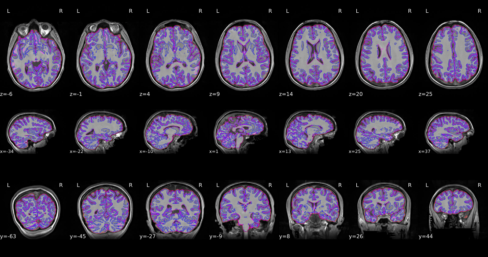
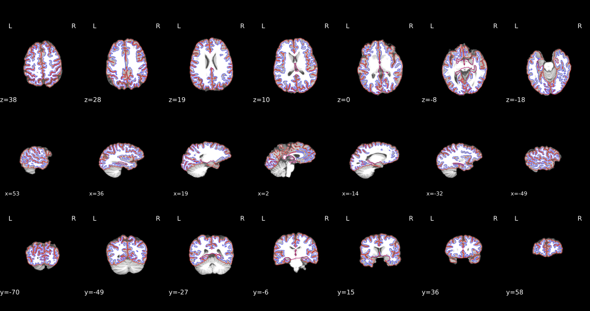
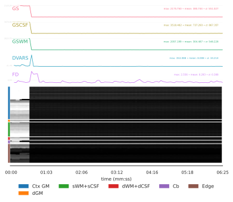
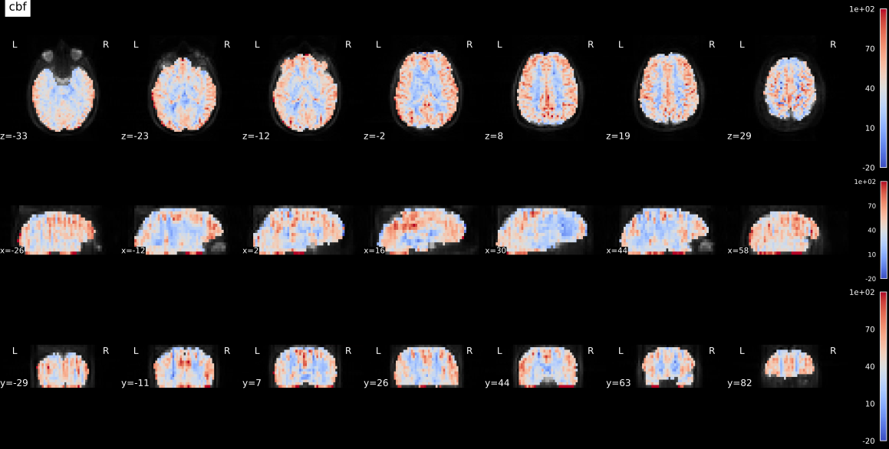

ASLprep#
Author: Steffen Bollmann & Monika Doerig
Date: 17 Oct 2024
License:
Note: If this notebook uses neuroimaging tools from Neurocontainers, those tools retain their original licenses. Please see Neurodesk citation guidelines for details.
Citation and Resources#
Tools included in this workflow#
ASLPrep:
Adebimpe, A., Bertolero, M., Dolui, S. et al. ASLPrep: a platform for processing of arterial spin labeled MRI and quantification of regional brain perfusion. Nat Methods 19, 683–686 (2022). https://doi.org/10.1038/s41592-022-01458-7
FreeSurfer:
Fischl B. (2012). FreeSurfer. NeuroImage, 62(2), 774–781. https://doi.org/10.1016/j.neuroimage.2012.01.021
Dataset#
Opensource Data from OpenNeuro:
Alvaro Galiano and Reyes Garcia de Eulate and Marta Vidorreta and Miriam Recio and Mario Riverol and José L. Zubieta and Maria A. Fernandez-Seara PhD (2021). Resting State Perfusion in Healthy Aging. OpenNeuro Dataset ds000240.doi: 10.18112/openneuro.ds000240.v2.0.0
Run aslprep#
# load fmriprep
import module
import os
await module.load('aslprep/0.7.5')
await module.list()
['aslprep/0.7.5']
# Request a freesurfer license and store it in your homedirectory.
# This is just an example - please replace with your license id:
license_path = os.path.expanduser("~/.license")
# Create the license file using Python (more reliable than ! commands in batch execution)
license_content = """Steffen.Bollmann@cai.uq.edu.au
21029
*Cqyn12sqTCxo
FSxgcvGkNR59Y
"""
with open(license_path, 'w') as f:
f.write(license_content)
# Verify the license file was created
if os.path.exists(license_path):
print(f"✅ FreeSurfer license file created at: {license_path}")
with open(license_path, 'r') as f:
print(f" Lines: {len(f.readlines())}")
else:
raise RuntimeError(f"❌ Failed to create FreeSurfer license file at {license_path}")
✅ FreeSurfer license file created at: /home/jovyan/.license
Lines: 4
# download data using datalad
!datalad install https://github.com/OpenNeuroDatasets/ds000240.git
!cd ds000240 && datalad get sub-01
Cloning: 0%| | 0.00/2.00 [00:00<?, ? candidates/s]
Enumerating: 0.00 Objects [00:00, ? Objects/s]
Counting: 0%| | 0.00/1.20k [00:00<?, ? Objects/s]
Compressing: 0%| | 0.00/883 [00:00<?, ? Objects/s]
Receiving: 0%| | 0.00/2.39k [00:00<?, ? Objects/s]
Resolving: 0%| | 0.00/256 [00:00<?, ? Deltas/s]
[INFO ] Remote origin not usable by git-annex; setting annex-ignore
[INFO ] https://github.com/OpenNeuroDatasets/ds000240.git/config download failed: Not Found
[INFO ] access to 1 dataset sibling s3-PRIVATE not auto-enabled, enable with:
| datalad siblings -d "/home/jovyan/workspace/books/examples/quantitative_imaging/ds000240" enable -s s3-PRIVATE
install(ok): /home/jovyan/workspace/books/examples/quantitative_imaging/ds000240 (dataset)
Total: 0%| | 0.00/18.0M [00:00<?, ? Bytes/s]
Get sub-01/a .. 1_T1w.nii.gz: 0%| | 0.00/9.52M [00:00<?, ? Bytes/s]
Get sub-01/a .. 1_T1w.nii.gz: 0%| | 33.4k/9.52M [00:00<01:03, 149k Bytes/s]
Get sub-01/a .. 1_T1w.nii.gz: 1%| | 85.6k/9.52M [00:00<00:47, 199k Bytes/s]
Get sub-01/a .. 1_T1w.nii.gz: 2%| | 155k/9.52M [00:00<00:36, 253k Bytes/s]
Get sub-01/a .. 1_T1w.nii.gz: 3%|▏ | 329k/9.52M [00:00<00:19, 471k Bytes/s]
Get sub-01/a .. 1_T1w.nii.gz: 7%|▎ | 660k/9.52M [00:01<00:10, 862k Bytes/s]
Get sub-01/a .. 1_T1w.nii.gz: 13%|▍ | 1.20M/9.52M [00:01<00:05, 1.41M Bytes/s]
Get sub-01/a .. 1_T1w.nii.gz: 21%|▋ | 2.02M/9.52M [00:01<00:03, 2.35M Bytes/s]
Get sub-01/a .. 1_T1w.nii.gz: 38%|█▏ | 3.66M/9.52M [00:01<00:01, 5.00M Bytes/s]
Get sub-01/a .. 1_T1w.nii.gz: 64%|█▉ | 6.05M/9.52M [00:01<00:00, 5.72M Bytes/s]
Get sub-01/a .. 1_T1w.nii.gz: 85%|██▌| 8.11M/9.52M [00:02<00:00, 6.83M Bytes/s]
Get sub-01/a .. 1_T1w.nii.gz: 0%| | 0.00/9.52M [00:00<?, ? Bytes/s]
Total: 53%|█████████████▊ | 9.52M/18.0M [00:03<00:03, 2.69M Bytes/s]
Get sub-01/p .. 1_asl.nii.gz: 0%| | 0.00/8.48M [00:00<?, ? Bytes/s]
Get sub-01/p .. 1_asl.nii.gz: 37%|█ | 3.14M/8.48M [00:00<00:00, 14.8M Bytes/s]
Get sub-01/p .. 1_asl.nii.gz: 78%|██▎| 6.62M/8.48M [00:00<00:00, 14.3M Bytes/s]
Get sub-01/p .. 1_asl.nii.gz: 99%|██▉| 8.39M/8.48M [00:00<00:00, 11.6M Bytes/s]
Get sub-01/p .. 1_asl.nii.gz: 0%| | 0.00/8.48M [00:00<?, ? Bytes/s]
get(ok): sub-01/anat/sub-01_T1w.nii.gz (file) [from s3-PUBLIC...]
get(ok): sub-01/perf/sub-01_asl.nii.gz (file) [from s3-PUBLIC...]
get(ok): sub-01 (directory)
action summary:
get (ok: 3)
%%bash
set -u -o pipefail
# aslprep data/bids_root/ out/ participant -w work/
LOG_FILE="aslprep.log"
MD_ONLY_ARG=""
if aslprep --help 2>&1 | grep -q -- "--md-only-boilerplate"; then
MD_ONLY_ARG="--md-only-boilerplate"
fi
aslprep ds000240 \
aslprep-output \
participant \
--participant-label 01 \
--fs-license-file ~/.license \
-w aslprep-work \
${MD_ONLY_ARG} 2>&1 | tee "$LOG_FILE"
ASLPREP_RC=${PIPESTATUS[0]}
echo "---"
echo "ASLPrep exit code: ${ASLPREP_RC}"
echo "Log file: ${LOG_FILE}"
echo "--- Last 80 log lines ---"
tail -n 80 "$LOG_FILE" || true
echo "--- Potential error hints (ERROR/Traceback/Exception/pandoc/boilerplate/CITATION) ---"
grep -nE "ERROR|Traceback|Exception|pandoc|boilerplate|CITATION" "$LOG_FILE" | tail -n 50 || true
echo "--- aslprep-output/logs inspection ---"
if [ -d "aslprep-output/logs" ]; then
find "aslprep-output/logs" -type f | sort
find "aslprep-output/logs" -type f \( -iname "*crash*" -o -iname "*.err" -o -iname "*.log" -o -iname "*.txt" -o -iname "*CITATION*" \) | sort | tail -n 25 | while read -r f; do
echo "===== ${f} ====="
tail -n 40 "$f" || true
done
else
echo "aslprep-output/logs not found"
fi
exit "${ASLPREP_RC}"
bids-validator does not appear to be installed
260228-06:34:09,308 nipype.workflow IMPORTANT:
Running ASLPrep version 0.7.5
License NOT
ICE ##################################################
ASLPrep 0.7.5
Copyright 202
3 The PennLINC Team and the NiPreps Developers.
This product is primarily develop
ed by the PennLINC team,
but it is also a part of the NiPreps community.
This product includes software developed by
the NiPreps Community (https://nipreps.org/).
Portions of this software were developed at the Department of
Psychology
at Stanford University, Stanford, CA, US.
This software is also distributed as a
Docker container image.
The bootstrapping file for the image ("Dockerfile") is licensed
under the MIT License.
This software may be distributed through an add-on
package called
"Docker Wrapper" that is under the BSD 3-clause License.
##########
#######################################################
260228-06:34:10,935 nipype.workflow IMPORTANT:
Building ASLPrep's workflow:
* BIDS data
set path: /home/jovyan/workspace/books/examples/quantitative_imaging/ds000240.
* Particip
ant list: ['01'].
* Run identifier: 20260228-063348_22419d51-109d-470b-8584-45a3c6914cf3.
* Output spaces: MNI152NLin2009cAsym:res-native.
* Pre-run FreeSurfer's SUBJE
CTS_DIR: /home/jovyan/workspace/books/examples/quantitative_imaging/aslprep-output/sourcedata/freesu
rfer.
Downloading https://templateflow.s3.amazonaws.com/tpl-MNI152NLin2009cAsym/tpl-MNI152NLin2009cAsym_re
s-01_T1w.nii.gz
0%| | 0.00/13.7M [00:00<?, ?B/s]
0%| | 17.4k/13.7M [00:00<02:46, 82.1kB/s]
0%| | 52.2k/13.7M [00:00<01:43, 131kB/s]
1%| | 122k/13.7M [00:00<01:01, 222kB/s]
2%|▏ | 279k/13.7M [00:00<00:31, 427kB/s]
4%|▍ | 592k/13.7M [00:01<00:16, 809kB/s]
9%|▉ | 1.20M/13.7M [00:01<00:08, 1.52MB/s]
15%|█▍ | 2.05M/13.7M [00:01<00:04, 2.34MB/s]
30%|███ | 4.13M/13.7M [00:01<00:02, 4.74MB/s]
46%|████▌ | 6.23M/13.7M [00:01<00:01, 6.37MB/s]
62%|██████▏ | 8.42M/13.7M [00:02<00:00, 7.62MB/s]
78%|███████▊ | 10.6M/13.7M [00:02<00:00, 8.50MB/s]
94%|█████████▎| 12.8M/13.7M [00:02<00:00, 9.05MB/s]
100%|██████████| 13.7M/13.7M [00:02<00:00, 5.38MB/s]
Downloading https://templateflow.s3.amazonaws.com/tpl-MNI152NLin2009cAsym/tpl-MNI152NLin2009cAsym_re
s-01_desc-brain_mask.nii.gz
0%| | 0.00/160k [00:00<?, ?B/s]
11%|█ | 17.4k/160k [00:00<00:01, 82.9kB/s]
44%|████▎ | 69.6k/160k [00:00<00:00, 180kB/s]
87%|████████▋ | 138k/160k [00:00<00:00, 247kB/s]
100%|██████████| 160k/160k [00:00<00:00, 252kB/s]
Downloading https://templateflow.s3.amazonaws.com/tpl-MNI152NLin2009cAsym/tpl-MNI152NLin2009cAsym_re
s-01_T2w.nii.gz
0%| | 0.00/13.3M [00:00<?, ?B/s]
0%| | 17.4k/13.3M [00:00<02:45, 80.3kB/s]
0%| | 52.2k/13.3M [00:00<01:42, 130kB/s]
1%| | 87.0k/13.3M [00:00<01:30, 146kB/s]
2%|▏ | 209k/13.3M [00:00<00:41, 316kB/s]
3%|▎ | 435k/13.3M [00:01<00:21, 588kB/s]
7%|▋ | 888k/13.3M [00:01<00:11, 1.12MB/s]
14%|█▎ | 1.81M/13.3M [00:01<00:05, 2.18MB/s]
28%|██▊ | 3.66M/13.3M [00:01<00:02, 4.11MB/s]
47%|████▋ | 6.18M/13.3M [00:01<00:01, 6.34MB/s]
69%|██████▊ | 9.11M/13.3M [00:02<00:00, 8.39MB/s]
86%|████████▋ | 11.5M/13.3M [00:02<00:00, 9.23MB/s]
100%|██████████| 13.3M/13.3M [00:02<00:00, 5.45MB/s]
260228-06:34:21,144 nipype.workflow INFO:
ANAT Stage 1: Adding template workflow
260228-06:34:22,306 nipype.workflow INFO:
ANAT Stage 2: Preparing brain extraction workflow
Downloading https://templateflow.s3.amazonaws.com/tpl-OASIS30ANTs/tpl-OASIS30ANTs_res-01_T1w.nii.gz
0%| | 0.00/32.4M [00:00<?, ?B/s]
0%| | 17.4k/32.4M [00:00<06:31, 82.5kB/s]
0%| | 69.6k/32.4M [00:00<02:59, 180kB/s]
0%| | 139k/32.4M [00:00<02:09, 248kB/s]
1%| | 313k/32.4M [00:00<01:07, 474kB/s]
2%|▏ | 679k/32.4M [00:01<00:34, 931kB/s]
4%|▍ | 1.38M/32.4M [00:01<00:17, 1.74MB/s]
9%|▊ | 2.78M/32.4M [00:01<00:09, 3.19MB/s]
17%|█▋ | 5.45M/32.4M [00:01<00:04, 5.98MB/s]
24%|██▍ | 7.86M/32.4M [00:01<00:03, 7.51MB/s]
32%|███▏ | 10.5M/32.4M [00:02<00:02, 8.98MB/s]
41%|████ | 13.3M/32.4M [00:02<00:01, 10.3MB/s]
49%|████▉ | 15.8M/32.4M [00:02<00:01, 10.8MB/s]
57%|█████▋ | 18.5M/32.4M [00:02<00:01, 11.4MB/s]
65%|██████▌ | 21.2M/32.4M [00:03<00:00, 11.7MB/s]
74%|███████▍ | 24.0M/32.4M [00:03<00:00, 12.2MB/s]
82%|████████▏ | 26.4M/32.4M [00:03<00:00, 12.0MB/s]
91%|█████████ | 29.4M/32.4M [00:03<00:00, 12.5MB/s]
99%|█████████▉| 32.1M/32.4M [00:03<00:00, 12.5MB/s]
100%|██████████| 32.4M/32.4M [00:03<00:00, 8.36MB/s]
Downloading https://templateflow.s3.amazonaws.com/tpl-OASIS30ANTs/tpl-OASIS30ANTs_res-01_label-brain
_probseg.nii.gz
0%| | 0.00/2.59M [00:00<?, ?B/s]
1%| | 17.4k/2.59M [00:00<00:30, 83.0kB/s]
3%|▎ | 69.6k/2.59M [00:00<00:13, 181kB/s]
6%|▌ | 157k/2.59M [00:00<00:08, 286kB/s]
13%|█▎ | 331k/2.59M [00:00<00:04, 499kB/s]
27%|██▋ | 696k/2.59M [00:01<00:02, 945kB/s]
55%|█████▌ | 1.43M/2.59M [00:01<00:00, 1.80MB/s]
100%|██████████| 2.59M/2.59M [00:01<00:00, 2.02MB/s]
Downloading https://templateflow.s3.amazonaws.com/tpl-OASIS30ANTs/tpl-OASIS30ANTs_res-01_desc-BrainC
erebellumExtraction_mask.nii.gz
0%| | 0.00/265k [00:00<?, ?B/s]
7%|▋ | 17.4k/265k [00:00<00:02, 82.5kB/s]
26%|██▋ | 69.6k/265k [00:00<00:01, 180kB/s]
59%|█████▉ | 157k/265k [00:00<00:00, 284kB/s]
100%|██████████| 265k/265k [00:00<00:00, 415kB/s]
Downloading https://templateflow.s3.amazonaws.com/tpl-OASIS30ANTs/tpl-OASIS30ANTs_res-01_label-WM_pr
obseg.nii.gz
0%| | 0.00/4.06M [00:00<?, ?B/s]
0%| | 17.4k/4.06M [00:00<00:48, 82.5kB/s]
2%|▏ | 71.7k/4.06M [00:00<00:21, 185kB/s]
3%|▎ | 124k/4.06M [00:00<00:18, 214kB/s]
7%|▋ | 281k/4.06M [00:00<00:08, 422kB/s]
15%|█▌ | 611k/4.06M [00:01<00:04, 835kB/s]
31%|███ | 1.26M/4.06M [00:01<00:01, 1.59MB/s]
63%|██████▎ | 2.56M/4.06M [00:01<00:00, 3.04MB/s]
100%|██████████| 4.06M/4.06M [00:01<00:00, 2.71MB/s]
Downloading https://templateflow.s3.amazonaws.com/tpl-OASIS30ANTs/tpl-OASIS30ANTs_res-01_label-BS_pr
obseg.nii.gz
0%| | 0.00/447k [00:00<?, ?B/s]
4%|▍ | 17.4k/447k [00:00<00:05, 82.6kB/s]
16%|█▌ | 69.6k/447k [00:00<00:02, 180kB/s]
31%|███ | 138k/447k [00:00<00:01, 247kB/s]
66%|██████▋ | 296k/447k [00:00<00:00, 445kB/s]
100%|██████████| 447k/447k [00:00<00:00, 529kB/s]
260228-06:34:34,472 nipype.workflow INFO:
ANAT Stage 3: Preparing segmentation workflow
260228-06:34:34,480 nipype.workflow INFO:
ANAT Stage 4: Preparing normalization workflow for ['MNI
152NLin2009cAsym']
260228-06:34:34,500 nipype.workflow INFO:
ANAT Stage 5: Preparing surface reconstruction workflow
260228-06:34:34,540 nipype.workflow INFO:
ANAT Stage 6: Preparing mask refinement workflow
260228-06:34:34,544 nipype.workflow INFO:
ANAT No T2w images provided - skipping Stage 7
260228-06:34:34,544 nipype.workflow INFO:
ANAT Stage 8: Creating GIFTI surfaces for ['white', 'pia
l', 'midthickness', 'sphere_reg', 'sphere']
260228-06:34:34,570 nipype.workflow INFO:
ANAT Stage 8: Creating GIFTI metrics for ['thickness', '
sulc']
260228-06:34:34,582 nipype.workflow INFO:
ANAT Stage 8a: Creating cortical ribbon mask
260228-06:34:34,588 nipype.workflow INFO:
ANAT Stage 9: Creating fsLR registration sphere
260228-06:34:34,594 nipype.workflow INFO:
ANAT Stage 10: MSM-Sulc disabled
260228-06:34:34,964 nipype.workflow INFO:
Collected run data for /home/jovyan/workspace/books/exam
ples/quantitative_imaging/ds000240/sub-01/perf/sub-01_asl.nii.gz:
aslcontext: /home/jovyan/workspace
/books/examples/quantitative_imaging/ds000240/sub-01/perf/sub-01_aslcontext.tsv
m0scan: null
sbref:
null
260228-06:34:34,982 nipype.workflow INFO:
No single-band-reference found for sub-01_asl.nii.gz.
260228-06:34:35,199 nipype.workflow INFO:
Stage 1: Adding HMC aslref workflow
260228-06:34:35,211 nipype.workflow INFO:
Stage 2: Adding motion correction workflow
260228-06:34:35,217 nipype.workflow INFO:
Stage 3: Adding coregistration aslref workflow
Downloading https://templateflow.s3.amazonaws.com/tpl-MNI152NLin2009cAsym/tpl-MNI152NLin2009cAsym_re
s-02_desc-fMRIPrep_boldref.nii.gz
0%| | 0.00/1.75M [00:00<?, ?B/s]
1%| | 17.4k/1.75M [00:00<00:20, 82.6kB/s]
4%|▍ | 69.6k/1.75M [00:00<00:09, 180kB/s]
7%|▋ | 122k/1.75M [00:00<00:08, 197kB/s]
16%|█▌ | 279k/1.75M [00:00<00:03, 402kB/s]
27%|██▋ | 470k/1.75M [00:01<00:02, 572kB/s]
39%|███▉ | 679k/1.75M [00:01<00:01, 703kB/s]
51%|█████ | 888k/1.75M [00:01<00:01, 793kB/s]
63%|██████▎ | 1.10M/1.75M [00:01<00:00, 859kB/s]
76%|███████▌ | 1.32M/1.75M [00:01<00:00, 925kB/s]
89%|████████▉ | 1.57M/1.75M [00:02<00:00, 993kB/s]
100%|██████████| 1.75M/1.75M [00:02<00:00, 809kB/s]
Downloading https://templateflow.s3.amazonaws.com/tpl-MNI152NLin2009cAsym/tpl-MNI152NLin2009cAsym_re
s-02_desc-brain_mask.nii.gz
0%| | 0.00/29.6k [00:00<?, ?B/s]
62%|██████▏ | 18.4k/29.6k [00:00<00:00, 87.5kB/s]
100%|██████████| 29.6k/29.6k [00:00<00:00, 140kB/s]
Downloading https://templateflow.s3.amazonaws.com/tpl-MNI152NLin2009cAsym/tpl-MNI152NLin2009cAsym_re
s-01_label-brain_probseg.nii.gz
0%| | 0.00/3.93M [00:00<?, ?B/s]
0%| | 1.02k/3.93M [00:00<13:22, 4.89kB/s]
0%| | 17.4k/3.93M [00:00<01:01, 63.6kB/s]
2%|▏ | 69.6k/3.93M [00:00<00:23, 161kB/s]
4%|▎ | 139k/3.93M [00:00<00:16, 234kB/s]
8%|▊ | 296k/3.93M [00:00<00:08, 424kB/s]
16%|█▌ | 627k/3.93M [00:01<00:03, 826kB/s]
32%|███▏ | 1.27M/3.93M [00:01<00:01, 1.57MB/s]
65%|██████▌ | 2.56M/3.93M [00:01<00:00, 3.03MB/s]
100%|██████████| 3.93M/3.93M [00:01<00:00, 2.32MB/s]
Downloading https://templateflow.s3.amazonaws.com/tpl-MNI152NLin2009cAsym/tpl-MNI152NLin2009cAsym_re
s-01_desc-carpet_dseg.nii.gz
0%| | 0.00/451k [00:00<?, ?B/s]
0%| | 1.02k/451k [00:00<01:31, 4.90kB/s]
4%|▍ | 17.4k/451k [00:00<00:07, 54.5kB/s]
15%|█▌ | 69.6k/451k [00:00<00:02, 149kB/s]
31%|███ | 139k/451k [00:00<00:01, 224kB/s]
66%|██████▌ | 296k/451k [00:01<00:00, 416kB/s]
100%|██████████| 451k/451k [00:01<00:00, 429kB/s]
Downloading https://templateflow.s3.amazonaws.com/tpl-MNI152NLin2009cAsym/tpl-MNI152NLin2009cAsym_fr
om-MNI152NLin6Asym_mode-image_xfm.h5
0%| | 0.00/205M [00:00<?, ?B/s]
0%| | 17.4k/205M [00:00<44:12, 77.2kB/s]
0%| | 69.6k/205M [00:00<19:33, 174kB/s]
0%| | 138k/205M [00:00<14:04, 242kB/s]
0%| | 296k/205M [00:00<07:45, 439kB/s]
0%| | 627k/205M [00:01<04:01, 845kB/s]
1%| | 1.31M/205M [00:01<02:03, 1.65MB/s]
1%|▏ | 2.64M/205M [00:01<01:03, 3.19MB/s]
3%|▎ | 5.25M/205M [00:01<00:32, 6.11MB/s]
4%|▍ | 8.39M/205M [00:01<00:22, 8.71MB/s]
5%|▌ | 11.2M/205M [00:02<00:19, 9.91MB/s]
7%|▋ | 13.9M/205M [00:02<00:18, 10.5MB/s]
8%|▊ | 16.7M/205M [00:02<00:16, 11.2MB/s]
9%|▉ | 19.3M/205M [00:02<00:15, 11.6MB/s]
11%|█ | 22.0M/205M [00:03<00:15, 11.9MB/s]
12%|█▏ | 24.8M/205M [00:03<00:14, 12.4MB/s]
14%|█▎ | 27.9M/205M [00:03<00:13, 13.0MB/s]
15%|█▌ | 30.8M/205M [00:03<00:13, 13.3MB/s]
17%|█▋ | 33.8M/205M [00:03<00:12, 13.5MB/s]
18%|█▊ | 36.7M/205M [00:04<00:12, 13.6MB/s]
19%|█▉ | 39.7M/205M [00:04<00:11, 13.8MB/s]
21%|██ | 42.6M/205M [00:04<00:11, 13.7MB/s]
22%|██▏ | 45.4M/205M [00:04<00:12, 13.3MB/s]
24%|██▎ | 48.3M/205M [00:04<00:11, 13.5MB/s]
25%|██▌ | 51.3M/205M [00:05<00:11, 13.6MB/s]
26%|██▋ | 54.1M/205M [00:05<00:11, 13.5MB/s]
28%|██▊ | 57.2M/205M [00:05<00:10, 13.9MB/s]
29%|██▉ | 60.4M/205M [00:05<00:10, 14.2MB/s]
31%|███ | 63.1M/205M [00:05<00:10, 13.8MB/s]
32%|███▏ | 66.2M/205M [00:06<00:09, 13.9MB/s]
34%|███▍ | 69.3M/205M [00:06<00:09, 13.6MB/s]
35%|███▌ | 71.8M/205M [00:06<00:10, 13.1MB/s]
36%|███▋ | 74.7M/205M [00:06<00:10, 13.0MB/s]
38%|███▊ | 77.4M/205M [00:07<00:09, 12.9MB/s]
39%|███▉ | 80.3M/205M [00:07<00:09, 13.1MB/s]
41%|████ | 83.1M/205M [00:07<00:09, 13.2MB/s]
42%|████▏ | 86.0M/205M [00:07<00:08, 13.3MB/s]
43%|████▎ | 88.8M/205M [00:07<00:08, 13.2MB/s]
45%|████▍ | 91.5M/205M [00:08<00:08, 12.9MB/s]
46%|████▌ | 94.4M/205M [00:08<00:08, 13.0MB/s]
47%|████▋ | 97.2M/205M [00:08<00:08, 13.1MB/s]
49%|████▉ | 100M/205M [00:08<00:07, 13.3MB/s]
50%|█████ | 103M/205M [00:09<00:07, 13.8MB/s]
52%|█████▏ | 106M/205M [00:09<00:07, 13.7MB/s]
53%|█████▎ | 109M/205M [00:09<00:07, 13.6MB/s]
55%|█████▍ | 112M/205M [00:09<00:06, 13.8MB/s]
56%|█████▌ | 115M/205M [00:09<00:06, 13.8MB/s]
58%|█████▊ | 118M/205M [00:10<00:06, 13.8MB/s]
59%|█████▉ | 121M/205M [00:10<00:06, 13.8MB/s]
60%|██████ | 123M/205M [00:10<00:06, 13.5MB/s]
62%|██████▏ | 126M/205M [00:10<00:05, 13.9MB/s]
63%|██████▎ | 130M/205M [00:10<00:05, 14.2MB/s]
65%|██████▍ | 133M/205M [00:11<00:05, 14.3MB/s]
66%|██████▌ | 136M/205M [00:11<00:04, 14.2MB/s]
68%|██████▊ | 139M/205M [00:11<00:04, 14.2MB/s]
69%|██████▉ | 142M/205M [00:11<00:04, 14.1MB/s]
71%|███████ | 145M/205M [00:11<00:04, 14.0MB/s]
72%|███████▏ | 147M/205M [00:12<00:04, 13.8MB/s]
73%|███████▎ | 150M/205M [00:12<00:03, 13.9MB/s]
75%|███████▍ | 153M/205M [00:12<00:03, 14.1MB/s]
76%|███████▋ | 156M/205M [00:12<00:03, 14.2MB/s]
78%|███████▊ | 159M/205M [00:13<00:03, 14.1MB/s]
79%|███████▉ | 162M/205M [00:13<00:03, 14.0MB/s]
81%|████████ | 165M/205M [00:13<00:02, 14.0MB/s]
82%|████████▏ | 168M/205M [00:13<00:02, 16.1MB/s]
83%|████████▎ | 170M/205M [00:13<00:02, 14.1MB/s]
84%|████████▎ | 171M/205M [00:13<00:02, 13.0MB/s]
85%|████████▍ | 174M/205M [00:14<00:02, 13.0MB/s]
86%|████████▋ | 177M/205M [00:14<00:02, 13.6MB/s]
88%|████████▊ | 180M/205M [00:14<00:01, 13.9MB/s]
89%|████████▉ | 183M/205M [00:14<00:01, 13.3MB/s]
91%|█████████ | 186M/205M [00:14<00:01, 13.6MB/s]
92%|█████████▏| 189M/205M [00:15<00:01, 13.7MB/s]
94%|█████████▎| 192M/205M [00:15<00:00, 13.7MB/s]
95%|█████████▌| 195M/205M [00:15<00:00, 13.5MB/s]
97%|█████████▋| 198M/205M [00:15<00:00, 13.5MB/s]
98%|█████████▊| 201M/205M [00:16<00:00, 13.5MB/s]
99%|█████████▉| 204M/205M [00:16<00:00, 13.7MB/s]
100%|██████████| 205M/205M [00:16<00:00, 12.6MB/s]
260228-06:35:07,10 nipype.workflow INFO:
ASLPrep workflow graph with 417 nodes built successfully.
260228-06:35:25,273 nipype.workflow IMPORTANT:
ASLPrep started!
260228-06:35:34,118 nipype.interface WARNING:
Cannot determine world direction of phase encoding.
Orientation: RAS; PE dir: None
260228-06:35:43,353 nipype.workflow INFO:
[Node] Setting-up "aslprep_0_7_wf.sub_01_wf.anat_fit_wf.
brain_extraction_wf.res_tmpl" in "/home/jovyan/workspace/books/examples/quantitative_imaging/aslprep
-work/aslprep_0_7_wf/sub_01_wf/anat_fit_wf/brain_extraction_wf/res_tmpl".
260228-06:35:43,356 nipype
.workflow INFO:
[Node] Setting-up "aslprep_0_7_wf.sub_01_wf.anat_fit_wf.brain_extraction_wf.full_w
m" in "/home/jovyan/workspace/books/examples/quantitative_imaging/aslprep-work/aslprep_0_7_wf/sub_01
_wf/anat_fit_wf/brain_extraction_wf/full_wm".
260228-06:35:43,358 nipype.workflow INFO:
[Node] Executing "res_tmpl" <niworkflows.interfaces.niba
bel.RegridToZooms>
260228-06:35:43,358 nipype.workflow INFO:
[Node] Executing "full_wm" <nipype.in
terfaces.utility.wrappers.Function>
260228-06:35:43,559 nipype.workflow INFO:
[Node] Setting-up "aslprep_0_7_wf.sub_01_wf.asl_preproc_
asl.asl_fit_wf.processing_target" in "/home/jovyan/workspace/books/examples/quantitative_imaging/asl
prep-work/aslprep_0_7_wf/sub_01_wf/asl_preproc_asl/asl_fit_wf/processing_target".
260228-06:35:43,565 nipype.workflow INFO:
[Node] Executing "processing_target" <nipype.interfaces.
utility.wrappers.Function>
260228-06:35:43,998 nipype.workflow INFO:
[Node] Setting-up "aslprep_0_7_wf.sub_01_wf.anat_fit_wf.
brain_extraction_wf.lap_tmpl" in "/home/jovyan/workspace/books/examples/quantitative_imaging/aslprep
-work/aslprep_0_7_wf/sub_01_wf/anat_fit_wf/brain_extraction_wf/lap_tmpl".
260228-06:35:44,15 nipype.workflow INFO:
[Node] Executing "lap_tmpl" <nipype.interfaces.ants.utils
.ImageMath>
260228-06:35:44,316 nipype.workflow INFO:
[Node] Setting-up "aslprep_0_7_wf.sub_01_wf.asl_preproc_
asl.asl_fit_wf.ds_hmc_aslref_wf.raw_sources" in "/home/jovyan/workspace/books/examples/quantitative_
imaging/aslprep-work/aslprep_0_7_wf/sub_01_wf/asl_preproc_asl/asl_fit_wf/ds_hmc_aslref_wf/raw_source
s".
260228-06:35:44,324 nipype.workflow INFO:
[Node] Executing "raw_sources" <nipype.interfaces.utilit
y.wrappers.Function>
260228-06:35:44,333 nipype.workflow INFO:
[Node] Finished "raw_sources", elapsed time 0.000988s.
260228-06:35:44,344 nipype.workflow INFO:
[Node] Setting-up "aslprep_0_7_wf.sub_01_wf.asl_preproc_
asl.asl_native_wf.processing_target" in "/home/jovyan/workspace/books/examples/quantitative_imaging/
aslprep-work/aslprep_0_7_wf/sub_01_wf/asl_preproc_asl/asl_native_wf/processing_target".
260228-06:35:44,349 nipype.workflow INFO:
[Node] Executing "processing_target" <nipype.interfaces.
utility.wrappers.Function>
260228-06:35:44,562 nipype.workflow INFO:
[Node] Setting-up "aslprep_0_7_wf.sub_01_wf.asl_preproc_
asl.asl_fit_wf.hmc_aslref_wf.val_asl" in "/home/jovyan/workspace/books/examples/quantitative_imaging
/aslprep-work/aslprep_0_7_wf/sub_01_wf/asl_preproc_asl/asl_fit_wf/hmc_aslref_wf/val_asl".
260228-06:35:44,564 nipype.workflow INFO:
[Node] Executing "val_asl" <niworkflows.interfaces.heade
r.ValidateImage>
260228-06:35:44,684 nipype.workflow INFO:
[Node] Finished "processing_target", elapsed time 1.1112
16s.
260228-06:35:44,696 nipype.workflow INFO:
[Node] Setting-up "aslprep_0_7_wf.sub_01_wf.asl_preproc_
asl.ds_asl_std_wf.raw_sources" in "/home/jovyan/workspace/books/examples/quantitative_imaging/aslpre
p-work/aslprep_0_7_wf/sub_01_wf/asl_preproc_asl/ds_asl_std_wf/raw_sources".
260228-06:35:44,700 nipy
pe.workflow INFO:
[Node] Executing "raw_sources" <nipype.interfaces.utility.wrappers.Function>
260
228-06:35:44,709 nipype.workflow INFO:
[Node] Finished "raw_sources", elapsed time 0.000464s.
2602
28-06:35:44,712 nipype.workflow INFO:
[Node] Setting-up "aslprep_0_7_wf.sub_01_wf.asl_preproc_asl.
parcellate_cbf_wf.atlas_name_grabber" in "/home/jovyan/workspace/books/examples/quantitative_imaging
/aslprep-work/aslprep_0_7_wf/sub_01_wf/asl_preproc_asl/parcellate_cbf_wf/atlas_name_grabber".
260228
-06:35:44,714 nipype.workflow INFO:
[Node] Executing "atlas_name_grabber" <nipype.interfaces.utili
ty.wrappers.Function>
260228-06:35:44,716 nipype.workflow INFO:
[Node] Finished "atlas_name_grabbe
r", elapsed time 0.000317s.
260228-06:35:44,721 nipype.workflow INFO:
[Node] Setting-up "aslprep_0
_7_wf.sub_01_wf.anat_fit_wf.register_template_wf.set_reference" in "/home/jovyan/workspace/books/exa
mples/quantitative_imaging/aslprep-work/aslprep_0_7_wf/sub_01_wf/anat_fit_wf/register_template_wf/_t
emplate_MNI152NLin2009cAsym/set_reference".
260228-06:35:44,741 nipype.workflow INFO:
[Node] Finis
hed "val_asl", elapsed time 0.157088s.
260228-06:35:45,90 nipype.workflow INFO:
[Node] Finished "full_wm", elapsed time 1.728723s.
260228-06:35:45,251 nipype.workflow INFO:
[Node] Setting-up "aslprep_0_7_wf.sub_01_wf.asl_preproc_
asl.asl_native_wf.validate_asl" in "/home/jovyan/workspace/books/examples/quantitative_imaging/aslpr
ep-work/aslprep_0_7_wf/sub_01_wf/asl_preproc_asl/asl_native_wf/validate_asl".
260228-06:35:45,254 nipype.workflow INFO:
[Node] Executing "validate_asl" <niworkflows.interfaces.
header.ValidateImage>
260228-06:35:45,286 nipype.workflow INFO:
[Node] Finished "processing_target", elapsed time 0.9359
91s.
260228-06:35:45,386 nipype.workflow INFO:
[Node] Finished "validate_asl", elapsed time 0.124942s.
260228-06:35:46,245 nipype.workflow INFO:
[Node] Finished "res_tmpl", elapsed time 2.848881s.
260228-06:35:47,346 nipype.workflow INFO:
[Node] Setting-up "aslprep_0_7_wf.sub_01_wf.asl_preproc_
asl.asl_fit_wf.ds_hmc_wf.sources" in "/home/jovyan/workspace/books/examples/quantitative_imaging/asl
prep-work/aslprep_0_7_wf/sub_01_wf/asl_preproc_asl/asl_fit_wf/ds_hmc_wf/sources".
260228-06:35:47,348 nipype.workflow INFO:
[Node] Executing "sources" <fmriprep.interfaces.bids.BID
SURI>
260228-06:35:47,358 nipype.workflow INFO:
[Node] Finished "sources", elapsed time 0.000191s.
260228-06:35:49,15 nipype.workflow INFO:
[Node] Setting-up "_atlas_file_grabber0" in "/home/jovyan
/workspace/books/examples/quantitative_imaging/aslprep-work/aslprep_0_7_wf/sub_01_wf/asl_preproc_asl
/parcellate_cbf_wf/atlas_file_grabber/mapflow/_atlas_file_grabber0".
260228-06:35:49,17 nipype.workflow INFO:
[Node] Executing "_atlas_file_grabber0" <nipype.interface
s.utility.wrappers.Function>
260228-06:35:49,23 nipype.workflow INFO:
[Node] Finished "_atlas_file_grabber0", elapsed time 0.00
2108s.
260228-06:35:49,24 nipype.workflow INFO:
[Node] Setting-up "_atlas_file_grabber1" in "/home/jovyan
/workspace/books/examples/quantitative_imaging/aslprep-work/aslprep_0_7_wf/sub_01_wf/asl_preproc_asl
/parcellate_cbf_wf/atlas_file_grabber/mapflow/_atlas_file_grabber1".
260228-06:35:49,26 nipype.workflow INFO:
[Node] Executing "_atlas_file_grabber1" <nipype.interface
s.utility.wrappers.Function>
260228-06:35:49,31 nipype.workflow INFO:
[Node] Finished "_atlas_file_grabber1", elapsed time 0.00
4059s.
260228-06:35:49,56 nipype.workflow INFO:
[Node] Setting-up "_atlas_file_grabber2" in "/home/jovyan
/workspace/books/examples/quantitative_imaging/aslprep-work/aslprep_0_7_wf/sub_01_wf/asl_preproc_asl
/parcellate_cbf_wf/atlas_file_grabber/mapflow/_atlas_file_grabber2".
260228-06:35:49,56 nipype.workf
low INFO:
[Node] Setting-up "_atlas_file_grabber3" in "/home/jovyan/workspace/books/examples/quant
itative_imaging/aslprep-work/aslprep_0_7_wf/sub_01_wf/asl_preproc_asl/parcellate_cbf_wf/atlas_file_g
rabber/mapflow/_atlas_file_grabber3".
260228-06:35:49,57 nipype.workflow INFO:
[Node] Executing "_
atlas_file_grabber2" <nipype.interfaces.utility.wrappers.Function>
260228-06:35:49,57 nipype.workflo
w INFO:
[Node] Executing "_atlas_file_grabber3" <nipype.interfaces.utility.wrappers.Function>
260228-06:35:49,64 nipype.workflow INFO:
[Node] Setting-up "_atlas_file_grabber4" in "/home/jovyan
/workspace/books/examples/quantitative_imaging/aslprep-work/aslprep_0_7_wf/sub_01_wf/asl_preproc_asl
/parcellate_cbf_wf/atlas_file_grabber/mapflow/_atlas_file_grabber4".
260228-06:35:49,64 nipype.workflow INFO:
[Node] Setting-up "_atlas_file_grabber5" in "/home/jovyan
/workspace/books/examples/quantitative_imaging/aslprep-work/aslprep_0_7_wf/sub_01_wf/asl_preproc_asl
/parcellate_cbf_wf/atlas_file_grabber/mapflow/_atlas_file_grabber5".
260228-06:35:49,65 nipype.workf
low INFO:
[Node] Executing "_atlas_file_grabber4" <nipype.interfaces.utility.wrappers.Function>
26
0228-06:35:49,66 nipype.workflow INFO:
[Node] Executing "_atlas_file_grabber5" <nipype.interfaces.
utility.wrappers.Function>
260228-06:35:49,68 nipype.workflow INFO:
[Node] Setting-up "_atlas_file
_grabber7" in "/home/jovyan/workspace/books/examples/quantitative_imaging/aslprep-work/aslprep_0_7_w
f/sub_01_wf/asl_preproc_asl/parcellate_cbf_wf/atlas_file_grabber/mapflow/_atlas_file_grabber7".
2602
28-06:35:49,68 nipype.workflow INFO:
[Node] Setting-up "_atlas_file_grabber6" in "/home/jovyan/wor
kspace/books/examples/quantitative_imaging/aslprep-work/aslprep_0_7_wf/sub_01_wf/asl_preproc_asl/par
cellate_cbf_wf/atlas_file_grabber/mapflow/_atlas_file_grabber6".
260228-06:35:49,68 nipype.workflow
INFO:
[Node] Setting-up "_atlas_file_grabber8" in "/home/jovyan/workspace/books/examples/quantitat
ive_imaging/aslprep-work/aslprep_0_7_wf/sub_01_wf/asl_preproc_asl/parcellate_cbf_wf/atlas_file_grabb
er/mapflow/_atlas_file_grabber8".
260228-06:35:49,69 nipype.workflow INFO:
[Node] Executing "_atla
s_file_grabber8" <nipype.interfaces.utility.wrappers.Function>
260228-06:35:49,69 nipype.workflow IN
FO:
[Node] Executing "_atlas_file_grabber6" <nipype.interfaces.utility.wrappers.Function>
260228-0
6:35:49,69 nipype.workflow INFO:
[Node] Executing "_atlas_file_grabber7" <nipype.interfaces.utilit
y.wrappers.Function>
260228-06:35:49,71 nipype.workflow INFO:
[Node] Finished "_atlas_file_grabber2", elapsed time 0.01
3228s.
260228-06:35:49,72 nipype.workflow INFO:
[Node] Finished "_atlas_file_grabber4", elapsed ti
me 0.005799s.
260228-06:35:49,72 nipype.workflow INFO:
[Node] Finished "_atlas_file_grabber8", ela
psed time 0.00215s.
260228-06:35:49,72 nipype.workflow INFO:
[Node] Finished "_atlas_file_grabber5
", elapsed time 0.005511s.
260228-06:35:49,75 nipype.workflow INFO:
[Node] Finished "_atlas_file_g
rabber7", elapsed time 0.004412s.
260228-06:35:49,75 nipype.workflow INFO:
[Node] Setting-up "_atl
as_file_grabber9" in "/home/jovyan/workspace/books/examples/quantitative_imaging/aslprep-work/aslpre
p_0_7_wf/sub_01_wf/asl_preproc_asl/parcellate_cbf_wf/atlas_file_grabber/mapflow/_atlas_file_grabber9
".
260228-06:35:49,76 nipype.workflow INFO:
[Node] Executing "_atlas_file_grabber9" <nipype.interf
aces.utility.wrappers.Function>
260228-06:35:49,78 nipype.workflow INFO:
[Node] Finished "_atlas_f
ile_grabber9", elapsed time 0.001345s.
260228-06:35:49,88 nipype.workflow INFO:
[Node] Setting-up
"_atlas_file_grabber10" in "/home/jovyan/workspace/books/examples/quantitative_imaging/aslprep-work/
aslprep_0_7_wf/sub_01_wf/asl_preproc_asl/parcellate_cbf_wf/atlas_file_grabber/mapflow/_atlas_file_gr
abber10".
260228-06:35:49,88 nipype.workflow INFO:
[Node] Setting-up "_atlas_file_grabber11" in "/
home/jovyan/workspace/books/examples/quantitative_imaging/aslprep-work/aslprep_0_7_wf/sub_01_wf/asl_
preproc_asl/parcellate_cbf_wf/atlas_file_grabber/mapflow/_atlas_file_grabber11".
260228-06:35:49,88
nipype.workflow INFO:
[Node] Setting-up "_atlas_file_grabber12" in "/home/jovyan/workspace/books/e
xamples/quantitative_imaging/aslprep-work/aslprep_0_7_wf/sub_01_wf/asl_preproc_asl/parcellate_cbf_wf
/atlas_file_grabber/mapflow/_atlas_file_grabber12".
260228-06:35:49,89 nipype.workflow INFO:
[Node
] Executing "_atlas_file_grabber11" <nipype.interfaces.utility.wrappers.Function>
260228-06:35:49,89
nipype.workflow INFO:
[Node] Executing "_atlas_file_grabber10" <nipype.interfaces.utility.wrapper
s.Function>
260228-06:35:49,90 nipype.workflow INFO:
[Node] Executing "_atlas_file_grabber12" <nip
ype.interfaces.utility.wrappers.Function>
260228-06:35:49,91 nipype.workflow INFO:
[Node] Finished
"_atlas_file_grabber11", elapsed time 0.001638s.
260228-06:35:49,91 nipype.workflow INFO:
[Node]
Setting-up "_atlas_file_grabber13" in "/home/jovyan/workspace/books/examples/quantitative_imaging/as
lprep-work/aslprep_0_7_wf/sub_01_wf/asl_preproc_asl/parcellate_cbf_wf/atlas_file_grabber/mapflow/_at
las_file_grabber13".
260228-06:35:49,93 nipype.workflow INFO:
[Node] Executing "_atlas_file_grabbe
r13" <nipype.interfaces.utility.wrappers.Function>
260228-06:35:49,95 nipype.workflow INFO:
[Node]
Finished "_atlas_file_grabber10", elapsed time 0.004792s.
260228-06:35:49,96 nipype.workflow INFO:
[Node] Finished "_atlas_file_grabber12", elapsed time 0.005711s.
260228-06:35:49,101 nipype.workfl
ow INFO:
[Node] Finished "_atlas_file_grabber3", elapsed time 0.009074s.
260228-06:35:49,101 nipyp
e.workflow INFO:
[Node] Finished "_atlas_file_grabber13", elapsed time 0.007289s.
260228-06:35:49,116 nipype.workflow INFO:
[Node] Finished "_atlas_file_grabber6", elapsed time 0.0
40221s.
260228-06:35:49,172 nipype.workflow INFO:
[Node] Executing "set_reference" <nipype.interfaces.util
ity.wrappers.Function>
260228-06:35:49,173 nipype.workflow INFO:
[Node] Finished "set_reference",
elapsed time 0.000407s.
260228-06:35:50,982 nipype.workflow INFO:
[Node] Setting-up "_atlas_file_grabber0" in "/home/jovya
n/workspace/books/examples/quantitative_imaging/aslprep-work/aslprep_0_7_wf/sub_01_wf/asl_preproc_as
l/parcellate_cbf_wf/atlas_file_grabber/mapflow/_atlas_file_grabber0".
260228-06:35:50,983 nipype.workflow INFO:
[Node] Cached "_atlas_file_grabber0" - collecting precom
puted outputs
260228-06:35:50,991 nipype.workflow INFO:
[Node] "_atlas_file_grabber0" found cached
.
260228-06:35:50,992 nipype.workflow INFO:
[Node] Setting-up "_atlas_file_grabber1" in "/home/jov
yan/workspace/books/examples/quantitative_imaging/aslprep-work/aslprep_0_7_wf/sub_01_wf/asl_preproc_
asl/parcellate_cbf_wf/atlas_file_grabber/mapflow/_atlas_file_grabber1".
260228-06:35:50,993 nipype.w
orkflow INFO:
[Node] Cached "_atlas_file_grabber1" - collecting precomputed outputs
260228-06:35:5
0,993 nipype.workflow INFO:
[Node] "_atlas_file_grabber1" found cached.
260228-06:35:50,993 nipype
.workflow INFO:
[Node] Setting-up "_atlas_file_grabber2" in "/home/jovyan/workspace/books/examples
/quantitative_imaging/aslprep-work/aslprep_0_7_wf/sub_01_wf/asl_preproc_asl/parcellate_cbf_wf/atlas_
file_grabber/mapflow/_atlas_file_grabber2".
260228-06:35:50,994 nipype.workflow INFO:
[Node] Cache
d "_atlas_file_grabber2" - collecting precomputed outputs
260228-06:35:50,994 nipype.workflow INFO:
[Node] "_atlas_file_grabber2" found cached.
260228-06:35:50,995 nipype.workflow INFO:
[Node] Set
ting-up "_atlas_file_grabber3" in "/home/jovyan/workspace/books/examples/quantitative_imaging/aslpre
p-work/aslprep_0_7_wf/sub_01_wf/asl_preproc_asl/parcellate_cbf_wf/atlas_file_grabber/mapflow/_atlas_
file_grabber3".
260228-06:35:50,995 nipype.workflow INFO:
[Node] Cached "_atlas_file_grabber3" - c
ollecting precomputed outputs
260228-06:35:50,995 nipype.workflow INFO:
[Node] "_atlas_file_grabbe
r3" found cached.
260228-06:35:50,996 nipype.workflow INFO:
[Node] Setting-up "_atlas_file_grabber
4" in "/home/jovyan/workspace/books/examples/quantitative_imaging/aslprep-work/aslprep_0_7_wf/sub_01
_wf/asl_preproc_asl/parcellate_cbf_wf/atlas_file_grabber/mapflow/_atlas_file_grabber4".
260228-06:35:50,997 nipype.workflow INFO:
[Node] Cached "_atlas_file_grabber4" - collecting precom
puted outputs
260228-06:35:51,3 nipype.workflow INFO:
[Node] "_atlas_file_grabber4" found cached.
260228-06:35:51,4 nipype.workflow INFO:
[Node] Setting-up "_atlas_file_grabber5" in "/home/jovyan/
workspace/books/examples/quantitative_imaging/aslprep-work/aslprep_0_7_wf/sub_01_wf/asl_preproc_asl/
parcellate_cbf_wf/atlas_file_grabber/mapflow/_atlas_file_grabber5".
260228-06:35:51,12 nipype.workfl
ow INFO:
[Node] Cached "_atlas_file_grabber5" - collecting precomputed outputs
260228-06:35:51,12
nipype.workflow INFO:
[Node] "_atlas_file_grabber5" found cached.
260228-06:35:51,12 nipype.workfl
ow INFO:
[Node] Setting-up "_atlas_file_grabber6" in "/home/jovyan/workspace/books/examples/quanti
tative_imaging/aslprep-work/aslprep_0_7_wf/sub_01_wf/asl_preproc_asl/parcellate_cbf_wf/atlas_file_gr
abber/mapflow/_atlas_file_grabber6".
260228-06:35:51,13 nipype.workflow INFO:
[Node] Cached "_atla
s_file_grabber6" - collecting precomputed outputs
260228-06:35:51,13 nipype.workflow INFO:
[Node]
"_atlas_file_grabber6" found cached.
260228-06:35:51,14 nipype.workflow INFO:
[Node] Setting-up "_
atlas_file_grabber7" in "/home/jovyan/workspace/books/examples/quantitative_imaging/aslprep-work/asl
prep_0_7_wf/sub_01_wf/asl_preproc_asl/parcellate_cbf_wf/atlas_file_grabber/mapflow/_atlas_file_grabb
er7".
260228-06:35:51,14 nipype.workflow INFO:
[Node] Cached "_atlas_file_grabber7" - collecting p
recomputed outputs
260228-06:35:51,14 nipype.workflow INFO:
[Node] "_atlas_file_grabber7" found ca
ched.
260228-06:35:51,15 nipype.workflow INFO:
[Node] Setting-up "_atlas_file_grabber8" in "/home/
jovyan/workspace/books/examples/quantitative_imaging/aslprep-work/aslprep_0_7_wf/sub_01_wf/asl_prepr
oc_asl/parcellate_cbf_wf/atlas_file_grabber/mapflow/_atlas_file_grabber8".
260228-06:35:51,16 nipype
.workflow INFO:
[Node] Cached "_atlas_file_grabber8" - collecting precomputed outputs
260228-06:35
:51,16 nipype.workflow INFO:
[Node] "_atlas_file_grabber8" found cached.
260228-06:35:51,17 nipype
.workflow INFO:
[Node] Setting-up "_atlas_file_grabber9" in "/home/jovyan/workspace/books/examples
/quantitative_imaging/aslprep-work/aslprep_0_7_wf/sub_01_wf/asl_preproc_asl/parcellate_cbf_wf/atlas_
file_grabber/mapflow/_atlas_file_grabber9".
260228-06:35:51,18 nipype.workflow INFO:
[Node] Cached "_atlas_file_grabber9" - collecting precomp
uted outputs
260228-06:35:51,18 nipype.workflow INFO:
[Node] "_atlas_file_grabber9" found cached.
260228-06:35:51,19 nipype.workflow INFO:
[Node] Setting-up "_atlas_file_grabber10" in "/home/jovya
n/workspace/books/examples/quantitative_imaging/aslprep-work/aslprep_0_7_wf/sub_01_wf/asl_preproc_as
l/parcellate_cbf_wf/atlas_file_grabber/mapflow/_atlas_file_grabber10".
260228-06:35:51,28 nipype.wor
kflow INFO:
[Node] Cached "_atlas_file_grabber10" - collecting precomputed outputs
260228-06:35:51
,28 nipype.workflow INFO:
[Node] "_atlas_file_grabber10" found cached.
260228-06:35:51,29 nipype.w
orkflow INFO:
[Node] Setting-up "_atlas_file_grabber11" in "/home/jovyan/workspace/books/examples/
quantitative_imaging/aslprep-work/aslprep_0_7_wf/sub_01_wf/asl_preproc_asl/parcellate_cbf_wf/atlas_f
ile_grabber/mapflow/_atlas_file_grabber11".
260228-06:35:51,30 nipype.workflow INFO:
[Node] Cached
"_atlas_file_grabber11" - collecting precomputed outputs
260228-06:35:51,30 nipype.workflow INFO:
[Node] "_atlas_file_grabber11" found cached.
260228-06:35:51,31 nipype.workflow INFO:
[Node] Sett
ing-up "_atlas_file_grabber12" in "/home/jovyan/workspace/books/examples/quantitative_imaging/aslpre
p-work/aslprep_0_7_wf/sub_01_wf/asl_preproc_asl/parcellate_cbf_wf/atlas_file_grabber/mapflow/_atlas_
file_grabber12".
260228-06:35:51,33 nipype.workflow INFO:
[Node] Cached "_atlas_file_grabber12" -
collecting precomputed outputs
260228-06:35:51,33 nipype.workflow INFO:
[Node] "_atlas_file_grabbe
r12" found cached.
260228-06:35:51,34 nipype.workflow INFO:
[Node] Setting-up "_atlas_file_grabber
13" in "/home/jovyan/workspace/books/examples/quantitative_imaging/aslprep-work/aslprep_0_7_wf/sub_0
1_wf/asl_preproc_asl/parcellate_cbf_wf/atlas_file_grabber/mapflow/_atlas_file_grabber13".
260228-06:35:51,35 nipype.workflow INFO:
[Node] Cached "_atlas_file_grabber13" - collecting precom
puted outputs
260228-06:35:51,35 nipype.workflow INFO:
[Node] "_atlas_file_grabber13" found cached
.
260228-06:35:52,54 nipype.workflow INFO:
[Node] Setting-up "aslprep_0_7_wf.sub_01_wf.bidssrc" in "
/home/jovyan/workspace/books/examples/quantitative_imaging/aslprep-work/aslprep_0_7_wf/sub_01_wf/bid
ssrc".
260228-06:35:52,56 nipype.workflow INFO:
[Node] Executing "bidssrc" <aslprep.interfaces.bids.BIDSD
ataGrabber>
260228-06:35:52,98 nipype.interface INFO:
No "bold" images found for sub-01
260228-06:35:52,99 nip
ype.interface INFO:
No "t2w" images found for sub-01
260228-06:35:52,99 nipype.interface INFO:
No "flair" images found for sub-01
260228-06:35:52,99 ni
pype.interface INFO:
No "fmap" images found for sub-01
260228-06:35:52,99 nipype.interface INFO:
No "sbref" images found for sub-01
260228-06:35:52,99 nipype.interface INFO:
No "roi" images foun
d for sub-01
260228-06:35:52,99 nipype.interface INFO:
No "pet" images found for sub-01
260228-06:
35:52,100 nipype.workflow INFO:
[Node] Finished "bidssrc", elapsed time 0.00098s.
260228-06:35:53,156 nipype.workflow INFO:
[Node] Setting-up "aslprep_0_7_wf.sub_01_wf.anat_fit_wf.
anat_template_wf.anat_ref_dimensions" in "/home/jovyan/workspace/books/examples/quantitative_imaging
/aslprep-work/aslprep_0_7_wf/sub_01_wf/anat_fit_wf/anat_template_wf/anat_ref_dimensions".
260228-06:35:54,485 nipype.workflow INFO:
[Node] Setting-up "aslprep_0_7_wf.sub_01_wf.asl_preproc_
asl.asl_fit_wf.hmc_aslref_wf.select_highest_contrast_volumes" in "/home/jovyan/workspace/books/examp
les/quantitative_imaging/aslprep-work/aslprep_0_7_wf/sub_01_wf/asl_preproc_asl/asl_fit_wf/hmc_aslref
_wf/select_highest_contrast_volumes".
260228-06:35:54,488 nipype.workflow INFO:
[Node] Executing "select_highest_contrast_volumes" <aslp
rep.interfaces.reference.SelectHighestContrastVolumes>
260228-06:35:54,585 nipype.interface INFO:
Selecting m0scan as highest-contrast volume type for re
ference volume generation.
260228-06:35:54,886 nipype.workflow INFO:
[Node] Finished "select_highest_contrast_volumes", elaps
ed time 0.396807s.
260228-06:35:54,989 nipype.workflow INFO:
[Node] Setting-up "aslprep_0_7_wf.sub_01_wf.bids_info" i
n "/home/jovyan/workspace/books/examples/quantitative_imaging/aslprep-work/aslprep_0_7_wf/sub_01_wf/
bids_info".
260228-06:35:55,98 nipype.workflow INFO:
[Node] Setting-up "_get_atlas_entities0" in "/home/jovyan
/workspace/books/examples/quantitative_imaging/aslprep-work/aslprep_0_7_wf/sub_01_wf/asl_preproc_asl
/parcellate_cbf_wf/get_atlas_entities/mapflow/_get_atlas_entities0".
260228-06:35:55,99 nipype.workflow INFO:
[Node] Executing "_get_atlas_entities0" <nipype.interface
s.utility.wrappers.Function>
260228-06:35:55,100 nipype.workflow INFO:
[Node] Setting-up "_get_atlas_entities1" in "/home/jovya
n/workspace/books/examples/quantitative_imaging/aslprep-work/aslprep_0_7_wf/sub_01_wf/asl_preproc_as
l/parcellate_cbf_wf/get_atlas_entities/mapflow/_get_atlas_entities1".
260228-06:35:55,100 nipype.wor
kflow INFO:
[Node] Setting-up "_get_atlas_entities2" in "/home/jovyan/workspace/books/examples/qua
ntitative_imaging/aslprep-work/aslprep_0_7_wf/sub_01_wf/asl_preproc_asl/parcellate_cbf_wf/get_atlas_
entities/mapflow/_get_atlas_entities2".
260228-06:35:55,101 nipype.workflow INFO:
[Node] Finished "_get_atlas_entities0", elapsed time 0.0
00814s.
260228-06:35:55,101 nipype.workflow INFO:
[Node] Executing "_get_atlas_entities1" <nipype.
interfaces.utility.wrappers.Function>
260228-06:35:55,101 nipype.workflow INFO:
[Node] Executing "
_get_atlas_entities2" <nipype.interfaces.utility.wrappers.Function>
260228-06:35:55,102 nipype.workf
low INFO:
[Node] Finished "_get_atlas_entities2", elapsed time 0.0007s.
260228-06:35:55,102 nipype
.workflow INFO:
[Node] Finished "_get_atlas_entities1", elapsed time 0.000768s.
260228-06:35:55,103 nipype.workflow INFO:
[Node] Setting-up "_get_atlas_entities3" in "/home/jovya
n/workspace/books/examples/quantitative_imaging/aslprep-work/aslprep_0_7_wf/sub_01_wf/asl_preproc_as
l/parcellate_cbf_wf/get_atlas_entities/mapflow/_get_atlas_entities3".
260228-06:35:55,103 nipype.wor
kflow INFO:
[Node] Setting-up "_get_atlas_entities4" in "/home/jovyan/workspace/books/examples/qua
ntitative_imaging/aslprep-work/aslprep_0_7_wf/sub_01_wf/asl_preproc_asl/parcellate_cbf_wf/get_atlas_
entities/mapflow/_get_atlas_entities4".
260228-06:35:55,103 nipype.workflow INFO:
[Node] Setting-u
p "_get_atlas_entities5" in "/home/jovyan/workspace/books/examples/quantitative_imaging/aslprep-work
/aslprep_0_7_wf/sub_01_wf/asl_preproc_asl/parcellate_cbf_wf/get_atlas_entities/mapflow/_get_atlas_en
tities5".
260228-06:35:55,104 nipype.workflow INFO:
[Node] Setting-up "_get_atlas_entities6" in "/
home/jovyan/workspace/books/examples/quantitative_imaging/aslprep-work/aslprep_0_7_wf/sub_01_wf/asl_
preproc_asl/parcellate_cbf_wf/get_atlas_entities/mapflow/_get_atlas_entities6".
260228-06:35:55,104
nipype.workflow INFO:
[Node] Setting-up "_get_atlas_entities7" in "/home/jovyan/workspace/books/ex
amples/quantitative_imaging/aslprep-work/aslprep_0_7_wf/sub_01_wf/asl_preproc_asl/parcellate_cbf_wf/
get_atlas_entities/mapflow/_get_atlas_entities7".
260228-06:35:55,105 nipype.workflow INFO:
[Node] Setting-up "_get_atlas_entities8" in "/home/jovya
n/workspace/books/examples/quantitative_imaging/aslprep-work/aslprep_0_7_wf/sub_01_wf/asl_preproc_as
l/parcellate_cbf_wf/get_atlas_entities/mapflow/_get_atlas_entities8".
260228-06:35:55,105 nipype.wor
kflow INFO:
[Node] Executing "_get_atlas_entities7" <nipype.interfaces.utility.wrappers.Function>
260228-06:35:55,105 nipype.workflow INFO:
[Node] Executing "_get_atlas_entities5" <nipype.interfac
es.utility.wrappers.Function>
260228-06:35:55,105 nipype.workflow INFO:
[Node] Executing "_get_atl
as_entities6" <nipype.interfaces.utility.wrappers.Function>
260228-06:35:55,106 nipype.workflow INFO
:
[Node] Executing "_get_atlas_entities4" <nipype.interfaces.utility.wrappers.Function>
260228-06:
35:55,106 nipype.workflow INFO:
[Node] Finished "_get_atlas_entities5", elapsed time 0.000672s.
26
0228-06:35:55,107 nipype.workflow INFO:
[Node] Finished "_get_atlas_entities6", elapsed time 0.000
832s.
260228-06:35:55,107 nipype.workflow INFO:
[Node] Finished "_get_atlas_entities4", elapsed ti
me 0.000698s.
260228-06:35:55,107 nipype.workflow INFO:
[Node] Setting-up "_get_atlas_entities9" i
n "/home/jovyan/workspace/books/examples/quantitative_imaging/aslprep-work/aslprep_0_7_wf/sub_01_wf/
asl_preproc_asl/parcellate_cbf_wf/get_atlas_entities/mapflow/_get_atlas_entities9".
260228-06:35:55,
108 nipype.workflow INFO:
[Node] Finished "_get_atlas_entities7", elapsed time 0.000903s.
260228-0
6:35:55,108 nipype.workflow INFO:
[Node] Setting-up "_get_atlas_entities10" in "/home/jovyan/works
pace/books/examples/quantitative_imaging/aslprep-work/aslprep_0_7_wf/sub_01_wf/asl_preproc_asl/parce
llate_cbf_wf/get_atlas_entities/mapflow/_get_atlas_entities10".
260228-06:35:55,109 nipype.workflow
INFO:
[Node] Setting-up "_get_atlas_entities11" in "/home/jovyan/workspace/books/examples/quantita
tive_imaging/aslprep-work/aslprep_0_7_wf/sub_01_wf/asl_preproc_asl/parcellate_cbf_wf/get_atlas_entit
ies/mapflow/_get_atlas_entities11".
260228-06:35:55,109 nipype.workflow INFO:
[Node] Executing "_g
et_atlas_entities9" <nipype.interfaces.utility.wrappers.Function>
260228-06:35:55,109 nipype.workflo
w INFO:
[Node] Executing "_get_atlas_entities8" <nipype.interfaces.utility.wrappers.Function>
2602
28-06:35:55,110 nipype.workflow INFO:
[Node] Executing "_get_atlas_entities10" <nipype.interfaces.
utility.wrappers.Function>
260228-06:35:55,110 nipype.workflow INFO:
[Node] Finished "_get_atlas_entities9", elapsed time 0.0
00676s.
260228-06:35:55,110 nipype.workflow INFO:
[Node] Finished "_get_atlas_entities8", elapsed
time 0.000619s.
260228-06:35:55,111 nipype.workflow INFO:
[Node] Setting-up "_get_atlas_entities12
" in "/home/jovyan/workspace/books/examples/quantitative_imaging/aslprep-work/aslprep_0_7_wf/sub_01_
wf/asl_preproc_asl/parcellate_cbf_wf/get_atlas_entities/mapflow/_get_atlas_entities12".
260228-06:35
:55,111 nipype.workflow INFO:
[Node] Finished "_get_atlas_entities10", elapsed time 0.000588s.
260
228-06:35:55,112 nipype.workflow INFO:
[Node] Setting-up "_get_atlas_entities13" in "/home/jovyan/
workspace/books/examples/quantitative_imaging/aslprep-work/aslprep_0_7_wf/sub_01_wf/asl_preproc_asl/
parcellate_cbf_wf/get_atlas_entities/mapflow/_get_atlas_entities13".
260228-06:35:55,112 nipype.work
flow INFO:
[Node] Executing "_get_atlas_entities11" <nipype.interfaces.utility.wrappers.Function>
260228-06:35:55,113 nipype.workflow INFO:
[Node] Executing "_get_atlas_entities3" <nipype.interfac
es.utility.wrappers.Function>
260228-06:35:55,113 nipype.workflow INFO:
[Node] Executing "_get_atl
as_entities13" <nipype.interfaces.utility.wrappers.Function>
260228-06:35:55,114 nipype.workflow INF
O:
[Node] Executing "_get_atlas_entities12" <nipype.interfaces.utility.wrappers.Function>
260228-0
6:35:55,115 nipype.workflow INFO:
[Node] Finished "_get_atlas_entities11", elapsed time 0.000626s.
260228-06:35:55,115 nipype.workflow INFO:
[Node] Finished "_get_atlas_entities3", elapsed time 0.
000836s.
260228-06:35:55,117 nipype.workflow INFO:
[Node] Finished "_get_atlas_entities12", elapse
d time 0.000781s.
260228-06:35:55,125 nipype.workflow INFO:
[Node] Finished "_get_atlas_entities13
", elapsed time 0.000818s.
260228-06:35:56,184 nipype.workflow INFO:
[Node] Setting-up "aslprep_0_7_wf.sub_01_wf.asl_preproc_
asl.asl_fit_wf.reduce_asl_file" in "/home/jovyan/workspace/books/examples/quantitative_imaging/aslpr
ep-work/aslprep_0_7_wf/sub_01_wf/asl_preproc_asl/asl_fit_wf/reduce_asl_file".
260228-06:35:56,220 nipype.workflow INFO:
[Node] Executing "reduce_asl_file" <aslprep.interfaces.u
tility.ReduceASLFiles>
260228-06:35:56,811 nipype.workflow INFO:
[Node] Setting-up "aslprep_0_7_wf.sub_01_wf.asl_preproc_
asl.asl_native_wf.reduce_asl_file" in "/home/jovyan/workspace/books/examples/quantitative_imaging/as
lprep-work/aslprep_0_7_wf/sub_01_wf/asl_preproc_asl/asl_native_wf/reduce_asl_file".
260228-06:35:56,830 nipype.workflow INFO:
[Node] Executing "reduce_asl_file" <aslprep.interfaces.u
tility.ReduceASLFiles>
260228-06:35:57,73 nipype.workflow INFO:
[Node] Setting-up "_get_atlas_entities0" in "/home/jovyan
/workspace/books/examples/quantitative_imaging/aslprep-work/aslprep_0_7_wf/sub_01_wf/asl_preproc_asl
/parcellate_cbf_wf/get_atlas_entities/mapflow/_get_atlas_entities0".
260228-06:35:57,74 nipype.workflow INFO:
[Node] Cached "_get_atlas_entities0" - collecting precomp
uted outputs
260228-06:35:57,74 nipype.workflow INFO:
[Node] "_get_atlas_entities0" found cached.
260228-06:35:57,75 nipype.workflow INFO:
[Node] Setting-up "_get_atlas_entities1" in "/home/jovyan
/workspace/books/examples/quantitative_imaging/aslprep-work/aslprep_0_7_wf/sub_01_wf/asl_preproc_asl
/parcellate_cbf_wf/get_atlas_entities/mapflow/_get_atlas_entities1".
260228-06:35:57,76 nipype.workf
low INFO:
[Node] Cached "_get_atlas_entities1" - collecting precomputed outputs
260228-06:35:57,76
nipype.workflow INFO:
[Node] "_get_atlas_entities1" found cached.
260228-06:35:57,77 nipype.workf
low INFO:
[Node] Setting-up "_get_atlas_entities2" in "/home/jovyan/workspace/books/examples/quant
itative_imaging/aslprep-work/aslprep_0_7_wf/sub_01_wf/asl_preproc_asl/parcellate_cbf_wf/get_atlas_en
tities/mapflow/_get_atlas_entities2".
260228-06:35:57,77 nipype.workflow INFO:
[Node] Cached "_get_atlas_entities2" - collecting precomp
uted outputs
260228-06:35:57,83 nipype.workflow INFO:
[Node] "_get_atlas_entities2" found cached.
260228-06:35:57,85 nipype.workflow INFO:
[Node] Setting-up "_get_atlas_entities3" in "/home/jovyan
/workspace/books/examples/quantitative_imaging/aslprep-work/aslprep_0_7_wf/sub_01_wf/asl_preproc_asl
/parcellate_cbf_wf/get_atlas_entities/mapflow/_get_atlas_entities3".
260228-06:35:57,86 nipype.workf
low INFO:
[Node] Cached "_get_atlas_entities3" - collecting precomputed outputs
260228-06:35:57,86
nipype.workflow INFO:
[Node] "_get_atlas_entities3" found cached.
260228-06:35:57,88 nipype.workf
low INFO:
[Node] Setting-up "_get_atlas_entities4" in "/home/jovyan/workspace/books/examples/quant
itative_imaging/aslprep-work/aslprep_0_7_wf/sub_01_wf/asl_preproc_asl/parcellate_cbf_wf/get_atlas_en
tities/mapflow/_get_atlas_entities4".
260228-06:35:57,89 nipype.workflow INFO:
[Node] Cached "_get
_atlas_entities4" - collecting precomputed outputs
260228-06:35:57,89 nipype.workflow INFO:
[Node]
"_get_atlas_entities4" found cached.
260228-06:35:57,90 nipype.workflow INFO:
[Node] Setting-up "
_get_atlas_entities5" in "/home/jovyan/workspace/books/examples/quantitative_imaging/aslprep-work/as
lprep_0_7_wf/sub_01_wf/asl_preproc_asl/parcellate_cbf_wf/get_atlas_entities/mapflow/_get_atlas_entit
ies5".
260228-06:35:57,91 nipype.workflow INFO:
[Node] Cached "_get_atlas_entities5" - collecting
precomputed outputs
260228-06:35:57,92 nipype.workflow INFO:
[Node] "_get_atlas_entities5" found c
ached.
260228-06:35:57,93 nipype.workflow INFO:
[Node] Setting-up "_get_atlas_entities6" in "/home
/jovyan/workspace/books/examples/quantitative_imaging/aslprep-work/aslprep_0_7_wf/sub_01_wf/asl_prep
roc_asl/parcellate_cbf_wf/get_atlas_entities/mapflow/_get_atlas_entities6".
260228-06:35:57,94 nipyp
e.workflow INFO:
[Node] Cached "_get_atlas_entities6" - collecting precomputed outputs
260228-06:3
5:57,94 nipype.workflow INFO:
[Node] "_get_atlas_entities6" found cached.
260228-06:35:57,97 nipyp
e.workflow INFO:
[Node] Setting-up "_get_atlas_entities7" in "/home/jovyan/workspace/books/example
s/quantitative_imaging/aslprep-work/aslprep_0_7_wf/sub_01_wf/asl_preproc_asl/parcellate_cbf_wf/get_a
tlas_entities/mapflow/_get_atlas_entities7".
260228-06:35:57,97 nipype.workflow INFO:
[Node] Cache
d "_get_atlas_entities7" - collecting precomputed outputs
260228-06:35:57,98 nipype.workflow INFO:
[Node] "_get_atlas_entities7" found cached.
260228-06:35:57,99 nipype.workflow INFO:
[Node] Setti
ng-up "_get_atlas_entities8" in "/home/jovyan/workspace/books/examples/quantitative_imaging/aslprep-
work/aslprep_0_7_wf/sub_01_wf/asl_preproc_asl/parcellate_cbf_wf/get_atlas_entities/mapflow/_get_atla
s_entities8".
260228-06:35:57,104 nipype.workflow INFO:
[Node] Cached "_get_atlas_entities8" - col
lecting precomputed outputs
260228-06:35:57,105 nipype.workflow INFO:
[Node] "_get_atlas_entities8
" found cached.
260228-06:35:57,106 nipype.workflow INFO:
[Node] Setting-up "_get_atlas_entities9"
in "/home/jovyan/workspace/books/examples/quantitative_imaging/aslprep-work/aslprep_0_7_wf/sub_01_w
f/asl_preproc_asl/parcellate_cbf_wf/get_atlas_entities/mapflow/_get_atlas_entities9".
260228-06:35:5
7,107 nipype.workflow INFO:
[Node] Cached "_get_atlas_entities9" - collecting precomputed outputs
260228-06:35:57,108 nipype.workflow INFO:
[Node] "_get_atlas_entities9" found cached.
260228-06:35
:57,109 nipype.workflow INFO:
[Node] Setting-up "_get_atlas_entities10" in "/home/jovyan/workspace
/books/examples/quantitative_imaging/aslprep-work/aslprep_0_7_wf/sub_01_wf/asl_preproc_asl/parcellat
e_cbf_wf/get_atlas_entities/mapflow/_get_atlas_entities10".
260228-06:35:57,110 nipype.workflow INFO
:
[Node] Cached "_get_atlas_entities10" - collecting precomputed outputs
260228-06:35:57,110 nipyp
e.workflow INFO:
[Node] "_get_atlas_entities10" found cached.
260228-06:35:57,112 nipype.workflow
INFO:
[Node] Setting-up "_get_atlas_entities11" in "/home/jovyan/workspace/books/examples/quantita
tive_imaging/aslprep-work/aslprep_0_7_wf/sub_01_wf/asl_preproc_asl/parcellate_cbf_wf/get_atlas_entit
ies/mapflow/_get_atlas_entities11".
260228-06:35:57,116 nipype.workflow INFO:
[Node] Cached "_get_
atlas_entities11" - collecting precomputed outputs
260228-06:35:57,116 nipype.workflow INFO:
[Node
] "_get_atlas_entities11" found cached.
260228-06:35:57,117 nipype.workflow INFO:
[Node] Setting-u
p "_get_atlas_entities12" in "/home/jovyan/workspace/books/examples/quantitative_imaging/aslprep-wor
k/aslprep_0_7_wf/sub_01_wf/asl_preproc_asl/parcellate_cbf_wf/get_atlas_entities/mapflow/_get_atlas_e
ntities12".
260228-06:35:57,119 nipype.workflow INFO:
[Node] Cached "_get_atlas_entities12" - coll
ecting precomputed outputs
260228-06:35:57,119 nipype.workflow INFO:
[Node] "_get_atlas_entities12
" found cached.
260228-06:35:57,120 nipype.workflow INFO:
[Node] Setting-up "_get_atlas_entities13
" in "/home/jovyan/workspace/books/examples/quantitative_imaging/aslprep-work/aslprep_0_7_wf/sub_01_
wf/asl_preproc_asl/parcellate_cbf_wf/get_atlas_entities/mapflow/_get_atlas_entities13".
260228-06:35
:57,121 nipype.workflow INFO:
[Node] Cached "_get_atlas_entities13" - collecting precomputed outpu
ts
260228-06:35:57,122 nipype.workflow INFO:
[Node] "_get_atlas_entities13" found cached.
260228-06:35:57,631 nipype.workflow INFO:
[Node] Setting-up "aslprep_0_7_wf.sub_01_wf.asl_preproc_
asl.asl_fit_wf.hmc_aslref_wf.gen_avg" in "/home/jovyan/workspace/books/examples/quantitative_imaging
/aslprep-work/aslprep_0_7_wf/sub_01_wf/asl_preproc_asl/asl_fit_wf/hmc_aslref_wf/gen_avg".
260228-06:35:57,812 nipype.workflow INFO:
[Node] Finished "reduce_asl_file", elapsed time 1.577213
s.
260228-06:35:58,216 nipype.workflow INFO:
[Node] Finished "reduce_asl_file", elapsed time 1.384369
s.
260228-06:35:58,467 nipype.workflow INFO:
[Node] Executing "anat_ref_dimensions" <niworkflows.inte
rfaces.images.TemplateDimensions>
260228-06:35:58,913 nipype.workflow INFO:
[Node] Finished "anat_ref_dimensions", elapsed time 0.44
5198s.
260228-06:35:59,76 nipype.workflow INFO:
[Node] Setting-up "aslprep_0_7_wf.sub_01_wf.asl_preproc_a
sl.asl_fit_wf.asl_hmc_wf.split_by_volume_type" in "/home/jovyan/workspace/books/examples/quantitativ
e_imaging/aslprep-work/aslprep_0_7_wf/sub_01_wf/asl_preproc_asl/asl_fit_wf/asl_hmc_wf/split_by_volum
e_type".
260228-06:35:59,79 nipype.workflow INFO:
[Node] Executing "split_by_volume_type" <aslprep
.interfaces.utility.SplitByVolumeType>
260228-06:35:59,721 nipype.workflow INFO:
[Node] Executing "bids_info" <niworkflows.interfaces.bid
s.BIDSInfo>
260228-06:35:59,737 nipype.workflow INFO:
[Node] Finished "bids_info", elapsed time 0.015188s.
260228-06:35:59,876 nipype.workflow INFO:
[Node] Finished "lap_tmpl", elapsed time 15.411006s.
260228-06:36:01,300 nipype.workflow INFO:
[Node] Setting-up "aslprep_0_7_wf.sub_01_wf.anat_fit_wf.
brain_extraction_wf.mrg_tmpl" in "/home/jovyan/workspace/books/examples/quantitative_imaging/aslprep
-work/aslprep_0_7_wf/sub_01_wf/anat_fit_wf/brain_extraction_wf/mrg_tmpl".
260228-06:36:01,302 nipype
.workflow INFO:
[Node] Executing "mrg_tmpl" <nipype.interfaces.utility.base.Merge>
260228-06:36:01
,303 nipype.workflow INFO:
[Node] Finished "mrg_tmpl", elapsed time 0.000169s.
260228-06:36:01,305 nipype.workflow INFO:
[Node] Setting-up "aslprep_0_7_wf.sub_01_wf.anat_fit_wf.
fs_isrunning" in "/home/jovyan/workspace/books/examples/quantitative_imaging/aslprep-work/aslprep_0_
7_wf/sub_01_wf/anat_fit_wf/fs_isrunning".
260228-06:36:01,316 nipype.workflow INFO:
[Node] Setting-up "aslprep_0_7_wf.sub_01_wf.anat_fit_wf.
ds_t1w_mask_wf.raw_sources" in "/home/jovyan/workspace/books/examples/quantitative_imaging/aslprep-w
ork/aslprep_0_7_wf/sub_01_wf/anat_fit_wf/ds_t1w_mask_wf/raw_sources".
260228-06:36:01,316 nipype.workflow INFO:
[Node] Setting-up "aslprep_0_7_wf.sub_01_wf.anat_fit_wf.
ds_ribbon_mask_wf.raw_sources" in "/home/jovyan/workspace/books/examples/quantitative_imaging/aslpre
p-work/aslprep_0_7_wf/sub_01_wf/anat_fit_wf/ds_ribbon_mask_wf/raw_sources".
260228-06:36:01,321 nipype.workflow INFO:
[Node] Executing "raw_sources" <nipype.interfaces.utilit
y.wrappers.Function>
260228-06:36:01,322 nipype.workflow INFO:
[Node] Finished "raw_sources", elapsed time 0.000381s.
260228-06:36:01,367 nipype.workflow INFO:
[Node] Setting-up "_denoise0" in "/home/jovyan/workspace
/books/examples/quantitative_imaging/aslprep-work/aslprep_0_7_wf/sub_01_wf/anat_fit_wf/anat_template
_wf/denoise/mapflow/_denoise0".
260228-06:36:01,370 nipype.workflow INFO:
[Node] Executing "_denoise0" <nipype.interfaces.ants.seg
mentation.DenoiseImage>
260228-06:36:01,486 nipype.workflow INFO:
[Node] Finished "split_by_volume_type", elapsed time 2.4
06416s.
260228-06:36:01,797 nipype.interface WARNING:
Changing /home/jovyan/workspace/books/examples/quant
itative_imaging/aslprep-output/atlases/atlas-4S1056Parcels/space-MNI152NLin6Asym_atlas-4S1056Parcels
_res-01_dseg.nii.gz dtype from uint32 to int16
260228-06:36:03,131 nipype.workflow INFO:
[Node] Executing "raw_sources" <nipype.interfaces.utilit
y.wrappers.Function>
260228-06:36:03,133 nipype.workflow INFO:
[Node] Finished "raw_sources", elapsed time 0.000408s.
260228-06:36:03,298 nipype.interface WARNING:
Changing /home/jovyan/workspace/books/examples/quant
itative_imaging/aslprep-output/atlases/atlas-4S156Parcels/space-MNI152NLin6Asym_atlas-4S156Parcels_r
es-01_dseg.nii.gz dtype from uint32 to int16
260228-06:36:04,402 nipype.workflow INFO:
[Node] Executing "gen_avg" <niworkflows.interfaces.image
s.RobustAverage>
260228-06:36:04,960 nipype.interface WARNING:
Changing /home/jovyan/workspace/books/examples/quant
itative_imaging/aslprep-output/atlases/atlas-4S256Parcels/space-MNI152NLin6Asym_atlas-4S256Parcels_r
es-01_dseg.nii.gz dtype from uint32 to int16
260228-06:36:05,750 nipype.interface INFO:
stderr 2026-02-28T06:36:05.750368:++ 3dvolreg: AFNI ver
sion=AFNI_24.3.06 (Oct 31 2024) [64-bit]
260228-06:36:05,750 nipype.interface INFO:
stderr 2026-02
-28T06:36:05.750368:++ Authored by: RW Cox
260228-06:36:05,767 nipype.interface INFO:
stderr 2026-02-28T06:36:05.767714:** AFNI converts NIFT
I_datatype=4 (INT16) in file /home/jovyan/workspace/books/examples/quantitative_imaging/aslprep-work
/aslprep_0_7_wf/sub_01_wf/asl_preproc_asl/asl_fit_wf/hmc_aslref_wf/gen_avg/sub-01_asl_contrast_slice
d.nii.gz to FLOAT32
260228-06:36:05,767 nipype.interface INFO:
stderr 2026-02-28T06:36:05.767714:
Warnings of this type will be muted for this session.
260228-06:36:05,767 nipype.interface INFO:
stderr 2026-02-28T06:36:05.767714: Set AFNI_NIFTI_TYPE_WARN to YES to see them all, NO to see
none.
260228-06:36:05,847 nipype.interface INFO:
stderr 2026-02-28T06:36:05.847641:++ Coarse del was 10,
replaced with 2
260228-06:36:06,807 nipype.interface WARNING:
Changing /home/jovyan/workspace/books/examples/quant
itative_imaging/aslprep-output/atlases/atlas-4S356Parcels/space-MNI152NLin6Asym_atlas-4S356Parcels_r
es-01_dseg.nii.gz dtype from uint32 to int16
260228-06:36:07,75 nipype.workflow INFO:
[Node] Executing "fs_isrunning" <nipype.interfaces.utilit
y.wrappers.Function>
260228-06:36:07,77 nipype.workflow INFO:
[Node] Finished "fs_isrunning", elapsed time 0.000491s.
260228-06:36:08,76 nipype.interface WARNING:
Changing /home/jovyan/workspace/books/examples/quanti
tative_imaging/aslprep-output/atlases/atlas-4S456Parcels/space-MNI152NLin6Asym_atlas-4S456Parcels_re
s-01_dseg.nii.gz dtype from uint32 to int16
260228-06:36:09,615 nipype.interface WARNING:
Changing /home/jovyan/workspace/books/examples/quant
itative_imaging/aslprep-output/atlases/atlas-4S556Parcels/space-MNI152NLin6Asym_atlas-4S556Parcels_r
es-01_dseg.nii.gz dtype from uint32 to int16
260228-06:36:11,816 nipype.interface WARNING:
Changing /home/jovyan/workspace/books/examples/quant
itative_imaging/aslprep-output/atlases/atlas-4S656Parcels/space-MNI152NLin6Asym_atlas-4S656Parcels_r
es-01_dseg.nii.gz dtype from uint32 to int16
260228-06:36:13,899 nipype.interface WARNING:
Changing /home/jovyan/workspace/books/examples/quant
itative_imaging/aslprep-output/atlases/atlas-4S756Parcels/space-MNI152NLin6Asym_atlas-4S756Parcels_r
es-01_dseg.nii.gz dtype from uint32 to int16
260228-06:36:15,407 nipype.interface INFO:
stderr 2026-02-28T06:36:15.407167:++ Max displacement i
n automask = 0.96 (mm) at sub-brick 3
260228-06:36:15,407 nipype.interface INFO:
stderr 2026-02-28T06:36:15.407451:++ Max delta displ i
n automask = 0.93 (mm) at sub-brick 3
260228-06:36:15,915 nipype.interface WARNING:
Changing /home/jovyan/workspace/books/examples/quant
itative_imaging/aslprep-output/atlases/atlas-4S856Parcels/space-MNI152NLin6Asym_atlas-4S856Parcels_r
es-01_dseg.nii.gz dtype from uint32 to int16
260228-06:36:16,142 nipype.workflow INFO:
[Node] Finished "gen_avg", elapsed time 11.733526s.
260228-06:36:17,647 nipype.interface WARNING:
Changing /home/jovyan/workspace/books/examples/quant
itative_imaging/aslprep-output/atlases/atlas-4S956Parcels/space-MNI152NLin6Asym_atlas-4S956Parcels_r
es-01_dseg.nii.gz dtype from uint32 to int16
260228-06:36:19,722 nipype.interface WARNING:
Changing /home/jovyan/workspace/books/examples/quant
itative_imaging/aslprep-output/atlases/atlas-Glasser/space-MNI152NLin6Asym_atlas-Glasser_res-01_dseg
.nii.gz dtype from float32 to int16
260228-06:36:22,545 nipype.interface WARNING:
Changing /home/jovyan/workspace/books/examples/quant
itative_imaging/aslprep-output/atlases/atlas-Gordon/space-MNI152NLin6Asym_atlas-Gordon_res-01_dseg.n
ii.gz dtype from float32 to int16
260228-06:36:25,418 nipype.interface WARNING:
Changing /home/jovyan/workspace/books/examples/quant
itative_imaging/aslprep-output/atlases/atlas-HCP/space-MNI152NLin6Asym_atlas-HCP_res-02_dseg.nii.gz
dtype from float32 to int16
260228-06:36:25,910 nipype.interface WARNING:
Changing /home/jovyan/workspace/books/examples/quant
itative_imaging/aslprep-output/atlases/atlas-Tian/space-MNI152NLin6Asym_atlas-Tian_res-02_dseg.nii.g
z dtype from float32 to int16
260228-06:36:37,112 nipype.workflow INFO:
[Node] Setting-up "aslprep_0_7_wf.sub_01_wf.asl_preproc_
asl.asl_fit_wf.fmapref_buffer" in "/home/jovyan/workspace/books/examples/quantitative_imaging/aslpre
p-work/aslprep_0_7_wf/sub_01_wf/asl_preproc_asl/asl_fit_wf/fmapref_buffer".
260228-06:36:37,688 nipype.interface WARNING:
Changing /home/jovyan/workspace/books/examples/quant
itative_imaging/aslprep-output/atlases/atlas-4S1056Parcels/space-MNI152NLin6Asym_atlas-4S1056Parcels
_res-01_dseg.nii.gz dtype from uint32 to int16
260228-06:36:38,978 nipype.workflow INFO:
[Node] Executing "fmapref_buffer" <nipype.interfaces.uti
lity.wrappers.Function>
260228-06:36:38,993 nipype.workflow INFO:
[Node] Finished "fmapref_buffer", elapsed time 0.013817s
.
260228-06:36:40,256 nipype.interface WARNING:
Changing /home/jovyan/workspace/books/examples/quant
itative_imaging/aslprep-output/atlases/atlas-4S156Parcels/space-MNI152NLin6Asym_atlas-4S156Parcels_r
es-01_dseg.nii.gz dtype from uint32 to int16
260228-06:36:41,646 nipype.interface WARNING:
Changing /home/jovyan/workspace/books/examples/quant
itative_imaging/aslprep-output/atlases/atlas-4S256Parcels/space-MNI152NLin6Asym_atlas-4S256Parcels_r
es-01_dseg.nii.gz dtype from uint32 to int16
260228-06:36:43,15 nipype.interface WARNING:
Changing /home/jovyan/workspace/books/examples/quanti
tative_imaging/aslprep-output/atlases/atlas-4S356Parcels/space-MNI152NLin6Asym_atlas-4S356Parcels_re
s-01_dseg.nii.gz dtype from uint32 to int16
260228-06:36:44,499 nipype.interface WARNING:
Changing /home/jovyan/workspace/books/examples/quant
itative_imaging/aslprep-output/atlases/atlas-4S456Parcels/space-MNI152NLin6Asym_atlas-4S456Parcels_r
es-01_dseg.nii.gz dtype from uint32 to int16
260228-06:36:46,198 nipype.interface WARNING:
Changing /home/jovyan/workspace/books/examples/quant
itative_imaging/aslprep-output/atlases/atlas-4S556Parcels/space-MNI152NLin6Asym_atlas-4S556Parcels_r
es-01_dseg.nii.gz dtype from uint32 to int16
260228-06:36:47,763 nipype.interface WARNING:
Changing /home/jovyan/workspace/books/examples/quant
itative_imaging/aslprep-output/atlases/atlas-4S656Parcels/space-MNI152NLin6Asym_atlas-4S656Parcels_r
es-01_dseg.nii.gz dtype from uint32 to int16
260228-06:36:49,189 nipype.interface WARNING:
Changing /home/jovyan/workspace/books/examples/quant
itative_imaging/aslprep-output/atlases/atlas-4S756Parcels/space-MNI152NLin6Asym_atlas-4S756Parcels_r
es-01_dseg.nii.gz dtype from uint32 to int16
260228-06:36:50,879 nipype.interface WARNING:
Changing /home/jovyan/workspace/books/examples/quant
itative_imaging/aslprep-output/atlases/atlas-4S856Parcels/space-MNI152NLin6Asym_atlas-4S856Parcels_r
es-01_dseg.nii.gz dtype from uint32 to int16
260228-06:36:52,354 nipype.interface WARNING:
Changing /home/jovyan/workspace/books/examples/quant
itative_imaging/aslprep-output/atlases/atlas-4S956Parcels/space-MNI152NLin6Asym_atlas-4S956Parcels_r
es-01_dseg.nii.gz dtype from uint32 to int16
260228-06:36:53,613 nipype.interface WARNING:
Changing /home/jovyan/workspace/books/examples/quant
itative_imaging/aslprep-output/atlases/atlas-Glasser/space-MNI152NLin6Asym_atlas-Glasser_res-01_dseg
.nii.gz dtype from float32 to int16
260228-06:36:55,229 nipype.interface WARNING:
Changing /home/jovyan/workspace/books/examples/quant
itative_imaging/aslprep-output/atlases/atlas-Gordon/space-MNI152NLin6Asym_atlas-Gordon_res-01_dseg.n
ii.gz dtype from float32 to int16
260228-06:36:57,82 nipype.interface WARNING:
Changing /home/jovyan/workspace/books/examples/quanti
tative_imaging/aslprep-output/atlases/atlas-HCP/space-MNI152NLin6Asym_atlas-HCP_res-02_dseg.nii.gz d
type from float32 to int16
260228-06:36:57,351 nipype.interface WARNING:
Changing /home/jovyan/workspace/books/examples/quant
itative_imaging/aslprep-output/atlases/atlas-Tian/space-MNI152NLin6Asym_atlas-Tian_res-02_dseg.nii.g
z dtype from float32 to int16
260228-06:36:59,644 nipype.workflow INFO:
[Node] Setting-up "_mcflirt0" in "/home/jovyan/workspace
/books/examples/quantitative_imaging/aslprep-work/aslprep_0_7_wf/sub_01_wf/asl_preproc_asl/asl_fit_w
f/asl_hmc_wf/mcflirt/mapflow/_mcflirt0".
260228-06:36:59,644 nipype.workflow INFO:
[Node] Setting-
up "aslprep_0_7_wf.sub_01_wf.asl_preproc_asl.asl_fit_wf.ds_coreg_aslref_wf.raw_sources" in "/home/jo
vyan/workspace/books/examples/quantitative_imaging/aslprep-work/aslprep_0_7_wf/sub_01_wf/asl_preproc
_asl/asl_fit_wf/ds_coreg_aslref_wf/raw_sources".
260228-06:36:59,644 nipype.workflow INFO:
[Node]
Setting-up "_mcflirt1" in "/home/jovyan/workspace/books/examples/quantitative_imaging/aslprep-work/a
slprep_0_7_wf/sub_01_wf/asl_preproc_asl/asl_fit_wf/asl_hmc_wf/mcflirt/mapflow/_mcflirt1".
260228-06:
36:59,646 nipype.workflow INFO:
[Node] Executing "_mcflirt0" <nipype.interfaces.fsl.preprocess.MCF
LIRT>
260228-06:36:59,647 nipype.workflow INFO:
[Node] Executing "_mcflirt1" <nipype.interfaces.fsl.prep
rocess.MCFLIRT>
260228-06:36:59,647 nipype.workflow INFO:
[Node] Setting-up "_mcflirt2" in "/home/
jovyan/workspace/books/examples/quantitative_imaging/aslprep-work/aslprep_0_7_wf/sub_01_wf/asl_prepr
oc_asl/asl_fit_wf/asl_hmc_wf/mcflirt/mapflow/_mcflirt2".
260228-06:36:59,647 nipype.workflow INFO:
[Node] Executing "raw_sources" <nipype.interfaces.utility.wrappers.Function>
260228-06:36:59,649 ni
pype.workflow INFO:
[Node] Executing "_mcflirt2" <nipype.interfaces.fsl.preprocess.MCFLIRT>
260228
-06:36:59,649 nipype.workflow INFO:
[Node] Finished "raw_sources", elapsed time 0.000886s.
260228-06:37:00,416 nipype.workflow INFO:
[Node] Setting-up "aslprep_0_7_wf.sub_01_wf.asl_preproc_
asl.asl_fit_wf.enhance_aslref_wf.init_aff" in "/home/jovyan/workspace/books/examples/quantitative_im
aging/aslprep-work/aslprep_0_7_wf/sub_01_wf/asl_preproc_asl/asl_fit_wf/enhance_aslref_wf/init_aff".
260228-06:37:00,418 nipype.workflow INFO:
[Node] Executing "init_aff" <nipype.interfaces.ants.util
s.AI>
260228-06:37:02,29 nipype.workflow INFO:
[Node] Finished "_mcflirt2", elapsed time 2.37888s.
260228-06:37:04,566 nipype.workflow INFO:
[Node] Finished "_denoise0", elapsed time 62.666983s.
260228-06:37:06,138 nipype.workflow INFO:
[Node] Setting-up "_anat_conform0" in "/home/jovyan/work
space/books/examples/quantitative_imaging/aslprep-work/aslprep_0_7_wf/sub_01_wf/anat_fit_wf/anat_tem
plate_wf/anat_conform/mapflow/_anat_conform0".
260228-06:37:06,139 nipype.workflow INFO:
[Node] Executing "_anat_conform0" <niworkflows.interface
s.images.Conform>
260228-06:37:07,881 nipype.workflow INFO:
[Node] Finished "_anat_conform0", elapsed time 1.7406869
999999999s.
260228-06:37:08,322 nipype.workflow INFO:
[Node] Finished "_mcflirt1", elapsed time 8.674464s.
260228-06:37:09,196 nipype.workflow INFO:
[Node] Finished "_mcflirt0", elapsed time 9.548488s.
260228-06:37:09,588 nipype.workflow INFO:
[Node] Setting-up "aslprep_0_7_wf.sub_01_wf.anat_fit_wf.
anat_template_wf.get1st" in "/home/jovyan/workspace/books/examples/quantitative_imaging/aslprep-work
/aslprep_0_7_wf/sub_01_wf/anat_fit_wf/anat_template_wf/get1st".
260228-06:37:09,589 nipype.workflow
INFO:
[Node] Setting-up "_mcflirt0" in "/home/jovyan/workspace/books/examples/quantitative_imaging
/aslprep-work/aslprep_0_7_wf/sub_01_wf/asl_preproc_asl/asl_fit_wf/asl_hmc_wf/mcflirt/mapflow/_mcflir
t0".
260228-06:37:09,590 nipype.workflow INFO:
[Node] Executing "get1st" <nipype.interfaces.utilit
y.base.Select>
260228-06:37:09,590 nipype.workflow INFO:
[Node] Finished "get1st", elapsed time 0.
000305s.
260228-06:37:09,593 nipype.workflow INFO:
[Node] Cached "_mcflirt0" - collecting precomputed outpu
ts
260228-06:37:09,593 nipype.workflow INFO:
[Node] "_mcflirt0" found cached.
260228-06:37:09,594
nipype.workflow INFO:
[Node] Setting-up "_mcflirt1" in "/home/jovyan/workspace/books/examples/quan
titative_imaging/aslprep-work/aslprep_0_7_wf/sub_01_wf/asl_preproc_asl/asl_fit_wf/asl_hmc_wf/mcflirt
/mapflow/_mcflirt1".
260228-06:37:09,597 nipype.workflow INFO:
[Node] Cached "_mcflirt1" - collecting precomputed outpu
ts
260228-06:37:09,597 nipype.workflow INFO:
[Node] "_mcflirt1" found cached.
260228-06:37:09,599
nipype.workflow INFO:
[Node] Setting-up "_mcflirt2" in "/home/jovyan/workspace/books/examples/quan
titative_imaging/aslprep-work/aslprep_0_7_wf/sub_01_wf/asl_preproc_asl/asl_fit_wf/asl_hmc_wf/mcflirt
/mapflow/_mcflirt2".
260228-06:37:09,600 nipype.workflow INFO:
[Node] Cached "_mcflirt2" - collecting precomputed outpu
ts
260228-06:37:09,600 nipype.workflow INFO:
[Node] "_mcflirt2" found cached.
260228-06:37:13,452 nipype.workflow INFO:
[Node] Setting-up "_truncate_images0" in "/home/jovyan/w
orkspace/books/examples/quantitative_imaging/aslprep-work/aslprep_0_7_wf/sub_01_wf/anat_fit_wf/brain
_extraction_wf/truncate_images/mapflow/_truncate_images0".
260228-06:37:13,453 nipype.workflow INFO:
[Node] Executing "_truncate_images0" <nipype.interfaces.ants.utils.ImageMath>
260228-06:37:13,456 nipype.workflow INFO:
[Node] Setting-up "aslprep_0_7_wf.sub_01_wf.anat_fit_wf.
surface_recon_wf.fov_check" in "/home/jovyan/workspace/books/examples/quantitative_imaging/aslprep-w
ork/aslprep_0_7_wf/sub_01_wf/anat_fit_wf/surface_recon_wf/fov_check".
260228-06:37:13,456 nipype.wor
kflow INFO:
[Node] Setting-up "_listify_mat_files0" in "/home/jovyan/workspace/books/examples/quan
titative_imaging/aslprep-work/aslprep_0_7_wf/sub_01_wf/asl_preproc_asl/asl_fit_wf/asl_hmc_wf/listify
_mat_files/mapflow/_listify_mat_files0".
260228-06:37:13,456 nipype.workflow INFO:
[Node] Setting-
up "_listify_mat_files1" in "/home/jovyan/workspace/books/examples/quantitative_imaging/aslprep-work
/aslprep_0_7_wf/sub_01_wf/asl_preproc_asl/asl_fit_wf/asl_hmc_wf/listify_mat_files/mapflow/_listify_m
at_files1".
260228-06:37:13,457 nipype.workflow INFO:
[Node] Setting-up "_listify_mat_files2" in "
/home/jovyan/workspace/books/examples/quantitative_imaging/aslprep-work/aslprep_0_7_wf/sub_01_wf/asl
_preproc_asl/asl_fit_wf/asl_hmc_wf/listify_mat_files/mapflow/_listify_mat_files2".
260228-06:37:13,4
59 nipype.workflow INFO:
[Node] Executing "_listify_mat_files2" <nipype.interfaces.utility.wrapper
s.Function>
260228-06:37:13,460 nipype.workflow INFO:
[Node] Executing "_listify_mat_files1" <nipype.interface
s.utility.wrappers.Function>
260228-06:37:13,460 nipype.workflow INFO:
[Node] Executing "_listify_
mat_files0" <nipype.interfaces.utility.wrappers.Function>
260228-06:37:13,463 nipype.workflow INFO:
[Node] Finished "_listify_mat_files0", elapsed time 0.00
044s.
260228-06:37:13,464 nipype.workflow INFO:
[Node] Finished "_listify_mat_files1", elapsed tim
e 0.000472s.
260228-06:37:13,484 nipype.workflow INFO:
[Node] Executing "fov_check" <nipype.interfaces.utility.
wrappers.Function>
260228-06:37:13,496 nipype.workflow INFO:
[Node] Finished "_listify_mat_files2", elapsed time 0.00
0607s.
260228-06:37:14,54 nipype.workflow INFO:
[Node] Finished "fov_check", elapsed time 0.56879s.
260228-06:37:15,497 nipype.workflow INFO:
[Node] Setting-up "_listify_mat_files0" in "/home/jovyan
/workspace/books/examples/quantitative_imaging/aslprep-work/aslprep_0_7_wf/sub_01_wf/asl_preproc_asl
/asl_fit_wf/asl_hmc_wf/listify_mat_files/mapflow/_listify_mat_files0".
260228-06:37:15,503 nipype.workflow INFO:
[Node] Cached "_listify_mat_files0" - collecting precomp
uted outputs
260228-06:37:15,503 nipype.workflow INFO:
[Node] "_listify_mat_files0" found cached.
260228-06:37:15,504 nipype.workflow INFO:
[Node] Setting-up "_listify_mat_files1" in "/home/jovyan
/workspace/books/examples/quantitative_imaging/aslprep-work/aslprep_0_7_wf/sub_01_wf/asl_preproc_asl
/asl_fit_wf/asl_hmc_wf/listify_mat_files/mapflow/_listify_mat_files1".
260228-06:37:15,506 nipype.workflow INFO:
[Node] Cached "_listify_mat_files1" - collecting precomp
uted outputs
260228-06:37:15,506 nipype.workflow INFO:
[Node] "_listify_mat_files1" found cached.
260228-06:37:15,507 nipype.workflow INFO:
[Node] Setting-up "_listify_mat_files2" in "/home/jovyan
/workspace/books/examples/quantitative_imaging/aslprep-work/aslprep_0_7_wf/sub_01_wf/asl_preproc_asl
/asl_fit_wf/asl_hmc_wf/listify_mat_files/mapflow/_listify_mat_files2".
260228-06:37:15,512 nipype.workflow INFO:
[Node] Cached "_listify_mat_files2" - collecting precomp
uted outputs
260228-06:37:15,512 nipype.workflow INFO:
[Node] "_listify_mat_files2" found cached.
260228-06:37:16,304 nipype.workflow INFO:
[Node] Setting-up "aslprep_0_7_wf.sub_01_wf.anat_fit_wf.
surface_recon_wf.recon_config" in "/home/jovyan/workspace/books/examples/quantitative_imaging/aslpre
p-work/aslprep_0_7_wf/sub_01_wf/anat_fit_wf/surface_recon_wf/recon_config".
260228-06:37:18,799 nipype.workflow INFO:
[Node] Finished "_truncate_images0", elapsed time 4.7696
9s.
260228-06:37:19,513 nipype.workflow INFO:
[Node] Setting-up "_inu_n40" in "/home/jovyan/workspace/
books/examples/quantitative_imaging/aslprep-work/aslprep_0_7_wf/sub_01_wf/anat_fit_wf/brain_extracti
on_wf/inu_n4/mapflow/_inu_n40".
260228-06:37:19,515 nipype.workflow INFO:
[Node] Executing "_inu_n40" <nipype.interfaces.ants.segm
entation.N4BiasFieldCorrection>
260228-06:37:20,403 nipype.workflow INFO:
[Node] Executing "recon_config" <niworkflows.interfaces.
freesurfer.FSDetectInputs>
260228-06:37:20,455 nipype.workflow INFO:
[Node] Finished "recon_config", elapsed time 0.044031s.
260228-06:37:20,999 nipype.workflow INFO:
[Node] Setting-up "aslprep_0_7_wf.sub_01_wf.asl_preproc_
asl.asl_fit_wf.asl_hmc_wf.combine_motpars" in "/home/jovyan/workspace/books/examples/quantitative_im
aging/aslprep-work/aslprep_0_7_wf/sub_01_wf/asl_preproc_asl/asl_fit_wf/asl_hmc_wf/combine_motpars".
260228-06:37:21,20 nipype.workflow INFO:
[Node] Executing "combine_motpars" <aslprep.interfaces.ut
ility.CombineMotionParameters>
260228-06:37:21,28 nipype.workflow INFO:
[Node] Finished "combine_motpars", elapsed time 0.00706s.
260228-06:37:21,652 nipype.workflow INFO:
[Node] Setting-up "aslprep_0_7_wf.sub_01_wf.asl_preproc_
asl.asl_fit_wf.asl_hmc_wf.normalize_motion" in "/home/jovyan/workspace/books/examples/quantitative_i
maging/aslprep-work/aslprep_0_7_wf/sub_01_wf/asl_preproc_asl/asl_fit_wf/asl_hmc_wf/normalize_motion"
.
260228-06:37:21,658 nipype.workflow INFO:
[Node] Executing "normalize_motion" <aslprep.interfaces.
confounds.NormalizeMotionParams>
260228-06:37:21,661 nipype.workflow INFO:
[Node] Finished "normalize_motion", elapsed time 0.00260
9s.
260228-06:37:21,839 nipype.workflow INFO:
[Node] Setting-up "aslprep_0_7_wf.sub_01_wf.asl_preproc_
asl.asl_fit_wf.asl_hmc_wf.fsl2itk" in "/home/jovyan/workspace/books/examples/quantitative_imaging/as
lprep-work/aslprep_0_7_wf/sub_01_wf/asl_preproc_asl/asl_fit_wf/asl_hmc_wf/fsl2itk".
260228-06:37:21,891 nipype.workflow INFO:
[Node] Executing "fsl2itk" <niworkflows.interfaces.itk.M
CFLIRT2ITK>
260228-06:37:21,891 nipype.interface WARNING:
Multithreading is deprecated. Remove the num_threads
input.
260228-06:37:22,180 nipype.workflow INFO:
[Node] Finished "fsl2itk", elapsed time 0.288782s.
260228-06:37:22,463 nipype.workflow INFO:
[Node] Setting-up "aslprep_0_7_wf.sub_01_wf.anat_fit_wf.
surface_recon_wf.autorecon1" in "/home/jovyan/workspace/books/examples/quantitative_imaging/aslprep-
work/aslprep_0_7_wf/sub_01_wf/anat_fit_wf/surface_recon_wf/autorecon1".
260228-06:37:22,479 nipype.workflow INFO:
[Node] Executing "autorecon1" <smriprep.interfaces.frees
urfer.ReconAll>
260228-06:37:24,699 nipype.workflow INFO:
[Node] Setting-up "aslprep_0_7_wf.sub_01_wf.asl_preproc_
asl.asl_confounds_wf.fdisp" in "/home/jovyan/workspace/books/examples/quantitative_imaging/aslprep-w
ork/aslprep_0_7_wf/sub_01_wf/asl_preproc_asl/asl_confounds_wf/fdisp".
260228-06:37:30,286 nipype.workflow INFO:
[Node] Setting-up "aslprep_0_7_wf.sub_01_wf.asl_preproc_
asl.asl_fit_wf.asl_hmc_wf.rmsdiff" in "/home/jovyan/workspace/books/examples/quantitative_imaging/as
lprep-work/aslprep_0_7_wf/sub_01_wf/asl_preproc_asl/asl_fit_wf/asl_hmc_wf/rmsdiff".
260228-06:37:30,333 nipype.workflow INFO:
[Node] Executing "rmsdiff" <aslprep.interfaces.utility.P
airwiseRMSDiff>
260228-06:37:30,615 nipype.interface INFO:
stdout 2026-02-28T06:37:30.615858:0.0754411
260228-06:37:31,539 nipype.interface INFO:
stdout 2026-02-28T06:37:31.539645:0.0469867
260228-06:37:32,603 nipype.interface INFO:
stdout 2026-02-28T06:37:32.603651:0.268931
260228-06:37:33,398 nipype.interface INFO:
stdout 2026-02-28T06:37:33.398199:0.172064
260228-06:37:33,709 nipype.workflow INFO:
[Node] Executing "fdisp" <nipype.algorithms.confounds.Fr
amewiseDisplacement>
260228-06:37:33,712 nipype.workflow INFO:
[Node] Finished "fdisp", elapsed time 0.001654s.
260228-06:37:34,260 nipype.interface INFO:
stdout 2026-02-28T06:37:34.260483:0.229626
260228-06:37:35,69 nipype.interface INFO:
stdout 2026-02-28T06:37:35.069498:0.140681
260228-06:37:36,187 nipype.interface INFO:
stdout 2026-02-28T06:37:36.187569:0.0673405
260228-06:37:36,787 nipype.interface INFO:
stdout 2026-02-28T06:37:36.787670:0.106117
260228-06:37:37,463 nipype.interface INFO:
stdout 2026-02-28T06:37:37.463675:0.165799
260228-06:37:38,667 nipype.interface INFO:
stdout 2026-02-28T06:37:38.667483:1.16299
260228-06:37:39,515 nipype.interface INFO:
stdout 2026-02-28T06:37:39.515644:1.10025
260228-06:37:40,535 nipype.interface INFO:
stdout 2026-02-28T06:37:40.535636:1.5258
260228-06:37:41,354 nipype.interface INFO:
stdout 2026-02-28T06:37:41.354124:1.52019
260228-06:37:42,222 nipype.interface INFO:
stdout 2026-02-28T06:37:42.222601:0.0856617
260228-06:37:43,259 nipype.interface INFO:
stdout 2026-02-28T06:37:43.259509:0.125501
260228-06:37:44,135 nipype.interface INFO:
stdout 2026-02-28T06:37:44.135649:0.303064
260228-06:37:45,299 nipype.interface INFO:
stdout 2026-02-28T06:37:45.299194:0.10532
260228-06:37:46,385 nipype.interface INFO:
stdout 2026-02-28T06:37:46.385230:0.0578682
260228-06:37:46,815 nipype.interface INFO:
stdout 2026-02-28T06:37:46.815350:0.0771756
260228-06:37:47,243 nipype.interface INFO:
stdout 2026-02-28T06:37:47.243107:0.0968431
260228-06:37:47,720 nipype.interface INFO:
stdout 2026-02-28T06:37:47.720179:0.0749764
260228-06:37:48,208 nipype.interface INFO:
stdout 2026-02-28T06:37:48.208656:0.048651
260228-06:37:49,324 nipype.interface INFO:
stdout 2026-02-28T06:37:49.324729:0.0681753
260228-06:37:50,311 nipype.interface INFO:
stdout 2026-02-28T06:37:50.311662:0.0518362
260228-06:37:50,903 nipype.interface INFO:
stdout 2026-02-28T06:37:50.903898:0.0319023
260228-06:37:51,846 nipype.interface INFO:
stdout 2026-02-28T06:37:51.846852:0.276493
260228-06:37:52,866 nipype.interface INFO:
stdout 2026-02-28T06:37:52.866601:0.141813
260228-06:37:53,669 nipype.interface INFO:
stdout 2026-02-28T06:37:53.669533:0.0882906
260228-06:37:54,399 nipype.interface INFO:
stdout 2026-02-28T06:37:54.399008:0.0525946
260228-06:37:55,158 nipype.interface INFO:
stdout 2026-02-28T06:37:55.158224:0.0251858
260228-06:37:55,911 nipype.interface INFO:
stdout 2026-02-28T06:37:55.911088:0.0809531
260228-06:37:56,698 nipype.interface INFO:
stdout 2026-02-28T06:37:56.698218:0.0723936
260228-06:37:57,791 nipype.interface INFO:
stdout 2026-02-28T06:37:57.791649:0.085268
260228-06:37:58,664 nipype.interface INFO:
stdout 2026-02-28T06:37:58.664069:0.0905847
260228-06:37:59,354 nipype.interface INFO:
stdout 2026-02-28T06:37:59.354343:0.0575284
260228-06:38:00,106 nipype.interface INFO:
stdout 2026-02-28T06:38:00.106598:0.0871247
260228-06:38:00,991 nipype.interface INFO:
stdout 2026-02-28T06:38:00.991291:0.209896
260228-06:38:01,995 nipype.interface INFO:
stdout 2026-02-28T06:38:01.995152:0.192506
260228-06:38:02,898 nipype.interface INFO:
stdout 2026-02-28T06:38:02.898689:0.0644833
260228-06:38:03,296 nipype.interface INFO:
stdout 2026-02-28T06:38:03.296365:0.0497486
260228-06:38:03,432 nipype.workflow INFO:
[Node] Finished "_inu_n40", elapsed time 42.79822s.
260228-06:38:03,846 nipype.interface INFO:
stdout 2026-02-28T06:38:03.846788:0.0218686
260228-06:38:04,546 nipype.interface INFO:
stdout 2026-02-28T06:38:04.546888:0.0492257
260228-06:38:05,228 nipype.interface INFO:
stdout 2026-02-28T06:38:05.228041:0.0775428
260228-06:38:05,500 nipype.workflow INFO:
[Node] Setting-up "aslprep_0_7_wf.sub_01_wf.anat_fit_wf.
brain_extraction_wf.lap_target" in "/home/jovyan/workspace/books/examples/quantitative_imaging/aslpr
ep-work/aslprep_0_7_wf/sub_01_wf/anat_fit_wf/brain_extraction_wf/lap_target".
260228-06:38:05,502 ni
pype.workflow INFO:
[Node] Executing "lap_target" <nipype.interfaces.ants.utils.ImageMath>
260228-06:38:05,508 nipype.workflow INFO:
[Node] Setting-up "aslprep_0_7_wf.sub_01_wf.anat_fit_wf.
brain_extraction_wf.res_target" in "/home/jovyan/workspace/books/examples/quantitative_imaging/aslpr
ep-work/aslprep_0_7_wf/sub_01_wf/anat_fit_wf/brain_extraction_wf/res_target".
260228-06:38:05,510 nipype.workflow INFO:
[Node] Executing "res_target" <niworkflows.interfaces.ni
babel.RegridToZooms>
260228-06:38:05,719 nipype.interface INFO:
stdout 2026-02-28T06:38:05.719789:0.298626
260228-06:38:06,314 nipype.interface INFO:
stdout 2026-02-28T06:38:06.314762:0.278837
260228-06:38:07,162 nipype.interface INFO:
stdout 2026-02-28T06:38:07.162201:0.0498628
260228-06:38:07,631 nipype.workflow INFO:
[Node] Finished "res_target", elapsed time 2.119367s.
260228-06:38:08,77 nipype.interface INFO:
stdout 2026-02-28T06:38:08.077351:0.0647269
260228-06:38:09,29 nipype.interface INFO:
stdout 2026-02-28T06:38:09.029892:0.0989051
260228-06:38:09,579 nipype.interface INFO:
stdout 2026-02-28T06:38:09.579876:0.0821868
260228-06:38:09,668 nipype.workflow INFO:
[Node] Setting-up "aslprep_0_7_wf.sub_01_wf.anat_fit_wf.
brain_extraction_wf.init_aff" in "/home/jovyan/workspace/books/examples/quantitative_imaging/aslprep
-work/aslprep_0_7_wf/sub_01_wf/anat_fit_wf/brain_extraction_wf/init_aff".
260228-06:38:09,687 nipype.workflow INFO:
[Node] Executing "init_aff" <nipype.interfaces.ants.util
s.AI>
260228-06:38:10,534 nipype.interface INFO:
stdout 2026-02-28T06:38:10.534309:0.0826831
260228-06:38:11,506 nipype.interface INFO:
stdout 2026-02-28T06:38:11.506215:0.089464
260228-06:38:12,215 nipype.interface INFO:
stdout 2026-02-28T06:38:12.214925:0.0412687
260228-06:38:13,89 nipype.interface INFO:
stdout 2026-02-28T06:38:13.089897:0.185584
260228-06:38:14,71 nipype.interface INFO:
stdout 2026-02-28T06:38:14.071660:0.170749
260228-06:38:14,651 nipype.interface INFO:
stdout 2026-02-28T06:38:14.651559:0.149975
260228-06:38:15,147 nipype.interface INFO:
stdout 2026-02-28T06:38:15.147486:0.0924617
260228-06:38:15,510 nipype.workflow INFO:
[Node] Finished "lap_target", elapsed time 9.043518s.
260228-06:38:15,826 nipype.interface INFO:
stdout 2026-02-28T06:38:15.825994:0.216905
260228-06:38:16,638 nipype.interface INFO:
stdout 2026-02-28T06:38:16.638630:0.0928228
260228-06:38:17,132 nipype.interface INFO:
stdout 2026-02-28T06:38:17.132337:0.0413924
260228-06:38:17,700 nipype.workflow INFO:
[Node] Setting-up "aslprep_0_7_wf.sub_01_wf.anat_fit_wf.
brain_extraction_wf.mrg_target" in "/home/jovyan/workspace/books/examples/quantitative_imaging/aslpr
ep-work/aslprep_0_7_wf/sub_01_wf/anat_fit_wf/brain_extraction_wf/mrg_target".
260228-06:38:17,703 nipype.workflow INFO:
[Node] Executing "mrg_target" <nipype.interfaces.utility
.base.Merge>
260228-06:38:17,704 nipype.workflow INFO:
[Node] Finished "mrg_target", elapsed time
0.000238s.
260228-06:38:17,888 nipype.interface INFO:
stdout 2026-02-28T06:38:17.887930:0.10436
260228-06:38:18,648 nipype.interface INFO:
stdout 2026-02-28T06:38:18.648763:0.0289767
260228-06:38:19,408 nipype.interface INFO:
stdout 2026-02-28T06:38:19.408458:0.0898213
260228-06:38:20,315 nipype.interface INFO:
stdout 2026-02-28T06:38:20.314995:0.0515129
260228-06:38:21,59 nipype.interface INFO:
stdout 2026-02-28T06:38:21.059634:0.175913
260228-06:38:22,75 nipype.interface INFO:
stdout 2026-02-28T06:38:22.075142:0.298548
260228-06:38:22,750 nipype.interface INFO:
stdout 2026-02-28T06:38:22.750846:0.462496
260228-06:38:23,975 nipype.interface INFO:
stdout 2026-02-28T06:38:23.975632:0.270213
260228-06:38:24,422 nipype.interface INFO:
stdout 2026-02-28T06:38:24.422446:0.0738641
260228-06:38:25,484 nipype.interface INFO:
stdout 2026-02-28T06:38:25.484814:0.0698636
260228-06:38:26,427 nipype.interface INFO:
stdout 2026-02-28T06:38:26.427660:0.168754
260228-06:38:27,311 nipype.interface INFO:
stdout 2026-02-28T06:38:27.311643:0.16513
260228-06:38:27,939 nipype.interface INFO:
stdout 2026-02-28T06:38:27.939161:0.0851289
260228-06:38:28,377 nipype.interface INFO:
stdout 2026-02-28T06:38:28.377499:0.0468945
260228-06:38:29,24 nipype.interface INFO:
stdout 2026-02-28T06:38:29.024184:0.166127
260228-06:38:29,543 nipype.interface INFO:
stdout 2026-02-28T06:38:29.543647:0.16282
260228-06:38:30,263 nipype.interface INFO:
stdout 2026-02-28T06:38:30.263643:0.0952082
260228-06:38:30,971 nipype.interface INFO:
stdout 2026-02-28T06:38:30.971352:0.356642
260228-06:38:32,66 nipype.interface INFO:
stdout 2026-02-28T06:38:32.066038:0.19418
260228-06:38:33,282 nipype.interface INFO:
stdout 2026-02-28T06:38:33.282325:0.126888
260228-06:38:34,298 nipype.interface INFO:
stdout 2026-02-28T06:38:34.298323:0.0771863
260228-06:38:35,270 nipype.interface INFO:
stdout 2026-02-28T06:38:35.270153:0.0950141
260228-06:38:36,165 nipype.interface INFO:
stdout 2026-02-28T06:38:36.164941:0.142077
260228-06:38:36,728 nipype.interface INFO:
stdout 2026-02-28T06:38:36.728045:0.099221
260228-06:38:37,857 nipype.interface INFO:
stdout 2026-02-28T06:38:37.857064:0.0350795
260228-06:38:38,830 nipype.interface INFO:
stdout 2026-02-28T06:38:38.830507:0.186767
260228-06:38:39,524 nipype.interface INFO:
stdout 2026-02-28T06:38:39.524483:0.159825
260228-06:38:40,267 nipype.interface INFO:
stdout 2026-02-28T06:38:40.267386:0.121566
260228-06:38:40,754 nipype.interface INFO:
stdout 2026-02-28T06:38:40.754678:0.189876
260228-06:38:41,618 nipype.interface INFO:
stdout 2026-02-28T06:38:41.618299:0.0706398
260228-06:38:42,498 nipype.interface INFO:
stdout 2026-02-28T06:38:42.498122:0.0882779
260228-06:38:43,21 nipype.interface INFO:
stdout 2026-02-28T06:38:43.021073:0.171304
260228-06:38:43,646 nipype.interface INFO:
stdout 2026-02-28T06:38:43.646472:0.173009
260228-06:38:44,291 nipype.interface INFO:
stdout 2026-02-28T06:38:44.291354:0.120357
260228-06:38:44,783 nipype.interface INFO:
stdout 2026-02-28T06:38:44.783115:0.0658371
260228-06:38:45,554 nipype.interface INFO:
stdout 2026-02-28T06:38:45.554343:0.121672
260228-06:38:46,469 nipype.interface INFO:
stdout 2026-02-28T06:38:46.469563:0.106815
260228-06:38:47,492 nipype.interface INFO:
stdout 2026-02-28T06:38:47.492746:0.0278532
260228-06:38:48,372 nipype.interface INFO:
stdout 2026-02-28T06:38:48.372508:0.0698339
260228-06:38:49,227 nipype.interface INFO:
stdout 2026-02-28T06:38:49.227417:0.0624019
260228-06:38:50,334 nipype.interface INFO:
stdout 2026-02-28T06:38:50.334260:0.0846316
260228-06:38:50,976 nipype.interface INFO:
stdout 2026-02-28T06:38:50.976360:0.0567651
260228-06:38:51,850 nipype.interface INFO:
stdout 2026-02-28T06:38:51.850176:0.0564219
260228-06:38:52,182 nipype.interface INFO:
stdout 2026-02-28T06:38:52.182416:0.210797
260228-06:38:52,646 nipype.interface INFO:
stdout 2026-02-28T06:38:52.646435:0.107237
260228-06:38:53,146 nipype.interface INFO:
stdout 2026-02-28T06:38:53.146550:0.111563
260228-06:38:53,602 nipype.interface INFO:
stdout 2026-02-28T06:38:53.602158:0.260858
260228-06:38:54,350 nipype.interface INFO:
stdout 2026-02-28T06:38:54.350541:0.18313
260228-06:38:55,102 nipype.interface INFO:
stdout 2026-02-28T06:38:55.102324:0.158311
260228-06:38:55,871 nipype.interface INFO:
stdout 2026-02-28T06:38:55.871674:0.0605256
260228-06:38:56,112 nipype.workflow INFO:
[Node] Finished "rmsdiff", elapsed time 85.777353s.
260228-06:39:30,691 nipype.workflow INFO:
[Node] Finished "init_aff", elapsed time 80.40806s.
260228-06:39:34,386 nipype.workflow INFO:
[Node] Setting-up "aslprep_0_7_wf.sub_01_wf.anat_fit_wf.
brain_extraction_wf.norm" in "/home/jovyan/workspace/books/examples/quantitative_imaging/aslprep-wor
k/aslprep_0_7_wf/sub_01_wf/anat_fit_wf/brain_extraction_wf/norm".
260228-06:39:34,393 nipype.workflow INFO:
[Node] Executing "norm" <niworkflows.interfaces.fixes.Fi
xHeaderRegistration>
260228-06:40:04,833 nipype.workflow INFO:
[Node] Finished "init_aff", elapsed time 183.439902s.
260228-06:40:06,333 nipype.workflow INFO:
[Node] Setting-up "aslprep_0_7_wf.sub_01_wf.asl_preproc_
asl.asl_fit_wf.enhance_aslref_wf.norm" in "/home/jovyan/workspace/books/examples/quantitative_imagin
g/aslprep-work/aslprep_0_7_wf/sub_01_wf/asl_preproc_asl/asl_fit_wf/enhance_aslref_wf/norm".
260228-06:40:06,344 nipype.workflow INFO:
[Node] Executing "norm" <niworkflows.interfaces.fixes.Fi
xHeaderRegistration>
260228-06:40:18,401 nipype.workflow INFO:
[Node] Finished "norm", elapsed time 11.56727s.
260228-06:40:20,65 nipype.workflow INFO:
[Node] Setting-up "aslprep_0_7_wf.sub_01_wf.asl_preproc_a
sl.asl_fit_wf.enhance_aslref_wf.map_brainmask" in "/home/jovyan/workspace/books/examples/quantitativ
e_imaging/aslprep-work/aslprep_0_7_wf/sub_01_wf/asl_preproc_asl/asl_fit_wf/enhance_aslref_wf/map_bra
inmask".
260228-06:40:20,71 nipype.workflow INFO:
[Node] Executing "map_brainmask" <niworkflows.interfaces.
fixes.FixHeaderApplyTransforms>
260228-06:40:21,53 nipype.workflow INFO:
[Node] Finished "map_brainmask", elapsed time 0.760658s.
260228-06:40:23,679 nipype.workflow INFO:
[Node] Setting-up "aslprep_0_7_wf.sub_01_wf.asl_preproc_
asl.asl_fit_wf.enhance_aslref_wf.n4_correct" in "/home/jovyan/workspace/books/examples/quantitative_
imaging/aslprep-work/aslprep_0_7_wf/sub_01_wf/asl_preproc_asl/asl_fit_wf/enhance_aslref_wf/n4_correc
t".
260228-06:40:23,692 nipype.workflow INFO:
[Node] Executing "n4_correct" <niworkflows.interfaces.fi
xes.FixN4BiasFieldCorrection>
260228-06:40:26,469 nipype.workflow INFO:
[Node] Finished "n4_correct", elapsed time 1.011952s.
260228-06:40:29,677 nipype.workflow INFO:
[Node] Setting-up "aslprep_0_7_wf.sub_01_wf.asl_preproc_
asl.asl_fit_wf.enhance_aslref_wf.skullstrip_first_pass" in "/home/jovyan/workspace/books/examples/qu
antitative_imaging/aslprep-work/aslprep_0_7_wf/sub_01_wf/asl_preproc_asl/asl_fit_wf/enhance_aslref_w
f/skullstrip_first_pass".
260228-06:40:29,720 nipype.workflow INFO:
[Node] Setting-up "aslprep_0_7_wf.sub_01_wf.asl_preproc_
asl.asl_std_wf.gen_ref" in "/home/jovyan/workspace/books/examples/quantitative_imaging/aslprep-work/
aslprep_0_7_wf/sub_01_wf/asl_preproc_asl/asl_std_wf/_in_tuple_MNI152NLin2009cAsym.resnative/gen_ref"
.
260228-06:40:29,721 nipype.workflow INFO:
[Node] Setting-up "aslprep_0_7_wf.sub_01_wf.asl_prepro
c_asl.asl_fit_wf.ds_aslreg_wf.sources" in "/home/jovyan/workspace/books/examples/quantitative_imagin
g/aslprep-work/aslprep_0_7_wf/sub_01_wf/asl_preproc_asl/asl_fit_wf/ds_aslreg_wf/sources".
260228-06:40:29,723 nipype.workflow INFO:
[Node] Executing "sources" <fmriprep.interfaces.bids.BID
SURI>
260228-06:40:29,724 nipype.workflow INFO:
[Node] Finished "sources", elapsed time 0.000409s.
260228-06:40:29,754 nipype.workflow INFO:
[Node] Executing "gen_ref" <niworkflows.interfaces.nibab
el.GenerateSamplingReference>
260228-06:40:29,824 nipype.workflow INFO:
[Node] Executing "skullstrip_first_pass" <nipype.interfa
ces.fsl.preprocess.BET>
260228-06:40:30,384 nipype.workflow INFO:
[Node] Finished "gen_ref", elapsed time 0.628684s.
260228-06:40:30,929 nipype.workflow INFO:
[Node] Setting-up "aslprep_0_7_wf.sub_01_wf.asl_preproc_
asl.asl_native_wf.aslref_asl" in "/home/jovyan/workspace/books/examples/quantitative_imaging/aslprep
-work/aslprep_0_7_wf/sub_01_wf/asl_preproc_asl/asl_native_wf/aslref_asl".
260228-06:40:30,952 nipype.workflow INFO:
[Node] Executing "aslref_asl" <fmriprep.interfaces.resam
pling.ResampleSeries>
260228-06:40:32,378 nipype.workflow INFO:
[Node] Finished "skullstrip_first_pass", elapsed time 2.
497884s.
260228-06:40:33,656 nipype.workflow INFO:
[Node] Setting-up "aslprep_0_7_wf.sub_01_wf.asl_preproc_
asl.asl_fit_wf.enhance_aslref_wf.first_dilate" in "/home/jovyan/workspace/books/examples/quantitativ
e_imaging/aslprep-work/aslprep_0_7_wf/sub_01_wf/asl_preproc_asl/asl_fit_wf/enhance_aslref_wf/first_d
ilate".
260228-06:40:33,659 nipype.workflow INFO:
[Node] Executing "first_dilate" <niworkflows.int
erfaces.nibabel.BinaryDilation>
260228-06:40:34,476 nipype.workflow INFO:
[Node] Finished "aslref_asl", elapsed time 3.523253s.
260228-06:40:35,403 nipype.workflow INFO:
[Node] Finished "first_dilate", elapsed time 1.74319s.
260228-06:40:37,762 nipype.workflow INFO:
[Node] Setting-up "aslprep_0_7_wf.sub_01_wf.asl_preproc_
asl.asl_fit_wf.enhance_aslref_wf.first_mask" in "/home/jovyan/workspace/books/examples/quantitative_
imaging/aslprep-work/aslprep_0_7_wf/sub_01_wf/asl_preproc_asl/asl_fit_wf/enhance_aslref_wf/first_mas
k".
260228-06:40:37,768 nipype.workflow INFO:
[Node] Executing "first_mask" <niworkflows.interfaces.ni
babel.ApplyMask>
260228-06:40:37,810 nipype.workflow INFO:
[Node] Finished "first_mask", elapsed time 0.041472s.
260228-06:40:39,676 nipype.workflow INFO:
[Node] Setting-up "aslprep_0_7_wf.sub_01_wf.asl_preproc_
asl.asl_fit_wf.enhance_aslref_wf.unifize" in "/home/jovyan/workspace/books/examples/quantitative_ima
ging/aslprep-work/aslprep_0_7_wf/sub_01_wf/asl_preproc_asl/asl_fit_wf/enhance_aslref_wf/unifize".
260228-06:40:39,686 nipype.workflow INFO:
[Node] Executing "unifize" <nipype.interfaces.afni.utils
.Unifize>
260228-06:41:14,252 nipype.workflow INFO:
[Node] Finished "unifize", elapsed time 34.563479s.
260228-06:41:15,969 nipype.workflow INFO:
[Node] Setting-up "aslprep_0_7_wf.sub_01_wf.asl_preproc_
asl.asl_fit_wf.enhance_aslref_wf.fixhdr_unifize" in "/home/jovyan/workspace/books/examples/quantitat
ive_imaging/aslprep-work/aslprep_0_7_wf/sub_01_wf/asl_preproc_asl/asl_fit_wf/enhance_aslref_wf/fixhd
r_unifize".
260228-06:41:15,971 nipype.workflow INFO:
[Node] Executing "fixhdr_unifize" <niworkflo
ws.interfaces.header.CopyXForm>
260228-06:41:16,9 nipype.workflow INFO:
[Node] Finished "fixhdr_unifize", elapsed time 0.037315s.
260228-06:41:17,793 nipype.workflow INFO:
[Node] Setting-up "aslprep_0_7_wf.sub_01_wf.asl_preproc_
asl.asl_fit_wf.enhance_aslref_wf.skullstrip_second_pass" in "/home/jovyan/workspace/books/examples/q
uantitative_imaging/aslprep-work/aslprep_0_7_wf/sub_01_wf/asl_preproc_asl/asl_fit_wf/enhance_aslref_
wf/skullstrip_second_pass".
260228-06:41:17,869 nipype.workflow INFO:
[Node] Executing "skullstrip_second_pass" <nipype.interf
aces.afni.preprocess.Automask>
260228-06:41:18,468 nipype.workflow INFO:
[Node] Finished "skullstrip_second_pass", elapsed time 0
.592977s.
260228-06:41:19,664 nipype.workflow INFO:
[Node] Setting-up "aslprep_0_7_wf.sub_01_wf.asl_preproc_
asl.asl_fit_wf.enhance_aslref_wf.fixhdr_skullstrip2" in "/home/jovyan/workspace/books/examples/quant
itative_imaging/aslprep-work/aslprep_0_7_wf/sub_01_wf/asl_preproc_asl/asl_fit_wf/enhance_aslref_wf/f
ixhdr_skullstrip2".
260228-06:41:19,734 nipype.workflow INFO:
[Node] Executing "fixhdr_skullstrip2" <niworkflows.inter
faces.header.CopyXForm>
260228-06:41:19,745 nipype.workflow INFO:
[Node] Finished "fixhdr_skullstrip2", elapsed time 0.010
899s.
260228-06:41:21,664 nipype.workflow INFO:
[Node] Setting-up "aslprep_0_7_wf.sub_01_wf.asl_preproc_
asl.asl_fit_wf.enhance_aslref_wf.combine_masks" in "/home/jovyan/workspace/books/examples/quantitati
ve_imaging/aslprep-work/aslprep_0_7_wf/sub_01_wf/asl_preproc_asl/asl_fit_wf/enhance_aslref_wf/combin
e_masks".
260228-06:41:21,711 nipype.workflow INFO:
[Node] Executing "combine_masks" <nipype.interfaces.fsl.
maths.BinaryMaths>
260228-06:41:22,93 nipype.workflow INFO:
[Node] Finished "combine_masks", elapsed time 0.381022s.
260228-06:41:23,637 nipype.workflow INFO:
[Node] Setting-up "aslprep_0_7_wf.sub_01_wf.asl_preproc_
asl.asl_confounds_wf.dvars" in "/home/jovyan/workspace/books/examples/quantitative_imaging/aslprep-w
ork/aslprep_0_7_wf/sub_01_wf/asl_preproc_asl/asl_confounds_wf/dvars".
260228-06:41:23,637 nipype.wor
kflow INFO:
[Node] Setting-up "aslprep_0_7_wf.sub_01_wf.asl_preproc_asl.asl_fit_wf.enhance_aslref_
wf.apply_mask" in "/home/jovyan/workspace/books/examples/quantitative_imaging/aslprep-work/aslprep_0
_7_wf/sub_01_wf/asl_preproc_asl/asl_fit_wf/enhance_aslref_wf/apply_mask".
260228-06:41:23,677 nipype.workflow INFO:
[Node] Executing "apply_mask" <niworkflows.interfaces.ni
babel.ApplyMask>
260228-06:41:23,709 nipype.workflow INFO:
[Node] Finished "apply_mask", elapsed time 0.031818s.
260228-06:41:26,877 nipype.workflow INFO:
[Node] Executing "dvars" <nipype.algorithms.confounds.Co
mputeDVARS>
260228-06:41:30,44 nipype.workflow INFO:
[Node] Finished "dvars", elapsed time 3.165784s.
260228-06:48:58,616 nipype.workflow INFO:
[Node] Finished "norm", elapsed time 562.561065s.
260228-06:49:00,57 nipype.workflow INFO:
[Node] Setting-up "aslprep_0_7_wf.sub_01_wf.anat_fit_wf.b
rain_extraction_wf.map_wmmask" in "/home/jovyan/workspace/books/examples/quantitative_imaging/aslpre
p-work/aslprep_0_7_wf/sub_01_wf/anat_fit_wf/brain_extraction_wf/map_wmmask".
260228-06:49:00,101 nipype.workflow INFO:
[Node] Executing "map_wmmask" <niworkflows.interfaces.fi
xes.FixHeaderApplyTransforms>
260228-06:49:00,352 nipype.workflow INFO:
[Node] Setting-up "aslprep_0_7_wf.sub_01_wf.anat_fit_wf.
brain_extraction_wf.map_brainmask" in "/home/jovyan/workspace/books/examples/quantitative_imaging/as
lprep-work/aslprep_0_7_wf/sub_01_wf/anat_fit_wf/brain_extraction_wf/map_brainmask".
260228-06:49:00,397 nipype.workflow INFO:
[Node] Executing "map_brainmask" <niworkflows.interfaces
.fixes.FixHeaderApplyTransforms>
260228-06:49:14,501 nipype.workflow INFO:
[Node] Finished "map_wmmask", elapsed time 14.398649s.
260228-06:49:16,17 nipype.workflow INFO:
[Node] Setting-up "_inu_n4_final0" in "/home/jovyan/works
pace/books/examples/quantitative_imaging/aslprep-work/aslprep_0_7_wf/sub_01_wf/anat_fit_wf/brain_ext
raction_wf/inu_n4_final/mapflow/_inu_n4_final0".
260228-06:49:16,23 nipype.workflow INFO:
[Node] Executing "_inu_n4_final0" <nipype.interfaces.ants
.segmentation.N4BiasFieldCorrection>
260228-06:49:16,91 nipype.workflow INFO:
[Node] Finished "map_brainmask", elapsed time 15.693336s.
260228-06:49:18,6 nipype.workflow INFO:
[Node] Setting-up "aslprep_0_7_wf.sub_01_wf.anat_fit_wf.br
ain_extraction_wf.thr_brainmask" in "/home/jovyan/workspace/books/examples/quantitative_imaging/aslp
rep-work/aslprep_0_7_wf/sub_01_wf/anat_fit_wf/brain_extraction_wf/thr_brainmask".
260228-06:49:18,10 nipype.workflow INFO:
[Node] Executing "thr_brainmask" <nipype.interfaces.ants.
utils.ThresholdImage>
260228-06:49:19,163 nipype.workflow INFO:
[Node] Finished "thr_brainmask", elapsed time 1.14438899
99999999s.
260228-06:49:19,711 nipype.workflow INFO:
[Node] Finished "autorecon1", elapsed time 717.229412s.
260228-06:49:20,89 nipype.workflow INFO:
[Node] Setting-up "aslprep_0_7_wf.sub_01_wf.anat_fit_wf.s
urface_recon_wf.fsnative2t1w_xfm" in "/home/jovyan/workspace/books/examples/quantitative_imaging/asl
prep-work/aslprep_0_7_wf/sub_01_wf/anat_fit_wf/surface_recon_wf/fsnative2t1w_xfm".
260228-06:49:20,93 nipype.workflow INFO:
[Node] Executing "fsnative2t1w_xfm" <niworkflows.interfac
es.freesurfer.PatchedRobustRegister>
260228-06:49:20,93 nipype.workflow INFO:
[Node] Setting-up "aslprep_0_7_wf.sub_01_wf.anat_fit_wf.b
rain_extraction_wf.atropos_wf.dil_brainmask" in "/home/jovyan/workspace/books/examples/quantitative_
imaging/aslprep-work/aslprep_0_7_wf/sub_01_wf/anat_fit_wf/brain_extraction_wf/atropos_wf/dil_brainma
sk".
260228-06:49:20,96 nipype.workflow INFO:
[Node] Executing "dil_brainmask" <nipype.interfaces.
ants.utils.ImageMath>
260228-06:49:20,96 nipype.workflow INFO:
[Node] Setting-up "aslprep_0_7_wf.s
ub_01_wf.anat_fit_wf.brain_extraction_wf.atropos_wf.03_pad_mask" in "/home/jovyan/workspace/books/ex
amples/quantitative_imaging/aslprep-work/aslprep_0_7_wf/sub_01_wf/anat_fit_wf/brain_extraction_wf/at
ropos_wf/03_pad_mask".
260228-06:49:20,98 nipype.workflow INFO:
[Node] Executing "03_pad_mask" <nipype.interfaces.ants.ut
ils.ImageMath>
260228-06:49:21,196 nipype.workflow INFO:
[Node] Finished "03_pad_mask", elapsed time 0.756042s.
260228-06:49:21,833 nipype.workflow INFO:
[Node] Finished "dil_brainmask", elapsed time 1.2722s.
260228-06:49:24,151 nipype.workflow INFO:
[Node] Setting-up "aslprep_0_7_wf.sub_01_wf.anat_fit_wf.
brain_extraction_wf.atropos_wf.get_brainmask" in "/home/jovyan/workspace/books/examples/quantitative
_imaging/aslprep-work/aslprep_0_7_wf/sub_01_wf/anat_fit_wf/brain_extraction_wf/atropos_wf/get_brainm
ask".
260228-06:49:24,154 nipype.workflow INFO:
[Node] Executing "get_brainmask" <nipype.interface
s.ants.utils.ImageMath>
260228-06:49:25,946 nipype.workflow INFO:
[Node] Finished "get_brainmask", elapsed time 1.183934s.
260228-06:49:36,129 nipype.workflow INFO:
[Node] Finished "_inu_n4_final0", elapsed time 20.101501
s.
260228-06:49:38,69 nipype.workflow INFO:
[Node] Setting-up "_apply_mask0" in "/home/jovyan/workspa
ce/books/examples/quantitative_imaging/aslprep-work/aslprep_0_7_wf/sub_01_wf/anat_fit_wf/brain_extra
ction_wf/apply_mask/mapflow/_apply_mask0".
260228-06:49:38,72 nipype.workflow INFO:
[Node] Executing "_apply_mask0" <niworkflows.interfaces.n
ibabel.ApplyMask>
260228-06:49:38,92 nipype.workflow INFO:
[Node] Setting-up "aslprep_0_7_wf.sub_01_wf.anat_fit_wf.b
rain_extraction_wf.atropos_wf.01_atropos" in "/home/jovyan/workspace/books/examples/quantitative_ima
ging/aslprep-work/aslprep_0_7_wf/sub_01_wf/anat_fit_wf/brain_extraction_wf/atropos_wf/01_atropos".
2
60228-06:49:38,96 nipype.workflow INFO:
[Node] Executing "01_atropos" <nipype.interfaces.ants.segm
entation.Atropos>
260228-06:49:39,64 nipype.workflow INFO:
[Node] Finished "_apply_mask0", elapsed time 0.988273s.
260228-06:50:01,773 nipype.workflow INFO:
[Node] Finished "fsnative2t1w_xfm", elapsed time 41.6782
97s.
260228-06:50:10,948 nipype.workflow INFO:
[Node] Finished "01_atropos", elapsed time 32.150441s.
260228-06:50:12,52 nipype.workflow INFO:
[Node] Setting-up "aslprep_0_7_wf.sub_01_wf.anat_fit_wf.b
rain_extraction_wf.atropos_wf.02_pad_segm" in "/home/jovyan/workspace/books/examples/quantitative_im
aging/aslprep-work/aslprep_0_7_wf/sub_01_wf/anat_fit_wf/brain_extraction_wf/atropos_wf/02_pad_segm".
260228-06:50:12,56 nipype.workflow INFO:
[Node] Executing "02_pad_segm" <nipype.interfaces.ants.ut
ils.ImageMath>
260228-06:50:13,261 nipype.workflow INFO:
[Node] Finished "02_pad_segm", elapsed time 1.204726s.
260228-06:50:14,64 nipype.workflow INFO:
[Node] Setting-up "aslprep_0_7_wf.sub_01_wf.anat_fit_wf.b
rain_extraction_wf.atropos_wf.04_sel_labels" in "/home/jovyan/workspace/books/examples/quantitative_
imaging/aslprep-work/aslprep_0_7_wf/sub_01_wf/anat_fit_wf/brain_extraction_wf/atropos_wf/04_sel_labe
ls".
260228-06:50:14,66 nipype.workflow INFO:
[Node] Executing "04_sel_labels" <nipype.interfaces.
utility.wrappers.Function>
260228-06:50:14,328 nipype.workflow INFO:
[Node] Finished "04_sel_labels", elapsed time 0.261572s.
260228-06:50:16,325 nipype.workflow INFO:
[Node] Setting-up "aslprep_0_7_wf.sub_01_wf.anat_fit_wf.
brain_extraction_wf.atropos_wf.05_get_wm" in "/home/jovyan/workspace/books/examples/quantitative_ima
ging/aslprep-work/aslprep_0_7_wf/sub_01_wf/anat_fit_wf/brain_extraction_wf/atropos_wf/05_get_wm".
26
0228-06:50:16,326 nipype.workflow INFO:
[Node] Setting-up "aslprep_0_7_wf.sub_01_wf.anat_fit_wf.br
ain_extraction_wf.atropos_wf.06_get_gm" in "/home/jovyan/workspace/books/examples/quantitative_imagi
ng/aslprep-work/aslprep_0_7_wf/sub_01_wf/anat_fit_wf/brain_extraction_wf/atropos_wf/06_get_gm".
2602
28-06:50:16,328 nipype.workflow INFO:
[Node] Executing "05_get_wm" <nipype.interfaces.ants.utils.I
mageMath>
260228-06:50:16,328 nipype.workflow INFO:
[Node] Executing "06_get_gm" <nipype.interface
s.ants.utils.ImageMath>
260228-06:50:16,330 nipype.workflow INFO:
[Node] Setting-up "aslprep_0_7_wf.sub_01_wf.anat_fit_wf.
brain_extraction_wf.atropos_wf.10_me_csf" in "/home/jovyan/workspace/books/examples/quantitative_ima
ging/aslprep-work/aslprep_0_7_wf/sub_01_wf/anat_fit_wf/brain_extraction_wf/atropos_wf/10_me_csf".
26
0228-06:50:16,331 nipype.workflow INFO:
[Node] Setting-up "aslprep_0_7_wf.sub_01_wf.anat_fit_wf.br
ain_extraction_wf.atropos_wf.27_depad_csf" in "/home/jovyan/workspace/books/examples/quantitative_im
aging/aslprep-work/aslprep_0_7_wf/sub_01_wf/anat_fit_wf/brain_extraction_wf/atropos_wf/27_depad_csf"
.
260228-06:50:16,333 nipype.workflow INFO:
[Node] Executing "10_me_csf" <nipype.interfaces.ants.uti
ls.ImageMath>
260228-06:50:16,333 nipype.workflow INFO:
[Node] Executing "27_depad_csf" <nipype.in
terfaces.ants.utils.ImageMath>
260228-06:50:17,549 nipype.workflow INFO:
[Node] Finished "27_depad_csf", elapsed time 0.755154s.
260228-06:50:17,741 nipype.workflow INFO:
[Node] Finished "06_get_gm", elapsed time 1.412293s.
260228-06:50:18,75 nipype.workflow INFO:
[Node] Finished "05_get_wm", elapsed time 1.322484s.
260228-06:50:18,349 nipype.workflow INFO:
[Node] Setting-up "aslprep_0_7_wf.sub_01_wf.anat_fit_wf.
brain_extraction_wf.atropos_wf.09_relabel_wm" in "/home/jovyan/workspace/books/examples/quantitative
_imaging/aslprep-work/aslprep_0_7_wf/sub_01_wf/anat_fit_wf/brain_extraction_wf/atropos_wf/09_relabel
_wm".
260228-06:50:18,350 nipype.workflow INFO:
[Node] Setting-up "aslprep_0_7_wf.sub_01_wf.anat_f
it_wf.brain_extraction_wf.atropos_wf.07_fill_gm" in "/home/jovyan/workspace/books/examples/quantitat
ive_imaging/aslprep-work/aslprep_0_7_wf/sub_01_wf/anat_fit_wf/brain_extraction_wf/atropos_wf/07_fill
_gm".
260228-06:50:18,352 nipype.workflow INFO:
[Node] Executing "09_relabel_wm" <nipype.interfaces.ants
.utils.MultiplyImages>
260228-06:50:18,352 nipype.workflow INFO:
[Node] Executing "07_fill_gm" <ni
pype.interfaces.ants.utils.ImageMath>
260228-06:50:19,135 nipype.workflow INFO:
[Node] Finished "09_relabel_wm", elapsed time 0.782421s.
260228-06:50:19,890 nipype.workflow INFO:
[Node] Finished "10_me_csf", elapsed time 3.156841s.
260228-06:50:20,349 nipype.workflow INFO:
[Node] Setting-up "aslprep_0_7_wf.sub_01_wf.anat_fit_wf.
brain_extraction_wf.atropos_wf.26_depad_wm" in "/home/jovyan/workspace/books/examples/quantitative_i
maging/aslprep-work/aslprep_0_7_wf/sub_01_wf/anat_fit_wf/brain_extraction_wf/atropos_wf/26_depad_wm"
.
260228-06:50:20,349 nipype.workflow INFO:
[Node] Setting-up "aslprep_0_7_wf.sub_01_wf.anat_fit_w
f.brain_extraction_wf.atropos_wf.apply_wm_prior" in "/home/jovyan/workspace/books/examples/quantitat
ive_imaging/aslprep-work/aslprep_0_7_wf/sub_01_wf/anat_fit_wf/brain_extraction_wf/atropos_wf/apply_w
m_prior".
260228-06:50:20,350 nipype.workflow INFO:
[Node] Executing "26_depad_wm" <nipype.interfa
ces.ants.utils.ImageMath>
260228-06:50:20,352 nipype.workflow INFO:
[Node] Executing "apply_wm_prior" <nipype.interfaces.uti
lity.wrappers.Function>
260228-06:50:21,535 nipype.workflow INFO:
[Node] Finished "apply_wm_prior", elapsed time 1.18213s.
260228-06:50:21,679 nipype.workflow INFO:
[Node] Finished "26_depad_wm", elapsed time 1.328273s.
260228-06:50:22,348 nipype.workflow INFO:
[Node] Setting-up "_inu_n4_final0" in "/home/jovyan/work
space/books/examples/quantitative_imaging/aslprep-work/aslprep_0_7_wf/sub_01_wf/anat_fit_wf/brain_ex
traction_wf/atropos_wf/inu_n4_final/mapflow/_inu_n4_final0".
260228-06:50:22,350 nipype.workflow INF
O:
[Node] Executing "_inu_n4_final0" <nipype.interfaces.ants.segmentation.N4BiasFieldCorrection>
260228-06:50:27,191 nipype.workflow INFO:
[Node] Finished "07_fill_gm", elapsed time 8.83828s.
260228-06:50:28,405 nipype.workflow INFO:
[Node] Setting-up "aslprep_0_7_wf.sub_01_wf.anat_fit_wf.
brain_extraction_wf.atropos_wf.08_mult_gm" in "/home/jovyan/workspace/books/examples/quantitative_im
aging/aslprep-work/aslprep_0_7_wf/sub_01_wf/anat_fit_wf/brain_extraction_wf/atropos_wf/08_mult_gm".
260228-06:50:28,409 nipype.workflow INFO:
[Node] Executing "08_mult_gm" <nipype.interfaces.ants.ut
ils.MultiplyImages>
260228-06:50:29,300 nipype.workflow INFO:
[Node] Finished "08_mult_gm", elapsed time 0.890845s.
260228-06:50:30,372 nipype.workflow INFO:
[Node] Setting-up "aslprep_0_7_wf.sub_01_wf.anat_fit_wf.
brain_extraction_wf.atropos_wf.11_add_gm" in "/home/jovyan/workspace/books/examples/quantitative_ima
ging/aslprep-work/aslprep_0_7_wf/sub_01_wf/anat_fit_wf/brain_extraction_wf/atropos_wf/11_add_gm".
26
0228-06:50:30,375 nipype.workflow INFO:
[Node] Executing "11_add_gm" <nipype.interfaces.ants.utils
.ImageMath>
260228-06:50:32,78 nipype.workflow INFO:
[Node] Finished "11_add_gm", elapsed time 1.702199s.
260228-06:50:32,371 nipype.workflow INFO:
[Node] Setting-up "aslprep_0_7_wf.sub_01_wf.anat_fit_wf.
brain_extraction_wf.atropos_wf.12_relabel_gm" in "/home/jovyan/workspace/books/examples/quantitative
_imaging/aslprep-work/aslprep_0_7_wf/sub_01_wf/anat_fit_wf/brain_extraction_wf/atropos_wf/12_relabel
_gm".
260228-06:50:32,374 nipype.workflow INFO:
[Node] Executing "12_relabel_gm" <nipype.interfaces.ants
.utils.MultiplyImages>
260228-06:50:33,236 nipype.workflow INFO:
[Node] Finished "12_relabel_gm", elapsed time 0.860967s.
260228-06:50:34,412 nipype.workflow INFO:
[Node] Setting-up "aslprep_0_7_wf.sub_01_wf.anat_fit_wf.
brain_extraction_wf.atropos_wf.13_add_gm_wm" in "/home/jovyan/workspace/books/examples/quantitative_
imaging/aslprep-work/aslprep_0_7_wf/sub_01_wf/anat_fit_wf/brain_extraction_wf/atropos_wf/13_add_gm_w
m".
260228-06:50:34,412 nipype.workflow INFO:
[Node] Setting-up "aslprep_0_7_wf.sub_01_wf.anat_fit
_wf.brain_extraction_wf.atropos_wf.25_depad_gm" in "/home/jovyan/workspace/books/examples/quantitati
ve_imaging/aslprep-work/aslprep_0_7_wf/sub_01_wf/anat_fit_wf/brain_extraction_wf/atropos_wf/25_depad
_gm".
260228-06:50:34,414 nipype.workflow INFO:
[Node] Executing "13_add_gm_wm" <nipype.interfaces
.ants.utils.ImageMath>
260228-06:50:34,415 nipype.workflow INFO:
[Node] Executing "25_depad_gm" <n
ipype.interfaces.ants.utils.ImageMath>
260228-06:50:35,368 nipype.workflow INFO:
[Node] Finished "25_depad_gm", elapsed time 0.952088s.
260228-06:50:36,262 nipype.workflow INFO:
[Node] Finished "13_add_gm_wm", elapsed time 1.846836999
9999998s.
260228-06:50:36,381 nipype.workflow INFO:
[Node] Setting-up "aslprep_0_7_wf.sub_01_wf.anat_fit_wf.
brain_extraction_wf.atropos_wf.merge_tpms" in "/home/jovyan/workspace/books/examples/quantitative_im
aging/aslprep-work/aslprep_0_7_wf/sub_01_wf/anat_fit_wf/brain_extraction_wf/atropos_wf/merge_tpms".
260228-06:50:36,385 nipype.workflow INFO:
[Node] Executing "merge_tpms" <nipype.interfaces.utility
.base.Merge>
260228-06:50:36,386 nipype.workflow INFO:
[Node] Finished "merge_tpms", elapsed time 0.00026s.
260228-06:50:38,339 nipype.workflow INFO:
[Node] Setting-up "aslprep_0_7_wf.sub_01_wf.anat_fit_wf.
brain_extraction_wf.atropos_wf.14_sel_labels2" in "/home/jovyan/workspace/books/examples/quantitativ
e_imaging/aslprep-work/aslprep_0_7_wf/sub_01_wf/anat_fit_wf/brain_extraction_wf/atropos_wf/14_sel_la
bels2".
260228-06:50:38,339 nipype.workflow INFO:
[Node] Setting-up "aslprep_0_7_wf.sub_01_wf.anat
_fit_wf.brain_extraction_wf.atropos_wf.24_depad_segm" in "/home/jovyan/workspace/books/examples/quan
titative_imaging/aslprep-work/aslprep_0_7_wf/sub_01_wf/anat_fit_wf/brain_extraction_wf/atropos_wf/24
_depad_segm".
260228-06:50:38,342 nipype.workflow INFO:
[Node] Executing "24_depad_segm" <nipype.i
nterfaces.ants.utils.ImageMath>
260228-06:50:38,342 nipype.workflow INFO:
[Node] Executing "14_sel
_labels2" <nipype.interfaces.utility.wrappers.Function>
260228-06:50:38,580 nipype.workflow INFO:
[Node] Finished "14_sel_labels2", elapsed time 0.237184s
.
260228-06:50:39,511 nipype.workflow INFO:
[Node] Finished "24_depad_segm", elapsed time 1.168665s.
260228-06:50:40,376 nipype.workflow INFO:
[Node] Setting-up "aslprep_0_7_wf.sub_01_wf.anat_fit_wf.
brain_extraction_wf.atropos_wf.15_add_7" in "/home/jovyan/workspace/books/examples/quantitative_imag
ing/aslprep-work/aslprep_0_7_wf/sub_01_wf/anat_fit_wf/brain_extraction_wf/atropos_wf/15_add_7".
260228-06:50:40,379 nipype.workflow INFO:
[Node] Executing "15_add_7" <nipype.interfaces.ants.util
s.ImageMath>
260228-06:50:41,829 nipype.workflow INFO:
[Node] Finished "15_add_7", elapsed time 1.44946s.
260228-06:50:41,920 nipype.workflow INFO:
[Node] Finished "_inu_n4_final0", elapsed time 19.569394
s.
260228-06:50:42,343 nipype.workflow INFO:
[Node] Setting-up "aslprep_0_7_wf.sub_01_wf.anat_fit_wf.
brain_extraction_wf.atropos_wf.16_me_7" in "/home/jovyan/workspace/books/examples/quantitative_imagi
ng/aslprep-work/aslprep_0_7_wf/sub_01_wf/anat_fit_wf/brain_extraction_wf/atropos_wf/16_me_7".
260228-06:50:42,345 nipype.workflow INFO:
[Node] Executing "16_me_7" <nipype.interfaces.ants.utils
.ImageMath>
260228-06:50:44,406 nipype.workflow INFO:
[Node] Finished "16_me_7", elapsed time 2.060132s.
260228-06:50:46,331 nipype.workflow INFO:
[Node] Setting-up "aslprep_0_7_wf.sub_01_wf.anat_fit_wf.
brain_extraction_wf.atropos_wf.17_comp_7" in "/home/jovyan/workspace/books/examples/quantitative_ima
ging/aslprep-work/aslprep_0_7_wf/sub_01_wf/anat_fit_wf/brain_extraction_wf/atropos_wf/17_comp_7".
260228-06:50:46,333 nipype.workflow INFO:
[Node] Executing "17_comp_7" <nipype.interfaces.ants.uti
ls.ImageMath>
260228-06:50:47,556 nipype.workflow INFO:
[Node] Finished "17_comp_7", elapsed time 1.222363s.
260228-06:50:48,346 nipype.workflow INFO:
[Node] Setting-up "aslprep_0_7_wf.sub_01_wf.anat_fit_wf.
brain_extraction_wf.atropos_wf.18_md_7" in "/home/jovyan/workspace/books/examples/quantitative_imagi
ng/aslprep-work/aslprep_0_7_wf/sub_01_wf/anat_fit_wf/brain_extraction_wf/atropos_wf/18_md_7".
260228-06:50:48,349 nipype.workflow INFO:
[Node] Executing "18_md_7" <nipype.interfaces.ants.utils
.ImageMath>
260228-06:50:49,655 nipype.workflow INFO:
[Node] Finished "18_md_7", elapsed time 1.305977s.
260228-06:50:50,344 nipype.workflow INFO:
[Node] Setting-up "aslprep_0_7_wf.sub_01_wf.anat_fit_wf.
brain_extraction_wf.atropos_wf.19_fill_7" in "/home/jovyan/workspace/books/examples/quantitative_ima
ging/aslprep-work/aslprep_0_7_wf/sub_01_wf/anat_fit_wf/brain_extraction_wf/atropos_wf/19_fill_7".
260228-06:50:50,346 nipype.workflow INFO:
[Node] Executing "19_fill_7" <nipype.interfaces.ants.uti
ls.ImageMath>
260228-06:50:57,698 nipype.workflow INFO:
[Node] Finished "19_fill_7", elapsed time 7.351364s.
260228-06:50:58,361 nipype.workflow INFO:
[Node] Setting-up "aslprep_0_7_wf.sub_01_wf.anat_fit_wf.
brain_extraction_wf.atropos_wf.20_add_7_2" in "/home/jovyan/workspace/books/examples/quantitative_im
aging/aslprep-work/aslprep_0_7_wf/sub_01_wf/anat_fit_wf/brain_extraction_wf/atropos_wf/20_add_7_2".
260228-06:50:58,363 nipype.workflow INFO:
[Node] Executing "20_add_7_2" <nipype.interfaces.ants.ut
ils.ImageMath>
260228-06:50:59,538 nipype.workflow INFO:
[Node] Finished "20_add_7_2", elapsed time 1.173632s.
260228-06:51:00,336 nipype.workflow INFO:
[Node] Setting-up "aslprep_0_7_wf.sub_01_wf.anat_fit_wf.
brain_extraction_wf.atropos_wf.21_md_7_2" in "/home/jovyan/workspace/books/examples/quantitative_ima
ging/aslprep-work/aslprep_0_7_wf/sub_01_wf/anat_fit_wf/brain_extraction_wf/atropos_wf/21_md_7_2".
260228-06:51:00,338 nipype.workflow INFO:
[Node] Executing "21_md_7_2" <nipype.interfaces.ants.uti
ls.ImageMath>
260228-06:51:01,647 nipype.workflow INFO:
[Node] Finished "21_md_7_2", elapsed time 1.308593000000
0001s.
260228-06:51:02,341 nipype.workflow INFO:
[Node] Setting-up "aslprep_0_7_wf.sub_01_wf.anat_fit_wf.
brain_extraction_wf.atropos_wf.22_me_7_2" in "/home/jovyan/workspace/books/examples/quantitative_ima
ging/aslprep-work/aslprep_0_7_wf/sub_01_wf/anat_fit_wf/brain_extraction_wf/atropos_wf/22_me_7_2".
260228-06:51:02,343 nipype.workflow INFO:
[Node] Executing "22_me_7_2" <nipype.interfaces.ants.uti
ls.ImageMath>
260228-06:51:04,353 nipype.workflow INFO:
[Node] Finished "22_me_7_2", elapsed time 2.009721s.
260228-06:51:06,337 nipype.workflow INFO:
[Node] Setting-up "aslprep_0_7_wf.sub_01_wf.anat_fit_wf.
brain_extraction_wf.atropos_wf.23_depad_mask" in "/home/jovyan/workspace/books/examples/quantitative
_imaging/aslprep-work/aslprep_0_7_wf/sub_01_wf/anat_fit_wf/brain_extraction_wf/atropos_wf/23_depad_m
ask".
260228-06:51:06,339 nipype.workflow INFO:
[Node] Executing "23_depad_mask" <nipype.interfaces.ants
.utils.ImageMath>
260228-06:51:06,881 nipype.workflow INFO:
[Node] Finished "23_depad_mask", elapsed time 0.54086s.
260228-06:51:08,341 nipype.workflow INFO:
[Node] Setting-up "aslprep_0_7_wf.sub_01_wf.anat_fit_wf.
brain_extraction_wf.atropos_wf.msk_conform" in "/home/jovyan/workspace/books/examples/quantitative_i
maging/aslprep-work/aslprep_0_7_wf/sub_01_wf/anat_fit_wf/brain_extraction_wf/atropos_wf/msk_conform"
.
260228-06:51:08,352 nipype.workflow INFO:
[Node] Executing "msk_conform" <nipype.interfaces.utilit
y.wrappers.Function>
260228-06:51:08,554 nipype.workflow INFO:
[Node] Finished "msk_conform", elapsed time 0.201369s.
260228-06:51:15,278 nipype.workflow INFO:
[Node] Setting-up "_apply_mask0" in "/home/jovyan/worksp
ace/books/examples/quantitative_imaging/aslprep-work/aslprep_0_7_wf/sub_01_wf/anat_fit_wf/brain_extr
action_wf/atropos_wf/apply_mask/mapflow/_apply_mask0".
260228-06:51:15,288 nipype.workflow INFO:
[Node] Executing "_apply_mask0" <niworkflows.interfaces.
nibabel.ApplyMask>
260228-06:51:15,799 nipype.workflow INFO:
[Node] Finished "_apply_mask0", elapsed time 0.511074s.
260228-06:51:17,940 nipype.workflow INFO:
[Node] Setting-up "aslprep_0_7_wf.sub_01_wf.anat_fit_wf.
register_template_wf.trunc_mov" in "/home/jovyan/workspace/books/examples/quantitative_imaging/aslpr
ep-work/aslprep_0_7_wf/sub_01_wf/anat_fit_wf/register_template_wf/_template_MNI152NLin2009cAsym/trun
c_mov".
260228-06:51:17,949 nipype.workflow INFO:
[Node] Executing "trunc_mov" <nipype.interfaces.ants.uti
ls.ImageMath>
260228-06:51:18,150 nipype.workflow INFO:
[Node] Setting-up "aslprep_0_7_wf.sub_01_wf.anat_fit_wf.
surface_recon_wf.skull_strip_extern" in "/home/jovyan/workspace/books/examples/quantitative_imaging/
aslprep-work/aslprep_0_7_wf/sub_01_wf/anat_fit_wf/surface_recon_wf/skull_strip_extern".
260228-06:51:18,153 nipype.workflow INFO:
[Node] Executing "skull_strip_extern" <niworkflows.inter
faces.freesurfer.FSInjectBrainExtracted>
260228-06:51:18,154 nipype.workflow INFO:
[Node] Setting-
up "aslprep_0_7_wf.sub_01_wf.ds_std_volumes_wf.gen_ref" in "/home/jovyan/workspace/books/examples/qu
antitative_imaging/aslprep-work/aslprep_0_7_wf/sub_01_wf/ds_std_volumes_wf/_in_tuple_MNI152NLin2009c
Asym.resnative/gen_ref".
260228-06:51:19,357 nipype.workflow INFO:
[Node] Executing "gen_ref" <niworkflows.interfaces.nibab
el.GenerateSamplingReference>
260228-06:51:20,480 nipype.workflow INFO:
[Node] Finished "skull_strip_extern", elapsed time 2.326
987s.
260228-06:51:21,524 nipype.workflow INFO:
[Node] Finished "trunc_mov", elapsed time 3.57416s.
260228-06:51:21,986 nipype.workflow INFO:
[Node] Finished "gen_ref", elapsed time 2.627666s.
260228-06:51:22,132 nipype.workflow INFO:
[Node] Setting-up "aslprep_0_7_wf.sub_01_wf.anat_fit_wf.
surface_recon_wf.autorecon_resume_wf.gcareg" in "/home/jovyan/workspace/books/examples/quantitative_
imaging/aslprep-work/aslprep_0_7_wf/sub_01_wf/anat_fit_wf/surface_recon_wf/autorecon_resume_wf/gcare
g".
260228-06:51:22,135 nipype.workflow INFO:
[Node] Executing "gcareg" <smriprep.interfaces.freesurfe
r.ReconAll>
260228-06:51:22,135 nipype.interface INFO:
resume recon-all : recon-all -openmp 8 -subjid sub-01 -
sd /home/jovyan/workspace/books/examples/quantitative_imaging/aslprep-output/sourcedata/freesurfer -
gcareg
260228-06:51:22,136 nipype.interface INFO:
resume recon-all : recon-all -openmp 8 -subjid s
ub-01 -sd /home/jovyan/workspace/books/examples/quantitative_imaging/aslprep-output/sourcedata/frees
urfer -gcareg
260228-06:57:01,13 nipype.workflow INFO:
[Node] Finished "gcareg", elapsed time 338.877381s.
260228-06:57:02,465 nipype.workflow INFO:
[Node] Setting-up "aslprep_0_7_wf.sub_01_wf.anat_fit_wf.
surface_recon_wf.autorecon_resume_wf.autorecon2_vol" in "/home/jovyan/workspace/books/examples/quant
itative_imaging/aslprep-work/aslprep_0_7_wf/sub_01_wf/anat_fit_wf/surface_recon_wf/autorecon_resume_
wf/autorecon2_vol".
260228-06:57:02,468 nipype.workflow INFO:
[Node] Executing "autorecon2_vol" <smriprep.interfaces.f
reesurfer.ReconAll>
260228-06:57:02,469 nipype.interface INFO:
resume recon-all : recon-all -autorecon2-volonly -openm
p 8 -subjid sub-01 -sd /home/jovyan/workspace/books/examples/quantitative_imaging/aslprep-output/sou
rcedata/freesurfer -nogcareg
260228-06:57:02,470 nipype.interface INFO:
resume recon-all : recon-all -autorecon2-volonly -openm
p 8 -subjid sub-01 -sd /home/jovyan/workspace/books/examples/quantitative_imaging/aslprep-output/sou
rcedata/freesurfer -nogcareg
260228-08:44:23,287 nipype.workflow INFO:
[Node] Finished "autorecon2_vol", elapsed time 6440.8183
06s.
260228-08:44:27,197 nipype.workflow INFO:
[Node] Setting-up "_autorecon_surfs0" in "/home/jovyan/w
orkspace/books/examples/quantitative_imaging/aslprep-work/aslprep_0_7_wf/sub_01_wf/anat_fit_wf/surfa
ce_recon_wf/autorecon_resume_wf/autorecon_surfs/mapflow/_autorecon_surfs0".
260228-08:44:27,198 nipype.workflow INFO:
[Node] Setting-up "_autorecon_surfs1" in "/home/jovyan/w
orkspace/books/examples/quantitative_imaging/aslprep-work/aslprep_0_7_wf/sub_01_wf/anat_fit_wf/surfa
ce_recon_wf/autorecon_resume_wf/autorecon_surfs/mapflow/_autorecon_surfs1".
260228-08:44:27,204 nipype.workflow INFO:
[Node] Executing "_autorecon_surfs1" <smriprep.interface
s.freesurfer.ReconAll>
260228-08:44:27,204 nipype.workflow INFO:
[Node] Executing "_autorecon_surf
s0" <smriprep.interfaces.freesurfer.ReconAll>
260228-08:44:27,207 nipype.interface INFO:
resume recon-all : recon-all -autorecon-hemi lh -noparc
stats -noparcstats2 -noparcstats3 -nohyporelabel -nobalabels -lh-only -openmp 8 -subjid sub-01 -sd /
home/jovyan/workspace/books/examples/quantitative_imaging/aslprep-output/sourcedata/freesurfer
260228-08:44:27,207 nipype.interface INFO:
resume recon-all : recon-all -autorecon-hemi rh -noparc
stats -noparcstats2 -noparcstats3 -nohyporelabel -nobalabels -rh-only -openmp 8 -subjid sub-01 -sd /
home/jovyan/workspace/books/examples/quantitative_imaging/aslprep-output/sourcedata/freesurfer
2602
28-08:44:27,208 nipype.interface INFO:
resume recon-all : recon-all -autorecon-hemi lh -noparcstat
s -noparcstats2 -noparcstats3 -nohyporelabel -nobalabels -lh-only -openmp 8 -subjid sub-01 -sd /home
/jovyan/workspace/books/examples/quantitative_imaging/aslprep-output/sourcedata/freesurfer
260228-0
8:44:27,208 nipype.interface INFO:
resume recon-all : recon-all -autorecon-hemi rh -noparcstats -n
oparcstats2 -noparcstats3 -nohyporelabel -nobalabels -rh-only -openmp 8 -subjid sub-01 -sd /home/jov
yan/workspace/books/examples/quantitative_imaging/aslprep-output/sourcedata/freesurfer
260228-09:14:53,465 nipype.workflow INFO:
[Node] Finished "_autorecon_surfs1", elapsed time 1826.2
59276s.
260228-09:15:57,178 nipype.workflow INFO:
[Node] Finished "_autorecon_surfs0", elapsed time 1889.9
72353s.
260228-09:15:57,578 nipype.workflow INFO:
[Node] Setting-up "_autorecon_surfs0" in "/home/jovyan/w
orkspace/books/examples/quantitative_imaging/aslprep-work/aslprep_0_7_wf/sub_01_wf/anat_fit_wf/surfa
ce_recon_wf/autorecon_resume_wf/autorecon_surfs/mapflow/_autorecon_surfs0".
260228-09:15:57,584 nipype.workflow INFO:
[Node] Executing "_autorecon_surfs0" <smriprep.interface
s.freesurfer.ReconAll>
260228-09:15:57,587 nipype.interface INFO:
recon-all complete : Not running
260228-09:15:57,589 nipype.interface INFO:
recon-all complete : Not running
260228-09:15:57,946 nipype.workflow INFO:
[Node] Finished "_autorecon_surfs0", elapsed time 0.3601
86s.
260228-09:15:57,954 nipype.workflow INFO:
[Node] Setting-up "_autorecon_surfs1" in "/home/jovyan/w
orkspace/books/examples/quantitative_imaging/aslprep-work/aslprep_0_7_wf/sub_01_wf/anat_fit_wf/surfa
ce_recon_wf/autorecon_resume_wf/autorecon_surfs/mapflow/_autorecon_surfs1".
260228-09:15:57,957 nipype.workflow INFO:
[Node] Executing "_autorecon_surfs1" <smriprep.interface
s.freesurfer.ReconAll>
260228-09:15:57,959 nipype.interface INFO:
recon-all complete : Not running
260228-09:15:57,961 nipype.interface INFO:
recon-all complete : Not running
260228-09:15:58,158 nipype.workflow INFO:
[Node] Finished "_autorecon_surfs1", elapsed time 0.1992
6s.
260228-09:16:02,552 nipype.workflow INFO:
[Node] Setting-up "aslprep_0_7_wf.sub_01_wf.anat_fit_wf.
surface_recon_wf.autorecon_resume_wf.cortribbon" in "/home/jovyan/workspace/books/examples/quantitat
ive_imaging/aslprep-work/aslprep_0_7_wf/sub_01_wf/anat_fit_wf/surface_recon_wf/autorecon_resume_wf/c
ortribbon".
260228-09:16:02,562 nipype.workflow INFO:
[Node] Executing "cortribbon" <smriprep.interfaces.frees
urfer.ReconAll>
260228-09:16:02,564 nipype.interface INFO:
resume recon-all : recon-all -parallel -subjid sub-01 -
sd /home/jovyan/workspace/books/examples/quantitative_imaging/aslprep-output/sourcedata/freesurfer -
cortribbon
260228-09:16:02,565 nipype.interface INFO:
resume recon-all : recon-all -parallel -subjid sub-01 -
sd /home/jovyan/workspace/books/examples/quantitative_imaging/aslprep-output/sourcedata/freesurfer -
cortribbon
260228-09:25:04,832 nipype.workflow INFO:
[Node] Finished "cortribbon", elapsed time 542.268754s.
260228-09:25:07,658 nipype.workflow INFO:
[Node] Setting-up "_parcstats0" in "/home/jovyan/workspa
ce/books/examples/quantitative_imaging/aslprep-work/aslprep_0_7_wf/sub_01_wf/anat_fit_wf/surface_rec
on_wf/autorecon_resume_wf/parcstats/mapflow/_parcstats0".
260228-09:25:07,659 nipype.workflow INFO:
[Node] Setting-up "_parcstats1" in "/home/jovyan/workspa
ce/books/examples/quantitative_imaging/aslprep-work/aslprep_0_7_wf/sub_01_wf/anat_fit_wf/surface_rec
on_wf/autorecon_resume_wf/parcstats/mapflow/_parcstats1".
260228-09:25:07,665 nipype.workflow INFO:
[Node] Executing "_parcstats0" <smriprep.interfaces.free
surfer.ReconAll>
260228-09:25:07,666 nipype.workflow INFO:
[Node] Executing "_parcstats1" <smriprep.interfaces.free
surfer.ReconAll>
260228-09:25:07,669 nipype.interface INFO:
resume recon-all : recon-all -autorecon-hemi lh -nohypo
relabel -lh-only -openmp 8 -subjid sub-01 -sd /home/jovyan/workspace/books/examples/quantitative_ima
ging/aslprep-output/sourcedata/freesurfer -notessellate -nosmooth1 -noinflate1 -noqsphere -nofix -no
white -nosmooth2 -noinflate2 -nocurvHK -nocurvstats -nosphere -nosurfreg -nojacobian_white -noavgcur
v -nocortparc -nopial -nocortparc2 -nocortparc3 -nopctsurfcon
260228-09:25:07,670 nipype.interface INFO:
resume recon-all : recon-all -autorecon-hemi rh -nohypo
relabel -rh-only -openmp 8 -subjid sub-01 -sd /home/jovyan/workspace/books/examples/quantitative_ima
ging/aslprep-output/sourcedata/freesurfer -notessellate -nosmooth1 -noinflate1 -noqsphere -nofix -no
white -nosmooth2 -noinflate2 -nocurvHK -nocurvstats -nosphere -nosurfreg -nojacobian_white -noavgcur
v -nocortparc -nopial -nocortparc2 -nocortparc3 -nopctsurfcon
260228-09:25:07,673 nipype.interface I
NFO:
resume recon-all : recon-all -autorecon-hemi lh -nohyporelabel -lh-only -openmp 8 -subjid sub
-01 -sd /home/jovyan/workspace/books/examples/quantitative_imaging/aslprep-output/sourcedata/freesur
fer -notessellate -nosmooth1 -noinflate1 -noqsphere -nofix -nowhite -nosmooth2 -noinflate2 -nocurvHK
-nocurvstats -nosphere -nosurfreg -nojacobian_white -noavgcurv -nocortparc -nopial -nocortparc2 -no
cortparc3 -nopctsurfcon
260228-09:25:07,674 nipype.interface INFO:
resume recon-all : recon-all -a
utorecon-hemi rh -nohyporelabel -rh-only -openmp 8 -subjid sub-01 -sd /home/jovyan/workspace/books/e
xamples/quantitative_imaging/aslprep-output/sourcedata/freesurfer -notessellate -nosmooth1 -noinflat
e1 -noqsphere -nofix -nowhite -nosmooth2 -noinflate2 -nocurvHK -nocurvstats -nosphere -nosurfreg -no
jacobian_white -noavgcurv -nocortparc -nopial -nocortparc2 -nocortparc3 -nopctsurfcon
260228-09:29:35,439 nipype.workflow INFO:
[Node] Finished "_parcstats1", elapsed time 267.770707s.
260228-09:29:44,222 nipype.workflow INFO:
[Node] Finished "_parcstats0", elapsed time 276.554656s.
260228-09:29:45,709 nipype.workflow INFO:
[Node] Setting-up "_parcstats0" in "/home/jovyan/workspa
ce/books/examples/quantitative_imaging/aslprep-work/aslprep_0_7_wf/sub_01_wf/anat_fit_wf/surface_rec
on_wf/autorecon_resume_wf/parcstats/mapflow/_parcstats0".
260228-09:29:45,714 nipype.workflow INFO:
[Node] Executing "_parcstats0" <smriprep.interfaces.free
surfer.ReconAll>
260228-09:29:45,718 nipype.interface INFO:
recon-all complete : Not running
260228-09:29:45,719 nipype.interface INFO:
recon-all complete : Not running
260228-09:29:46,55 nipype.workflow INFO:
[Node] Finished "_parcstats0", elapsed time 0.33892s.
260228-09:29:46,63 nipype.workflow INFO:
[Node] Setting-up "_parcstats1" in "/home/jovyan/workspac
e/books/examples/quantitative_imaging/aslprep-work/aslprep_0_7_wf/sub_01_wf/anat_fit_wf/surface_reco
n_wf/autorecon_resume_wf/parcstats/mapflow/_parcstats1".
260228-09:29:46,68 nipype.workflow INFO:
[Node] Executing "_parcstats1" <smriprep.interfaces.frees
urfer.ReconAll>
260228-09:29:46,70 nipype.interface INFO:
recon-all complete : Not running
260228-09:29:46,71 nipype.interface INFO:
recon-all complete : Not running
260228-09:29:46,277 nipype.workflow INFO:
[Node] Finished "_parcstats1", elapsed time 0.207425s.
260228-09:29:47,699 nipype.workflow INFO:
[Node] Setting-up "aslprep_0_7_wf.sub_01_wf.anat_fit_wf.
surface_recon_wf.autorecon_resume_wf.autorecon3" in "/home/jovyan/workspace/books/examples/quantitat
ive_imaging/aslprep-work/aslprep_0_7_wf/sub_01_wf/anat_fit_wf/surface_recon_wf/autorecon_resume_wf/a
utorecon3".
260228-09:29:47,709 nipype.workflow INFO:
[Node] Executing "autorecon3" <smriprep.interfaces.frees
urfer.ReconAll>
260228-09:29:47,712 nipype.interface INFO:
resume recon-all : recon-all -autorecon3 -openmp 8 -sub
jid sub-01 -sd /home/jovyan/workspace/books/examples/quantitative_imaging/aslprep-output/sourcedata/
freesurfer -nosphere -nosurfreg -nojacobian_white -noavgcurv -nocortparc -nopial -noparcstats -nocor
tparc2 -noparcstats2 -nocortparc3 -noparcstats3 -nopctsurfcon -nocortribbon -nobalabels
260228-09:29:47,717 nipype.interface INFO:
resume recon-all : recon-all -autorecon3 -openmp 8 -sub
jid sub-01 -sd /home/jovyan/workspace/books/examples/quantitative_imaging/aslprep-output/sourcedata/
freesurfer -nosphere -nosurfreg -nojacobian_white -noavgcurv -nocortparc -nopial -noparcstats -nocor
tparc2 -noparcstats2 -nocortparc3 -noparcstats3 -nopctsurfcon -nocortribbon -nobalabels
260228-09:38:04,361 nipype.workflow INFO:
[Node] Finished "autorecon3", elapsed time 496.649922s.
260228-09:38:05,803 nipype.workflow INFO:
[Node] Setting-up "aslprep_0_7_wf.sub_01_wf.anat_fit_wf.
surface_recon_wf.get_surfaces" in "/home/jovyan/workspace/books/examples/quantitative_imaging/aslpre
p-work/aslprep_0_7_wf/sub_01_wf/anat_fit_wf/surface_recon_wf/get_surfaces".
260228-09:38:07,251 nipype.workflow INFO:
[Node] Executing "get_surfaces" <niworkflows.interfaces.
patches.FreeSurferSource>
260228-09:38:07,271 nipype.workflow INFO:
[Node] Finished "get_surfaces", elapsed time 0.018392s.
260228-09:38:09,801 nipype.workflow INFO:
[Node] Setting-up "_midthickness0" in "/home/jovyan/work
space/books/examples/quantitative_imaging/aslprep-work/aslprep_0_7_wf/sub_01_wf/anat_fit_wf/surface_
recon_wf/midthickness/mapflow/_midthickness0".
260228-09:38:09,809 nipype.workflow INFO:
[Node] Executing "_midthickness0" <smriprep.interfaces.f
reesurfer.MakeMidthickness>
260228-09:38:12,439 nipype.workflow INFO:
[Node] Setting-up "_midthickness1" in "/home/jovyan/work
space/books/examples/quantitative_imaging/aslprep-work/aslprep_0_7_wf/sub_01_wf/anat_fit_wf/surface_
recon_wf/midthickness/mapflow/_midthickness1".
260228-09:38:12,442 nipype.workflow INFO:
[Node] Executing "_midthickness1" <smriprep.interfaces.f
reesurfer.MakeMidthickness>
260228-09:59:29,856 nipype.workflow INFO:
[Node] Finished "_midthickness0", elapsed time 1280.0441
87s.
260228-09:59:39,222 nipype.workflow INFO:
[Node] Finished "_midthickness1", elapsed time 1286.7787
23s.
260228-09:59:42,639 nipype.workflow INFO:
[Node] Setting-up "_midthickness0" in "/home/jovyan/work
space/books/examples/quantitative_imaging/aslprep-work/aslprep_0_7_wf/sub_01_wf/anat_fit_wf/surface_
recon_wf/midthickness/mapflow/_midthickness0".
260228-09:59:42,640 nipype.workflow INFO:
[Node] Cached "_midthickness0" - collecting precomputed
outputs
260228-09:59:42,640 nipype.workflow INFO:
[Node] "_midthickness0" found cached.
260228-09:
59:42,641 nipype.workflow INFO:
[Node] Setting-up "_midthickness1" in "/home/jovyan/workspace/book
s/examples/quantitative_imaging/aslprep-work/aslprep_0_7_wf/sub_01_wf/anat_fit_wf/surface_recon_wf/m
idthickness/mapflow/_midthickness1".
260228-09:59:42,641 nipype.workflow INFO:
[Node] Cached "_mid
thickness1" - collecting precomputed outputs
260228-09:59:42,642 nipype.workflow INFO:
[Node] "_mi
dthickness1" found cached.
260228-09:59:44,29 nipype.workflow INFO:
[Node] Setting-up "aslprep_0_7_wf.sub_01_wf.anat_fit_wf.s
urface_recon_wf.save_midthickness" in "/home/jovyan/workspace/books/examples/quantitative_imaging/as
lprep-work/aslprep_0_7_wf/sub_01_wf/anat_fit_wf/surface_recon_wf/save_midthickness".
260228-09:59:46,686 nipype.workflow INFO:
[Node] Executing "save_midthickness" <nipype.interfaces.
io.DataSink>
260228-09:59:46,687 nipype.workflow INFO:
[Node] Finished "save_midthickness", elapsed time 0.0004
24s.
260228-09:59:48,1 nipype.workflow INFO:
[Node] Setting-up "aslprep_0_7_wf.sub_01_wf.anat_fit_wf.su
rface_recon_wf.sync" in "/home/jovyan/workspace/books/examples/quantitative_imaging/aslprep-work/asl
prep_0_7_wf/sub_01_wf/anat_fit_wf/surface_recon_wf/sync".
260228-09:59:48,8 nipype.workflow INFO:
[Node] Executing "sync" <nipype.interfaces.utility.wrapper
s.Function>
260228-09:59:48,11 nipype.workflow INFO:
[Node] Finished "sync", elapsed time 0.001667s.
260228-09:59:50,7 nipype.workflow INFO:
[Node] Setting-up "aslprep_0_7_wf.sub_01_wf.anat_fit_wf.gi
fti_surface_wf.get_surfaces" in "/home/jovyan/workspace/books/examples/quantitative_imaging/aslprep-
work/aslprep_0_7_wf/sub_01_wf/anat_fit_wf/gifti_surface_wf/get_surfaces".
260228-09:59:50,7 nipype.workflow INFO:
[Node] Setting-up "aslprep_0_7_wf.sub_01_wf.anat_fit_wf.gi
fti_spheres_wf.get_surfaces" in "/home/jovyan/workspace/books/examples/quantitative_imaging/aslprep-
work/aslprep_0_7_wf/sub_01_wf/anat_fit_wf/gifti_spheres_wf/get_surfaces".
260228-09:59:50,14 nipype.workflow INFO:
[Node] Executing "get_surfaces" <nipype.interfaces.utilit
y.wrappers.Function>
260228-09:59:50,15 nipype.workflow INFO:
[Node] Executing "get_surfaces" <nip
ype.interfaces.utility.wrappers.Function>
260228-09:59:50,20 nipype.workflow INFO:
[Node] Setting-up "aslprep_0_7_wf.sub_01_wf.anat_fit_wf.a
nat_reports_wf.recon_report" in "/home/jovyan/workspace/books/examples/quantitative_imaging/aslprep-
work/aslprep_0_7_wf/sub_01_wf/anat_fit_wf/anat_reports_wf/recon_report".
260228-09:59:50,20 nipype.workflow INFO:
[Node] Finished "get_surfaces", elapsed time 0.004086s.
2
60228-09:59:50,21 nipype.workflow INFO:
[Node] Setting-up "aslprep_0_7_wf.sub_01_wf.anat_fit_wf.gi
fti_morphometrics_wf.get_surfaces" in "/home/jovyan/workspace/books/examples/quantitative_imaging/as
lprep-work/aslprep_0_7_wf/sub_01_wf/anat_fit_wf/gifti_morphometrics_wf/get_surfaces".
260228-09:59:50,23 nipype.workflow INFO:
[Node] Finished "get_surfaces", elapsed time 0.005779s.
2
60228-09:59:50,24 nipype.workflow INFO:
[Node] Executing "get_surfaces" <niworkflows.interfaces.pa
tches.FreeSurferSource>
260228-09:59:50,26 nipype.workflow INFO:
[Node] Executing "recon_report" <smriprep.interfaces.repo
rts.FSSurfaceReport>
260228-09:59:50,28 nipype.workflow INFO:
[Node] Setting-up "aslprep_0_7_wf.sub_01_wf.anat_fit_wf.r
efinement_wf.segs_to_native_wf_aseg.fs_datasource" in "/home/jovyan/workspace/books/examples/quantit
ative_imaging/aslprep-work/aslprep_0_7_wf/sub_01_wf/anat_fit_wf/refinement_wf/segs_to_native_wf_aseg
/fs_datasource".
260228-09:59:50,33 nipype.workflow INFO:
[Node] Executing "fs_datasource" <niworkflows.interfaces.
patches.FreeSurferSource>
260228-09:59:50,37 nipype.workflow INFO:
[Node] Finished "get_surfaces", elapsed time 0.011618s.
260228-09:59:50,41 nipype.workflow INFO:
[Node] Setting-up "aslprep_0_7_wf.sub_01_wf.asl_preproc_a
sl.asl_fit_wf.asl_reg_wf.bbreg_wf.mri_coreg" in "/home/jovyan/workspace/books/examples/quantitative_
imaging/aslprep-work/aslprep_0_7_wf/sub_01_wf/asl_preproc_asl/asl_fit_wf/asl_reg_wf/bbreg_wf/mri_cor
eg".
260228-09:59:50,50 nipype.workflow INFO:
[Node] Finished "fs_datasource", elapsed time 0.015912s.
260228-09:59:50,51 nipype.workflow INFO:
[Node] Executing "mri_coreg" <fmriprep.interfaces.patches
.MRICoreg>
260228-09:59:53,125 nipype.workflow INFO:
[Node] Setting-up "aslprep_0_7_wf.sub_01_wf.anat_fit_wf.
refinement_wf.segs_to_native_wf_aseg.select_seg" in "/home/jovyan/workspace/books/examples/quantitat
ive_imaging/aslprep-work/aslprep_0_7_wf/sub_01_wf/anat_fit_wf/refinement_wf/segs_to_native_wf_aseg/s
elect_seg".
260228-09:59:53,151 nipype.workflow INFO:
[Node] Executing "select_seg" <nipype.interfaces.utility
.wrappers.Function>
260228-09:59:53,154 nipype.workflow INFO:
[Node] Finished "select_seg", elapsed time 0.001165s.
260228-09:59:54,33 nipype.workflow INFO:
[Node] Setting-up "aslprep_0_7_wf.sub_01_wf.anat_fit_wf.r
efinement_wf.segs_to_native_wf_aseg.resample" in "/home/jovyan/workspace/books/examples/quantitative
_imaging/aslprep-work/aslprep_0_7_wf/sub_01_wf/anat_fit_wf/refinement_wf/segs_to_native_wf_aseg/resa
mple".
260228-09:59:54,66 nipype.workflow INFO:
[Node] Executing "resample" <nipype.interfaces.freesurfer
.preprocess.ApplyVolTransform>
260228-09:59:56,2 nipype.workflow INFO:
[Node] Setting-up "_fs2gii0" in "/home/jovyan/workspace/bo
oks/examples/quantitative_imaging/aslprep-work/aslprep_0_7_wf/sub_01_wf/anat_fit_wf/gifti_surface_wf
/fs2gii/mapflow/_fs2gii0".
260228-09:59:56,8 nipype.workflow INFO:
[Node] Executing "_fs2gii0" <nipype.interfaces.freesurfer.
utils.MRIsConvert>
260228-09:59:56,16 nipype.workflow INFO:
[Node] Setting-up "_fs2gii1" in "/home/jovyan/workspace/b
ooks/examples/quantitative_imaging/aslprep-work/aslprep_0_7_wf/sub_01_wf/anat_fit_wf/gifti_surface_w
f/fs2gii/mapflow/_fs2gii1".
260228-09:59:56,17 nipype.workflow INFO:
[Node] Setting-up "_fs2gii2" in "/home/jovyan/workspace/b
ooks/examples/quantitative_imaging/aslprep-work/aslprep_0_7_wf/sub_01_wf/anat_fit_wf/gifti_spheres_w
f/fs2gii/mapflow/_fs2gii2".
260228-09:59:56,17 nipype.workflow INFO:
[Node] Setting-up "_fs2gii1"
in "/home/jovyan/workspace/books/examples/quantitative_imaging/aslprep-work/aslprep_0_7_wf/sub_01_wf
/anat_fit_wf/gifti_spheres_wf/fs2gii/mapflow/_fs2gii1".
260228-09:59:56,18 nipype.workflow INFO:
[
Node] Setting-up "_fs2gii0" in "/home/jovyan/workspace/books/examples/quantitative_imaging/aslprep-w
ork/aslprep_0_7_wf/sub_01_wf/anat_fit_wf/gifti_spheres_wf/fs2gii/mapflow/_fs2gii0".
260228-09:59:56,
18 nipype.workflow INFO:
[Node] Setting-up "_fs2gii2" in "/home/jovyan/workspace/books/examples/qu
antitative_imaging/aslprep-work/aslprep_0_7_wf/sub_01_wf/anat_fit_wf/gifti_surface_wf/fs2gii/mapflow
/_fs2gii2".
260228-09:59:56,19 nipype.workflow INFO:
[Node] Setting-up "_fs2gii3" in "/home/jovyan
/workspace/books/examples/quantitative_imaging/aslprep-work/aslprep_0_7_wf/sub_01_wf/anat_fit_wf/gif
ti_spheres_wf/fs2gii/mapflow/_fs2gii3".
260228-09:59:56,19 nipype.workflow INFO:
[Node] Setting-up
"_morphs2gii0" in "/home/jovyan/workspace/books/examples/quantitative_imaging/aslprep-work/aslprep_
0_7_wf/sub_01_wf/anat_fit_wf/gifti_morphometrics_wf/morphs2gii/mapflow/_morphs2gii0".
260228-09:59:5
6,19 nipype.workflow INFO:
[Node] Setting-up "_fs2gii4" in "/home/jovyan/workspace/books/examples/
quantitative_imaging/aslprep-work/aslprep_0_7_wf/sub_01_wf/anat_fit_wf/gifti_surface_wf/fs2gii/mapfl
ow/_fs2gii4".
260228-09:59:56,19 nipype.workflow INFO:
[Node] Setting-up "_fs2gii3" in "/home/jovy
an/workspace/books/examples/quantitative_imaging/aslprep-work/aslprep_0_7_wf/sub_01_wf/anat_fit_wf/g
ifti_surface_wf/fs2gii/mapflow/_fs2gii3".
260228-09:59:56,20 nipype.workflow INFO:
[Node] Setting-
up "_morphs2gii2" in "/home/jovyan/workspace/books/examples/quantitative_imaging/aslprep-work/aslpre
p_0_7_wf/sub_01_wf/anat_fit_wf/gifti_morphometrics_wf/morphs2gii/mapflow/_morphs2gii2".
260228-09:59
:56,20 nipype.workflow INFO:
[Node] Setting-up "_fs2gii5" in "/home/jovyan/workspace/books/example
s/quantitative_imaging/aslprep-work/aslprep_0_7_wf/sub_01_wf/anat_fit_wf/gifti_surface_wf/fs2gii/map
flow/_fs2gii5".
260228-09:59:56,21 nipype.workflow INFO:
[Node] Executing "_fs2gii1" <nipype.inter
faces.freesurfer.utils.MRIsConvert>
260228-09:59:56,21 nipype.workflow INFO:
[Node] Executing "_fs
2gii0" <nipype.interfaces.freesurfer.utils.MRIsConvert>
260228-09:59:56,22 nipype.workflow INFO:
[
Node] Executing "_fs2gii2" <nipype.interfaces.freesurfer.utils.MRIsConvert>
260228-09:59:56,22 nipyp
e.workflow INFO:
[Node] Executing "_fs2gii3" <nipype.interfaces.freesurfer.utils.MRIsConvert>
2602
28-09:59:56,23 nipype.workflow INFO:
[Node] Executing "_fs2gii1" <nipype.interfaces.freesurfer.uti
ls.MRIsConvert>
260228-09:59:56,23 nipype.workflow INFO:
[Node] Executing "_morphs2gii0" <smriprep.interfaces.free
surfer.MRIsConvertData>
260228-09:59:56,24 nipype.workflow INFO:
[Node] Executing "_morphs2gii2" <
smriprep.interfaces.freesurfer.MRIsConvertData>
260228-09:59:56,24 nipype.workflow INFO:
[Node] Ex
ecuting "_fs2gii2" <nipype.interfaces.freesurfer.utils.MRIsConvert>
260228-09:59:56,25 nipype.workfl
ow INFO:
[Node] Executing "_fs2gii3" <nipype.interfaces.freesurfer.utils.MRIsConvert>
260228-09:59
:56,26 nipype.workflow INFO:
[Node] Executing "_fs2gii4" <nipype.interfaces.freesurfer.utils.MRIsC
onvert>
260228-09:59:56,26 nipype.workflow INFO:
[Node] Executing "_fs2gii5" <nipype.interfaces.fr
eesurfer.utils.MRIsConvert>
260228-09:59:56,996 nipype.workflow INFO:
[Node] Setting-up "_morphs2gii3" in "/home/jovyan/worksp
ace/books/examples/quantitative_imaging/aslprep-work/aslprep_0_7_wf/sub_01_wf/anat_fit_wf/gifti_morp
hometrics_wf/morphs2gii/mapflow/_morphs2gii3".
260228-09:59:56,999 nipype.workflow INFO:
[Node] Executing "_morphs2gii3" <smriprep.interfaces.fre
esurfer.MRIsConvertData>
260228-09:59:57,348 nipype.workflow INFO:
[Node] Finished "resample", elapsed time 3.280023s.
260228-09:59:57,889 nipype.workflow INFO:
[Node] Finished "_morphs2gii2", elapsed time 1.862952s.
260228-09:59:57,986 nipype.workflow INFO:
[Node] Finished "_fs2gii1", elapsed time 1.964401s.
260228-09:59:58,13 nipype.workflow INFO:
[Node] Setting-up "aslprep_0_7_wf.sub_01_wf.anat_fit_wf.r
efinement_wf.refine" in "/home/jovyan/workspace/books/examples/quantitative_imaging/aslprep-work/asl
prep_0_7_wf/sub_01_wf/anat_fit_wf/refinement_wf/refine".
260228-09:59:58,15 nipype.workflow INFO:
[Node] Executing "refine" <niworkflows.interfaces.freesur
fer.RefineBrainMask>
260228-09:59:58,18 nipype.workflow INFO:
[Node] Finished "_morphs2gii0", elapsed time 1.99249s.
260228-09:59:58,151 nipype.workflow INFO:
[Node] Finished "_morphs2gii3", elapsed time 1.14973s.
260228-09:59:58,294 nipype.workflow INFO:
[Node] Finished "_fs2gii1", elapsed time 2.269153s.
260228-09:59:58,304 nipype.workflow INFO:
[Node] Finished "_fs2gii0", elapsed time 2.29343s.
260228-09:59:58,472 nipype.workflow INFO:
[Node] Finished "_fs2gii5", elapsed time 2.444478s.
260228-09:59:58,489 nipype.workflow INFO:
[Node] Finished "_fs2gii3", elapsed time 2.465396s.
260228-09:59:58,526 nipype.workflow INFO:
[Node] Finished "_fs2gii2", elapsed time 2.500117s.
260228-09:59:58,539 nipype.workflow INFO:
[Node] Finished "_fs2gii2", elapsed time 2.515437s.
260228-09:59:58,772 nipype.workflow INFO:
[Node] Finished "_fs2gii4", elapsed time 2.744525s.
260228-09:59:58,776 nipype.workflow INFO:
[Node] Finished "_fs2gii0", elapsed time 2.753874s.
260228-09:59:58,823 nipype.workflow INFO:
[Node] Finished "_fs2gii3", elapsed time 2.795995s.
260228-09:59:59,158 nipype.workflow INFO:
[Node] Setting-up "_morphs2gii1" in "/home/jovyan/worksp
ace/books/examples/quantitative_imaging/aslprep-work/aslprep_0_7_wf/sub_01_wf/anat_fit_wf/gifti_morp
hometrics_wf/morphs2gii/mapflow/_morphs2gii1".
260228-09:59:59,161 nipype.workflow INFO:
[Node] Executing "_morphs2gii1" <smriprep.interfaces.fre
esurfer.MRIsConvertData>
260228-10:00:00,28 nipype.workflow INFO:
[Node] Setting-up "_fs2gii0" in "/home/jovyan/workspace/b
ooks/examples/quantitative_imaging/aslprep-work/aslprep_0_7_wf/sub_01_wf/anat_fit_wf/gifti_surface_w
f/fs2gii/mapflow/_fs2gii0".
260228-10:00:00,29 nipype.workflow INFO:
[Node] Cached "_fs2gii0" - collecting precomputed outputs
260228-10:00:00,29 nipype.workflow INFO:
[Node] "_fs2gii0" found cached.
260228-10:00:00,30 nipyp
e.workflow INFO:
[Node] Setting-up "_fs2gii0" in "/home/jovyan/workspace/books/examples/quantitati
ve_imaging/aslprep-work/aslprep_0_7_wf/sub_01_wf/anat_fit_wf/gifti_spheres_wf/fs2gii/mapflow/_fs2gii
0".
260228-10:00:00,31 nipype.workflow INFO:
[Node] Setting-up "_fs2gii1" in "/home/jovyan/workspa
ce/books/examples/quantitative_imaging/aslprep-work/aslprep_0_7_wf/sub_01_wf/anat_fit_wf/gifti_surfa
ce_wf/fs2gii/mapflow/_fs2gii1".
260228-10:00:00,32 nipype.workflow INFO:
[Node] Cached "_fs2gii1" - collecting precomputed outputs
260228-10:00:00,32 nipype.workflow INFO:
[Node] Cached "_fs2gii0" - collecting precomputed output
s
260228-10:00:00,32 nipype.workflow INFO:
[Node] "_fs2gii0" found cached.
260228-10:00:00,32 nipy
pe.workflow INFO:
[Node] "_fs2gii1" found cached.
260228-10:00:00,33 nipype.workflow INFO:
[Node
] Setting-up "_fs2gii2" in "/home/jovyan/workspace/books/examples/quantitative_imaging/aslprep-work/
aslprep_0_7_wf/sub_01_wf/anat_fit_wf/gifti_surface_wf/fs2gii/mapflow/_fs2gii2".
260228-10:00:00,34 n
ipype.workflow INFO:
[Node] Setting-up "_fs2gii1" in "/home/jovyan/workspace/books/examples/quanti
tative_imaging/aslprep-work/aslprep_0_7_wf/sub_01_wf/anat_fit_wf/gifti_spheres_wf/fs2gii/mapflow/_fs
2gii1".
260228-10:00:00,35 nipype.workflow INFO:
[Node] Cached "_fs2gii2" - collecting precomputed
outputs
260228-10:00:00,35 nipype.workflow INFO:
[Node] "_fs2gii2" found cached.
260228-10:00:00,
35 nipype.workflow INFO:
[Node] Cached "_fs2gii1" - collecting precomputed outputs
260228-10:00:00
,35 nipype.workflow INFO:
[Node] "_fs2gii1" found cached.
260228-10:00:00,36 nipype.workflow INFO:
[Node] Setting-up "_fs2gii3" in "/home/jovyan/workspace/b
ooks/examples/quantitative_imaging/aslprep-work/aslprep_0_7_wf/sub_01_wf/anat_fit_wf/gifti_surface_w
f/fs2gii/mapflow/_fs2gii3".
260228-10:00:00,37 nipype.workflow INFO:
[Node] Setting-up "_fs2gii2"
in "/home/jovyan/workspace/books/examples/quantitative_imaging/aslprep-work/aslprep_0_7_wf/sub_01_wf
/anat_fit_wf/gifti_spheres_wf/fs2gii/mapflow/_fs2gii2".
260228-10:00:00,37 nipype.workflow INFO:
[
Node] Cached "_fs2gii3" - collecting precomputed outputs
260228-10:00:00,38 nipype.workflow INFO:
[Node] "_fs2gii3" found cached.
260228-10:00:00,38 nipype.workflow INFO:
[Node] Cached "_fs2gii2"
- collecting precomputed outputs
260228-10:00:00,38 nipype.workflow INFO:
[Node] "_fs2gii2" found
cached.
260228-10:00:00,39 nipype.workflow INFO:
[Node] Setting-up "_fs2gii4" in "/home/jovyan/wor
kspace/books/examples/quantitative_imaging/aslprep-work/aslprep_0_7_wf/sub_01_wf/anat_fit_wf/gifti_s
urface_wf/fs2gii/mapflow/_fs2gii4".
260228-10:00:00,39 nipype.workflow INFO:
[Node] Setting-up "_f
s2gii3" in "/home/jovyan/workspace/books/examples/quantitative_imaging/aslprep-work/aslprep_0_7_wf/s
ub_01_wf/anat_fit_wf/gifti_spheres_wf/fs2gii/mapflow/_fs2gii3".
260228-10:00:00,40 nipype.workflow I
NFO:
[Node] Cached "_fs2gii4" - collecting precomputed outputs
260228-10:00:00,40 nipype.workflow
INFO:
[Node] "_fs2gii4" found cached.
260228-10:00:00,41 nipype.workflow INFO:
[Node] Cached "_f
s2gii3" - collecting precomputed outputs
260228-10:00:00,41 nipype.workflow INFO:
[Node] "_fs2gii3
" found cached.
260228-10:00:00,42 nipype.workflow INFO:
[Node] Setting-up "_fs2gii5" in "/home/jo
vyan/workspace/books/examples/quantitative_imaging/aslprep-work/aslprep_0_7_wf/sub_01_wf/anat_fit_wf
/gifti_surface_wf/fs2gii/mapflow/_fs2gii5".
260228-10:00:00,43 nipype.workflow INFO:
[Node] Cached
"_fs2gii5" - collecting precomputed outputs
260228-10:00:00,43 nipype.workflow INFO:
[Node] "_fs2
gii5" found cached.
260228-10:00:00,321 nipype.workflow INFO:
[Node] Finished "_morphs2gii1", elapsed time 1.159327s.
260228-10:00:02,21 nipype.workflow INFO:
[Node] Setting-up "_morphs2gii0" in "/home/jovyan/workspa
ce/books/examples/quantitative_imaging/aslprep-work/aslprep_0_7_wf/sub_01_wf/anat_fit_wf/gifti_morph
ometrics_wf/morphs2gii/mapflow/_morphs2gii0".
260228-10:00:02,22 nipype.workflow INFO:
[Node] Cached "_morphs2gii0" - collecting precomputed out
puts
260228-10:00:02,22 nipype.workflow INFO:
[Node] "_morphs2gii0" found cached.
260228-10:00:02,
24 nipype.workflow INFO:
[Node] Setting-up "_morphs2gii1" in "/home/jovyan/workspace/books/example
s/quantitative_imaging/aslprep-work/aslprep_0_7_wf/sub_01_wf/anat_fit_wf/gifti_morphometrics_wf/morp
hs2gii/mapflow/_morphs2gii1".
260228-10:00:02,26 nipype.workflow INFO:
[Node] Cached "_morphs2gii1" - collecting precomputed out
puts
260228-10:00:02,26 nipype.workflow INFO:
[Node] "_morphs2gii1" found cached.
260228-10:00:02,
27 nipype.workflow INFO:
[Node] Setting-up "_morphs2gii2" in "/home/jovyan/workspace/books/example
s/quantitative_imaging/aslprep-work/aslprep_0_7_wf/sub_01_wf/anat_fit_wf/gifti_morphometrics_wf/morp
hs2gii/mapflow/_morphs2gii2".
260228-10:00:02,28 nipype.workflow INFO:
[Node] Cached "_morphs2gii2
" - collecting precomputed outputs
260228-10:00:02,28 nipype.workflow INFO:
[Node] "_morphs2gii2"
found cached.
260228-10:00:02,29 nipype.workflow INFO:
[Node] Setting-up "_morphs2gii3" in "/home/
jovyan/workspace/books/examples/quantitative_imaging/aslprep-work/aslprep_0_7_wf/sub_01_wf/anat_fit_
wf/gifti_morphometrics_wf/morphs2gii/mapflow/_morphs2gii3".
260228-10:00:02,30 nipype.workflow INFO:
[Node] Cached "_morphs2gii3" - collecting precomputed out
puts
260228-10:00:02,31 nipype.workflow INFO:
[Node] "_morphs2gii3" found cached.
260228-10:00:04,248 nipype.workflow INFO:
[Node] Setting-up "_fix_surfs5" in "/home/jovyan/workspa
ce/books/examples/quantitative_imaging/aslprep-work/aslprep_0_7_wf/sub_01_wf/anat_fit_wf/gifti_surfa
ce_wf/fix_surfs/mapflow/_fix_surfs5".
260228-10:00:04,251 nipype.workflow INFO:
[Node] Executing "_fix_surfs5" <smriprep.interfaces.surf
.NormalizeSurf>
260228-10:00:04,328 nipype.workflow INFO:
[Node] Setting-up "_fix_surfs1" in "/home/jovyan/workspa
ce/books/examples/quantitative_imaging/aslprep-work/aslprep_0_7_wf/sub_01_wf/anat_fit_wf/gifti_spher
es_wf/fix_surfs/mapflow/_fix_surfs1".
260228-10:00:04,330 nipype.workflow INFO:
[Node] Executing "_fix_surfs1" <smriprep.interfaces.surf
.NormalizeSurf>
260228-10:00:04,335 nipype.workflow INFO:
[Node] Setting-up "_fix_surfs3" in "/home/jovyan/workspa
ce/books/examples/quantitative_imaging/aslprep-work/aslprep_0_7_wf/sub_01_wf/anat_fit_wf/gifti_spher
es_wf/fix_surfs/mapflow/_fix_surfs3".
260228-10:00:04,336 nipype.workflow INFO:
[Node] Setting-up "_fix_surfs3" in "/home/jovyan/workspa
ce/books/examples/quantitative_imaging/aslprep-work/aslprep_0_7_wf/sub_01_wf/anat_fit_wf/gifti_surfa
ce_wf/fix_surfs/mapflow/_fix_surfs3".
260228-10:00:04,338 nipype.workflow INFO:
[Node] Executing "
_fix_surfs3" <smriprep.interfaces.surf.NormalizeSurf>
260228-10:00:04,340 nipype.workflow INFO:
[Node] Executing "_fix_surfs3" <smriprep.interfaces.surf
.NormalizeSurf>
260228-10:00:04,348 nipype.workflow INFO:
[Node] Setting-up "_fix_surfs2" in "/home/jovyan/workspa
ce/books/examples/quantitative_imaging/aslprep-work/aslprep_0_7_wf/sub_01_wf/anat_fit_wf/gifti_surfa
ce_wf/fix_surfs/mapflow/_fix_surfs2".
260228-10:00:04,351 nipype.workflow INFO:
[Node] Executing "_fix_surfs2" <smriprep.interfaces.surf
.NormalizeSurf>
260228-10:00:04,512 nipype.workflow INFO:
[Node] Setting-up "_fix_surfs2" in "/home/jovyan/workspa
ce/books/examples/quantitative_imaging/aslprep-work/aslprep_0_7_wf/sub_01_wf/anat_fit_wf/gifti_spher
es_wf/fix_surfs/mapflow/_fix_surfs2".
260228-10:00:04,512 nipype.workflow INFO:
[Node] Setting-up "_fix_surfs0" in "/home/jovyan/workspa
ce/books/examples/quantitative_imaging/aslprep-work/aslprep_0_7_wf/sub_01_wf/anat_fit_wf/gifti_surfa
ce_wf/fix_surfs/mapflow/_fix_surfs0".
260228-10:00:04,514 nipype.workflow INFO:
[Node] Executing "
_fix_surfs0" <smriprep.interfaces.surf.NormalizeSurf>
260228-10:00:04,515 nipype.workflow INFO:
[N
ode] Setting-up "_fix_surfs0" in "/home/jovyan/workspace/books/examples/quantitative_imaging/aslprep
-work/aslprep_0_7_wf/sub_01_wf/anat_fit_wf/gifti_spheres_wf/fix_surfs/mapflow/_fix_surfs0".
260228-10:00:04,515 nipype.workflow INFO:
[Node] Executing "_fix_surfs2" <smriprep.interfaces.surf
.NormalizeSurf>
260228-10:00:04,517 nipype.workflow INFO:
[Node] Executing "_fix_surfs0" <smriprep
.interfaces.surf.NormalizeSurf>
260228-10:00:04,521 nipype.workflow INFO:
[Node] Setting-up "_fix_surfs1" in "/home/jovyan/workspa
ce/books/examples/quantitative_imaging/aslprep-work/aslprep_0_7_wf/sub_01_wf/anat_fit_wf/gifti_surfa
ce_wf/fix_surfs/mapflow/_fix_surfs1".
260228-10:00:04,523 nipype.workflow INFO:
[Node] Executing "_fix_surfs1" <smriprep.interfaces.surf
.NormalizeSurf>
260228-10:00:04,558 nipype.workflow INFO:
[Node] Setting-up "_fix_surfs4" in "/home/jovyan/workspa
ce/books/examples/quantitative_imaging/aslprep-work/aslprep_0_7_wf/sub_01_wf/anat_fit_wf/gifti_surfa
ce_wf/fix_surfs/mapflow/_fix_surfs4".
260228-10:00:04,562 nipype.workflow INFO:
[Node] Executing "_fix_surfs4" <smriprep.interfaces.surf
.NormalizeSurf>
260228-10:00:04,869 nipype.workflow INFO:
[Node] Finished "_fix_surfs5", elapsed time 0.617749s.
260228-10:00:05,291 nipype.workflow INFO:
[Node] Finished "_fix_surfs3", elapsed time 0.952338s.
260228-10:00:05,321 nipype.workflow INFO:
[Node] Finished "_fix_surfs2", elapsed time 0.804354s.
260228-10:00:05,357 nipype.workflow INFO:
[Node] Finished "_fix_surfs1", elapsed time 1.026297s.
260228-10:00:05,372 nipype.workflow INFO:
[Node] Finished "_fix_surfs2", elapsed time 1.020224s.
260228-10:00:05,378 nipype.workflow INFO:
[Node] Finished "_fix_surfs0", elapsed time 0.862765s.
260228-10:00:05,391 nipype.workflow INFO:
[Node] Finished "_fix_surfs1", elapsed time 0.866589s.
260228-10:00:05,398 nipype.workflow INFO:
[Node] Finished "_fix_surfs3", elapsed time 1.057407s.
260228-10:00:05,462 nipype.workflow INFO:
[Node] Finished "_fix_surfs0", elapsed time 0.943875s.
260228-10:00:05,601 nipype.workflow INFO:
[Node] Finished "_fix_surfs4", elapsed time 1.03762s.
260228-10:00:06,87 nipype.workflow INFO:
[Node] Setting-up "_fix_surfs0" in "/home/jovyan/workspac
e/books/examples/quantitative_imaging/aslprep-work/aslprep_0_7_wf/sub_01_wf/anat_fit_wf/gifti_sphere
s_wf/fix_surfs/mapflow/_fix_surfs0".
260228-10:00:06,88 nipype.workflow INFO:
[Node] Cached "_fix_surfs0" - collecting precomputed outp
uts
260228-10:00:06,88 nipype.workflow INFO:
[Node] "_fix_surfs0" found cached.
260228-10:00:06,89
nipype.workflow INFO:
[Node] Setting-up "_fix_surfs1" in "/home/jovyan/workspace/books/examples/q
uantitative_imaging/aslprep-work/aslprep_0_7_wf/sub_01_wf/anat_fit_wf/gifti_spheres_wf/fix_surfs/map
flow/_fix_surfs1".
260228-10:00:06,89 nipype.workflow INFO:
[Node] Setting-up "_fix_surfs0" in "/home/jovyan/workspac
e/books/examples/quantitative_imaging/aslprep-work/aslprep_0_7_wf/sub_01_wf/anat_fit_wf/gifti_surfac
e_wf/fix_surfs/mapflow/_fix_surfs0".
260228-10:00:06,90 nipype.workflow INFO:
[Node] Cached "_fix_
surfs1" - collecting precomputed outputs
260228-10:00:06,90 nipype.workflow INFO:
[Node] "_fix_sur
fs1" found cached.
260228-10:00:06,90 nipype.workflow INFO:
[Node] Setting-up "_fix_surfs2" in "/h
ome/jovyan/workspace/books/examples/quantitative_imaging/aslprep-work/aslprep_0_7_wf/sub_01_wf/anat_
fit_wf/gifti_spheres_wf/fix_surfs/mapflow/_fix_surfs2".
260228-10:00:06,90 nipype.workflow INFO:
[
Node] Cached "_fix_surfs0" - collecting precomputed outputs
260228-10:00:06,90 nipype.workflow INFO:
[Node] "_fix_surfs0" found cached.
260228-10:00:06,91 nipype.workflow INFO:
[Node] Cached "_fix
_surfs2" - collecting precomputed outputs
260228-10:00:06,91 nipype.workflow INFO:
[Node] Setting-
up "_fix_surfs1" in "/home/jovyan/workspace/books/examples/quantitative_imaging/aslprep-work/aslprep
_0_7_wf/sub_01_wf/anat_fit_wf/gifti_surface_wf/fix_surfs/mapflow/_fix_surfs1".
260228-10:00:06,92 ni
pype.workflow INFO:
[Node] "_fix_surfs2" found cached.
260228-10:00:06,92 nipype.workflow INFO:
[Node] Cached "_fix_surfs1" - collecting precomputed outp
uts
260228-10:00:06,93 nipype.workflow INFO:
[Node] "_fix_surfs1" found cached.
260228-10:00:06,93
nipype.workflow INFO:
[Node] Setting-up "_fix_surfs3" in "/home/jovyan/workspace/books/examples/q
uantitative_imaging/aslprep-work/aslprep_0_7_wf/sub_01_wf/anat_fit_wf/gifti_spheres_wf/fix_surfs/map
flow/_fix_surfs3".
260228-10:00:06,93 nipype.workflow INFO:
[Node] Setting-up "_fix_surfs2" in "/h
ome/jovyan/workspace/books/examples/quantitative_imaging/aslprep-work/aslprep_0_7_wf/sub_01_wf/anat_
fit_wf/gifti_surface_wf/fix_surfs/mapflow/_fix_surfs2".
260228-10:00:06,94 nipype.workflow INFO:
[
Node] Cached "_fix_surfs3" - collecting precomputed outputs
260228-10:00:06,94 nipype.workflow INFO:
[Node] "_fix_surfs3" found cached.
260228-10:00:06,94 nipype.workflow INFO:
[Node] Cached "_fix
_surfs2" - collecting precomputed outputs
260228-10:00:06,94 nipype.workflow INFO:
[Node] "_fix_su
rfs2" found cached.
260228-10:00:06,95 nipype.workflow INFO:
[Node] Setting-up "_fix_surfs3" in "/
home/jovyan/workspace/books/examples/quantitative_imaging/aslprep-work/aslprep_0_7_wf/sub_01_wf/anat
_fit_wf/gifti_surface_wf/fix_surfs/mapflow/_fix_surfs3".
260228-10:00:06,96 nipype.workflow INFO:
[Node] Cached "_fix_surfs3" - collecting precomputed outputs
260228-10:00:06,97 nipype.workflow INFO
:
[Node] "_fix_surfs3" found cached.
260228-10:00:06,98 nipype.workflow INFO:
[Node] Setting-up
"_fix_surfs4" in "/home/jovyan/workspace/books/examples/quantitative_imaging/aslprep-work/aslprep_0_
7_wf/sub_01_wf/anat_fit_wf/gifti_surface_wf/fix_surfs/mapflow/_fix_surfs4".
260228-10:00:06,99 nipyp
e.workflow INFO:
[Node] Cached "_fix_surfs4" - collecting precomputed outputs
260228-10:00:06,99 n
ipype.workflow INFO:
[Node] "_fix_surfs4" found cached.
260228-10:00:06,99 nipype.workflow INFO:
[Node] Setting-up "_fix_surfs5" in "/home/jovyan/workspace/books/examples/quantitative_imaging/aslp
rep-work/aslprep_0_7_wf/sub_01_wf/anat_fit_wf/gifti_surface_wf/fix_surfs/mapflow/_fix_surfs5".
26022
8-10:00:06,100 nipype.workflow INFO:
[Node] Cached "_fix_surfs5" - collecting precomputed outputs
260228-10:00:06,101 nipype.workflow INFO:
[Node] "_fix_surfs5" found cached.
260228-10:00:13,828 nipype.workflow INFO:
[Node] Setting-up "_create_wm_distvol1" in "/home/jovyan
/workspace/books/examples/quantitative_imaging/aslprep-work/aslprep_0_7_wf/sub_01_wf/anat_fit_wf/ana
t_ribbon_wf/create_wm_distvol/mapflow/_create_wm_distvol1".
260228-10:00:13,829 nipype.workflow INFO:
[Node] Setting-up "_create_pial_distvol1" in "/home/jovy
an/workspace/books/examples/quantitative_imaging/aslprep-work/aslprep_0_7_wf/sub_01_wf/anat_fit_wf/a
nat_ribbon_wf/create_pial_distvol/mapflow/_create_pial_distvol1".
260228-10:00:13,830 nipype.workflo
w INFO:
[Node] Setting-up "_create_pial_distvol0" in "/home/jovyan/workspace/books/examples/quanti
tative_imaging/aslprep-work/aslprep_0_7_wf/sub_01_wf/anat_fit_wf/anat_ribbon_wf/create_pial_distvol/
mapflow/_create_pial_distvol0".
260228-10:00:13,830 nipype.workflow INFO:
[Node] Setting-up "_crea
te_wm_distvol0" in "/home/jovyan/workspace/books/examples/quantitative_imaging/aslprep-work/aslprep_
0_7_wf/sub_01_wf/anat_fit_wf/anat_ribbon_wf/create_wm_distvol/mapflow/_create_wm_distvol0".
260228-10:00:13,832 nipype.workflow INFO:
[Node] Executing "_create_wm_distvol1" <smriprep.interfa
ces.workbench.CreateSignedDistanceVolume>
260228-10:00:13,832 nipype.workflow INFO:
[Node] Executi
ng "_create_pial_distvol0" <smriprep.interfaces.workbench.CreateSignedDistanceVolume>
260228-10:00:1
3,833 nipype.workflow INFO:
[Node] Executing "_create_wm_distvol0" <smriprep.interfaces.workbench.
CreateSignedDistanceVolume>
260228-10:00:13,834 nipype.workflow INFO:
[Node] Executing "_create_pi
al_distvol1" <smriprep.interfaces.workbench.CreateSignedDistanceVolume>
260228-10:00:15,124 nipype.workflow INFO:
[Node] Setting-up "_project_unproject0" in "/home/jovyan
/workspace/books/examples/quantitative_imaging/aslprep-work/aslprep_0_7_wf/sub_01_wf/anat_fit_wf/fsL
R_reg_wf/project_unproject/mapflow/_project_unproject0".
260228-10:00:15,127 nipype.workflow INFO:
[Node] Executing "_project_unproject0" <smriprep.interfa
ces.workbench.SurfaceSphereProjectUnproject>
260228-10:00:15,326 nipype.workflow INFO:
[Node] Setting-up "_project_unproject1" in "/home/jovyan
/workspace/books/examples/quantitative_imaging/aslprep-work/aslprep_0_7_wf/sub_01_wf/anat_fit_wf/fsL
R_reg_wf/project_unproject/mapflow/_project_unproject1".
260228-10:00:15,329 nipype.workflow INFO:
[Node] Executing "_project_unproject1" <smriprep.interfa
ces.workbench.SurfaceSphereProjectUnproject>
260228-10:00:19,641 nipype.workflow INFO:
[Node] Finished "_project_unproject1", elapsed time 4.00
9549s.
260228-10:00:20,9 nipype.workflow INFO:
[Node] Finished "_project_unproject0", elapsed time 4.6454
6s.
260228-10:00:21,379 nipype.workflow INFO:
[Node] Setting-up "_project_unproject0" in "/home/jovyan
/workspace/books/examples/quantitative_imaging/aslprep-work/aslprep_0_7_wf/sub_01_wf/anat_fit_wf/fsL
R_reg_wf/project_unproject/mapflow/_project_unproject0".
260228-10:00:21,383 nipype.workflow INFO:
[Node] Cached "_project_unproject0" - collecting precomp
uted outputs
260228-10:00:21,384 nipype.workflow INFO:
[Node] "_project_unproject0" found cached.
260228-10:00:21,386 nipype.workflow INFO:
[Node] Setting-up "_project_unproject1" in "/home/jovyan
/workspace/books/examples/quantitative_imaging/aslprep-work/aslprep_0_7_wf/sub_01_wf/anat_fit_wf/fsL
R_reg_wf/project_unproject/mapflow/_project_unproject1".
260228-10:00:21,390 nipype.workflow INFO:
[Node] Cached "_project_unproject1" - collecting precomp
uted outputs
260228-10:00:21,392 nipype.workflow INFO:
[Node] "_project_unproject1" found cached.
260228-10:00:25,433 nipype.workflow INFO:
[Node] Finished "recon_report", elapsed time 35.405764s.
260228-10:00:36,289 nipype.workflow INFO:
[Node] Finished "refine", elapsed time 38.272972s.
260228-10:00:37,304 nipype.workflow INFO:
[Node] Setting-up "aslprep_0_7_wf.sub_01_wf.anat_fit_wf.
applyrefined" in "/home/jovyan/workspace/books/examples/quantitative_imaging/aslprep-work/aslprep_0_
7_wf/sub_01_wf/anat_fit_wf/applyrefined".
260228-10:00:37,307 nipype.workflow INFO:
[Node] Executi
ng "applyrefined" <nipype.interfaces.fsl.maths.ApplyMask>
260228-10:00:37,932 nipype.workflow INFO:
[Node] Setting-up "aslprep_0_7_wf.sub_01_wf.anat_fit_wf.
register_template_wf.registration" in "/home/jovyan/workspace/books/examples/quantitative_imaging/as
lprep-work/aslprep_0_7_wf/sub_01_wf/anat_fit_wf/register_template_wf/_template_MNI152NLin2009cAsym/r
egistration".
260228-10:00:38,555 nipype.workflow INFO:
[Node] Executing "registration" <niworkflows.interfaces.
norm.SpatialNormalization>
260228-10:00:39,50 nipype.workflow INFO:
[Node] Finished "applyrefined", elapsed time 1.7426469999
999998s.
260228-10:00:39,370 nipype.workflow INFO:
[Node] Setting-up "aslprep_0_7_wf.sub_01_wf.anat_fit_wf.
fast" in "/home/jovyan/workspace/books/examples/quantitative_imaging/aslprep-work/aslprep_0_7_wf/sub
_01_wf/anat_fit_wf/fast".
260228-10:00:39,370 nipype.workflow INFO:
[Node] Setting-up "aslprep_0_7
_wf.sub_01_wf.ds_std_volumes_wf.mask_anat" in "/home/jovyan/workspace/books/examples/quantitative_im
aging/aslprep-work/aslprep_0_7_wf/sub_01_wf/ds_std_volumes_wf/mask_anat".
260228-10:00:39,371 nipype.workflow INFO:
[Node] Setting-up "aslprep_0_7_wf.sub_01_wf.asl_preproc_
asl.asl_anat_wf.gen_ref" in "/home/jovyan/workspace/books/examples/quantitative_imaging/aslprep-work
/aslprep_0_7_wf/sub_01_wf/asl_preproc_asl/asl_anat_wf/gen_ref".
260228-10:00:39,372 nipype.workflow
INFO:
[Node] Executing "fast" <nipype.interfaces.fsl.preprocess.FAST>
260228-10:00:39,372 nipype.w
orkflow INFO:
[Node] Executing "mask_anat" <niworkflows.interfaces.nibabel.ApplyMask>
260228-10:00
:39,374 nipype.workflow INFO:
[Node] Executing "gen_ref" <niworkflows.interfaces.nibabel.GenerateS
amplingReference>
260228-10:00:39,877 nipype.workflow INFO:
[Node] Finished "mask_anat", elapsed time 0.504364s.
260228-10:00:40,44 nipype.workflow INFO:
[Node] Finished "gen_ref", elapsed time 0.669269s.
260228-10:00:45,18 nipype.workflow INFO:
[Node] Finished "mri_coreg", elapsed time 54.964915s.
260228-10:00:51,358 nipype.workflow INFO:
[Node] Setting-up "aslprep_0_7_wf.sub_01_wf.asl_preproc_
asl.asl_fit_wf.asl_reg_wf.bbreg_wf.concat_xfm" in "/home/jovyan/workspace/books/examples/quantitativ
e_imaging/aslprep-work/aslprep_0_7_wf/sub_01_wf/asl_preproc_asl/asl_fit_wf/asl_reg_wf/bbreg_wf/conca
t_xfm".
260228-10:00:51,362 nipype.workflow INFO:
[Node] Executing "concat_xfm" <niworkflows.interfaces.ni
transforms.ConcatenateXFMs>
260228-10:00:51,371 nipype.workflow INFO:
[Node] Finished "concat_xfm", elapsed time 0.007402s.
260228-10:00:55,378 nipype.workflow INFO:
[Node] Setting-up "aslprep_0_7_wf.sub_01_wf.asl_preproc_
asl.cbf_wf.warp_t1w_mask_to_asl" in "/home/jovyan/workspace/books/examples/quantitative_imaging/aslp
rep-work/aslprep_0_7_wf/sub_01_wf/asl_preproc_asl/cbf_wf/warp_t1w_mask_to_asl".
260228-10:00:55,378
nipype.workflow INFO:
[Node] Setting-up "aslprep_0_7_wf.sub_01_wf.asl_preproc_asl.asl_confounds_wf
.t1w_mask_tfm" in "/home/jovyan/workspace/books/examples/quantitative_imaging/aslprep-work/aslprep_0
_7_wf/sub_01_wf/asl_preproc_asl/asl_confounds_wf/t1w_mask_tfm".
260228-10:00:55,384 nipype.workflow
INFO:
[Node] Executing "warp_t1w_mask_to_asl" <aslprep.interfaces.ants.ApplyTransforms>
260228-10:
00:55,385 nipype.workflow INFO:
[Node] Executing "t1w_mask_tfm" <aslprep.interfaces.ants.ApplyTran
sforms>
260228-10:00:55,567 nipype.workflow INFO:
[Node] Setting-up "aslprep_0_7_wf.sub_01_wf.asl_preproc_
asl.cbf_confounds_wf.warp_t1w_mask_to_aslref" in "/home/jovyan/workspace/books/examples/quantitative
_imaging/aslprep-work/aslprep_0_7_wf/sub_01_wf/asl_preproc_asl/cbf_confounds_wf/warp_t1w_mask_to_asl
ref".
260228-10:00:55,573 nipype.workflow INFO:
[Node] Executing "warp_t1w_mask_to_aslref" <aslpre
p.interfaces.ants.ApplyTransforms>
260228-10:00:55,927 nipype.workflow INFO:
[Node] Finished "warp_t1w_mask_to_asl", elapsed time 0.5
41916s.
260228-10:00:56,25 nipype.workflow INFO:
[Node] Finished "warp_t1w_mask_to_aslref", elapsed time 0
.451457s.
260228-10:00:56,260 nipype.workflow INFO:
[Node] Finished "t1w_mask_tfm", elapsed time 0.874288s.
260228-10:00:57,64 nipype.workflow INFO:
[Node] Setting-up "aslprep_0_7_wf.sub_01_wf.asl_preproc_a
sl.asl_fit_wf.asl_fit_reports_wf.t1w_aslref" in "/home/jovyan/workspace/books/examples/quantitative_
imaging/aslprep-work/aslprep_0_7_wf/sub_01_wf/asl_preproc_asl/asl_fit_wf/asl_fit_reports_wf/t1w_aslr
ef".
260228-10:00:57,69 nipype.workflow INFO:
[Node] Executing "t1w_aslref" <aslprep.interfaces.ants.Ap
plyTransforms>
260228-10:00:58,211 nipype.workflow INFO:
[Node] Finished "t1w_aslref", elapsed time 1.14014s.
260228-10:00:58,245 nipype.workflow INFO:
[Node] Setting-up "aslprep_0_7_wf.sub_01_wf.asl_preproc_
asl.asl_confounds_wf.union_mask" in "/home/jovyan/workspace/books/examples/quantitative_imaging/aslp
rep-work/aslprep_0_7_wf/sub_01_wf/asl_preproc_asl/asl_confounds_wf/union_mask".
260228-10:00:59,373 nipype.workflow INFO:
[Node] Executing "union_mask" <nipype.interfaces.utility
.wrappers.Function>
260228-10:00:59,410 nipype.workflow INFO:
[Node] Finished "union_mask", elapsed time 0.035311s.
260228-10:01:00,830 nipype.workflow INFO:
[Node] Setting-up "aslprep_0_7_wf.sub_01_wf.asl_preproc_
asl.asl_anat_wf.resample" in "/home/jovyan/workspace/books/examples/quantitative_imaging/aslprep-wor
k/aslprep_0_7_wf/sub_01_wf/asl_preproc_asl/asl_anat_wf/resample".
260228-10:01:01,383 nipype.workflow INFO:
[Node] Setting-up "aslprep_0_7_wf.sub_01_wf.asl_preproc_
asl.asl_confounds_wf.dilated_mask" in "/home/jovyan/workspace/books/examples/quantitative_imaging/as
lprep-work/aslprep_0_7_wf/sub_01_wf/asl_preproc_asl/asl_confounds_wf/dilated_mask".
260228-10:01:01,
385 nipype.workflow INFO:
[Node] Executing "dilated_mask" <niworkflows.interfaces.morphology.Binar
yDilation>
260228-10:01:01,394 nipype.workflow INFO:
[Node] Finished "dilated_mask", elapsed time
0.00873s.
260228-10:01:02,112 nipype.workflow INFO:
[Node] Executing "resample" <fmriprep.interfaces.resampl
ing.ResampleSeries>
260228-10:01:03,694 nipype.workflow INFO:
[Node] Setting-up "aslprep_0_7_wf.sub_01_wf.asl_preproc_
asl.cbf_reporting_wf.cbf_summary" in "/home/jovyan/workspace/books/examples/quantitative_imaging/asl
prep-work/aslprep_0_7_wf/sub_01_wf/asl_preproc_asl/cbf_reporting_wf/cbf_summary".
260228-10:01:03,697 nipype.workflow INFO:
[Node] Executing "cbf_summary" <aslprep.interfaces.plott
ing.CBFSummaryPlot>
260228-10:01:03,697 nipype.workflow INFO:
[Node] Setting-up "aslprep_0_7_wf.su
b_01_wf.asl_preproc_asl.asl_confounds_wf.subtract_mask" in "/home/jovyan/workspace/books/examples/qu
antitative_imaging/aslprep-work/aslprep_0_7_wf/sub_01_wf/asl_preproc_asl/asl_confounds_wf/subtract_m
ask".
260228-10:01:03,701 nipype.workflow INFO:
[Node] Executing "subtract_mask" <niworkflows.interfaces
.morphology.BinarySubtraction>
260228-10:01:03,728 nipype.workflow INFO:
[Node] Finished "subtract_mask", elapsed time 0.025807s.
260228-10:01:03,826 nipype.workflow INFO:
[Node] Finished "resample", elapsed time 1.7128079999999
999s.
260228-10:01:12,315 nipype.workflow INFO:
[Node] Finished "_create_wm_distvol1", elapsed time 57.2
10519s.
260228-10:01:12,777 nipype.workflow INFO:
[Node] Finished "_create_wm_distvol0", elapsed time 57.8
23941s.
260228-10:01:13,729 nipype.workflow INFO:
[Node] Setting-up "_create_wm_distvol0" in "/home/jovyan
/workspace/books/examples/quantitative_imaging/aslprep-work/aslprep_0_7_wf/sub_01_wf/anat_fit_wf/ana
t_ribbon_wf/create_wm_distvol/mapflow/_create_wm_distvol0".
260228-10:01:13,731 nipype.workflow INFO:
[Node] Cached "_create_wm_distvol0" - collecting precomp
uted outputs
260228-10:01:13,731 nipype.workflow INFO:
[Node] "_create_wm_distvol0" found cached.
260228-10:01:
13,733 nipype.workflow INFO:
[Node] Setting-up "_create_wm_distvol1" in "/home/jovyan/workspace/bo
oks/examples/quantitative_imaging/aslprep-work/aslprep_0_7_wf/sub_01_wf/anat_fit_wf/anat_ribbon_wf/c
reate_wm_distvol/mapflow/_create_wm_distvol1".
260228-10:01:13,735 nipype.workflow INFO:
[Node] Cached "_create_wm_distvol1" - collecting precomp
uted outputs
260228-10:01:13,735 nipype.workflow INFO:
[Node] "_create_wm_distvol1" found cached.
260228-10:01:17,913 nipype.workflow INFO:
[Node] Finished "cbf_summary", elapsed time 14.215817s.
260228-10:01:27,541 nipype.workflow INFO:
[Node] Finished "_create_pial_distvol1", elapsed time 72
.593459s.
260228-10:01:28,215 nipype.workflow INFO:
[Node] Finished "_create_pial_distvol0", elapsed time 73
.308486s.
260228-10:01:29,768 nipype.workflow INFO:
[Node] Setting-up "_create_pial_distvol0" in "/home/jovy
an/workspace/books/examples/quantitative_imaging/aslprep-work/aslprep_0_7_wf/sub_01_wf/anat_fit_wf/a
nat_ribbon_wf/create_pial_distvol/mapflow/_create_pial_distvol0".
260228-10:01:29,770 nipype.workflow INFO:
[Node] Cached "_create_pial_distvol0" - collecting preco
mputed outputs
260228-10:01:29,770 nipype.workflow INFO:
[Node] "_create_pial_distvol0" found cach
ed.
260228-10:01:29,771 nipype.workflow INFO:
[Node] Setting-up "_create_pial_distvol1" in "/home/
jovyan/workspace/books/examples/quantitative_imaging/aslprep-work/aslprep_0_7_wf/sub_01_wf/anat_fit_
wf/anat_ribbon_wf/create_pial_distvol/mapflow/_create_pial_distvol1".
260228-10:01:29,773 nipype.workflow INFO:
[Node] Cached "_create_pial_distvol1" - collecting preco
mputed outputs
260228-10:01:29,773 nipype.workflow INFO:
[Node] "_create_pial_distvol1" found cach
ed.
260228-10:01:31,746 nipype.workflow INFO:
[Node] Setting-up "aslprep_0_7_wf.sub_01_wf.anat_fit_wf.
anat_ribbon_wf.make_ribbon" in "/home/jovyan/workspace/books/examples/quantitative_imaging/aslprep-w
ork/aslprep_0_7_wf/sub_01_wf/anat_fit_wf/anat_ribbon_wf/make_ribbon".
260228-10:01:31,760 nipype.workflow INFO:
[Node] Executing "make_ribbon" <smriprep.interfaces.surf
.MakeRibbon>
260228-10:01:32,809 nipype.workflow INFO:
[Node] Finished "make_ribbon", elapsed time 1.047752s.
260228-10:02:19,599 nipype.workflow INFO:
[Node] Finished "fast", elapsed time 100.226403s.
260228-10:02:19,837 nipype.workflow INFO:
[Node] Setting-up "aslprep_0_7_wf.sub_01_wf.anat_fit_wf.
lut_t1w_dseg" in "/home/jovyan/workspace/books/examples/quantitative_imaging/aslprep-work/aslprep_0_
7_wf/sub_01_wf/anat_fit_wf/lut_t1w_dseg".
260228-10:02:19,841 nipype.workflow INFO:
[Node] Executi
ng "lut_t1w_dseg" <nipype.interfaces.utility.wrappers.Function>
260228-10:02:20,151 nipype.workflow INFO:
[Node] Finished "lut_t1w_dseg", elapsed time 0.309191s.
260228-10:02:27,514 nipype.workflow INFO:
[Node] Setting-up "aslprep_0_7_wf.sub_01_wf.asl_preproc_
asl.asl_fit_wf.asl_fit_reports_wf.t1w_wm" in "/home/jovyan/workspace/books/examples/quantitative_ima
ging/aslprep-work/aslprep_0_7_wf/sub_01_wf/asl_preproc_asl/asl_fit_wf/asl_fit_reports_wf/t1w_wm".
26
0228-10:02:27,517 nipype.workflow INFO:
[Node] Setting-up "aslprep_0_7_wf.sub_01_wf.asl_preproc_as
l.cbf_reporting_wf.warp_t1w_dseg_to_aslref" in "/home/jovyan/workspace/books/examples/quantitative_i
maging/aslprep-work/aslprep_0_7_wf/sub_01_wf/asl_preproc_asl/cbf_reporting_wf/warp_t1w_dseg_to_aslre
f".
260228-10:02:27,517 nipype.workflow INFO:
[Node] Setting-up "aslprep_0_7_wf.sub_01_wf.asl_prep
roc_asl.cbf_wf.wm_tfm" in "/home/jovyan/workspace/books/examples/quantitative_imaging/aslprep-work/a
slprep_0_7_wf/sub_01_wf/asl_preproc_asl/cbf_wf/wm_tfm".
260228-10:02:27,517 nipype.workflow INFO:
[Node] Setting-up "aslprep_0_7_wf.sub_01_wf.asl_preproc_asl.cbf_wf.gm_tfm" in "/home/jovyan/workspac
e/books/examples/quantitative_imaging/aslprep-work/aslprep_0_7_wf/sub_01_wf/asl_preproc_asl/cbf_wf/g
m_tfm".
260228-10:02:27,519 nipype.workflow INFO:
[Node] Executing "t1w_wm" <nipype.interfaces.uti
lity.wrappers.Function>
260228-10:02:27,521 nipype.workflow INFO:
[Node] Executing "wm_tfm" <aslpr
ep.interfaces.ants.ApplyTransforms>
260228-10:02:27,522 nipype.workflow INFO:
[Node] Setting-up "a
slprep_0_7_wf.sub_01_wf.asl_preproc_asl.cbf_wf.csf_tfm" in "/home/jovyan/workspace/books/examples/qu
antitative_imaging/aslprep-work/aslprep_0_7_wf/sub_01_wf/asl_preproc_asl/cbf_wf/csf_tfm".
260228-10:
02:27,523 nipype.workflow INFO:
[Node] Setting-up "aslprep_0_7_wf.sub_01_wf.asl_preproc_asl.cbf_co
nfounds_wf.csf_tfm" in "/home/jovyan/workspace/books/examples/quantitative_imaging/aslprep-work/aslp
rep_0_7_wf/sub_01_wf/asl_preproc_asl/cbf_confounds_wf/csf_tfm".
260228-10:02:27,523 nipype.workflow
INFO:
[Node] Setting-up "aslprep_0_7_wf.sub_01_wf.asl_preproc_asl.cbf_confounds_wf.gm_tfm" in "/ho
me/jovyan/workspace/books/examples/quantitative_imaging/aslprep-work/aslprep_0_7_wf/sub_01_wf/asl_pr
eproc_asl/cbf_confounds_wf/gm_tfm".
260228-10:02:27,523 nipype.workflow INFO:
[Node] Setting-up "a
slprep_0_7_wf.sub_01_wf.asl_preproc_asl.cbf_confounds_wf.wm_tfm" in "/home/jovyan/workspace/books/ex
amples/quantitative_imaging/aslprep-work/aslprep_0_7_wf/sub_01_wf/asl_preproc_asl/cbf_confounds_wf/w
m_tfm".
260228-10:02:27,526 nipype.workflow INFO:
[Node] Executing "warp_t1w_dseg_to_aslref" <aslp
rep.interfaces.ants.ApplyTransforms>
260228-10:02:27,526 nipype.workflow INFO:
[Node] Executing "c
sf_tfm" <aslprep.interfaces.ants.ApplyTransforms>
260228-10:02:27,528 nipype.workflow INFO:
[Node] Executing "gm_tfm" <aslprep.interfaces.ants.Apply
Transforms>
260228-10:02:27,529 nipype.workflow INFO:
[Node] Setting-up "aslprep_0_7_wf.sub_01_wf.
asl_preproc_asl.asl_confounds_wf.acc_masks" in "/home/jovyan/workspace/books/examples/quantitative_i
maging/aslprep-work/aslprep_0_7_wf/sub_01_wf/asl_preproc_asl/asl_confounds_wf/acc_masks".
260228-10:
02:27,530 nipype.workflow INFO:
[Node] Executing "csf_tfm" <aslprep.interfaces.ants.ApplyTransform
s>
260228-10:02:27,530 nipype.workflow INFO:
[Node] Executing "gm_tfm" <aslprep.interfaces.ants.Ap
plyTransforms>
260228-10:02:27,533 nipype.workflow INFO:
[Node] Setting-up "aslprep_0_7_wf.sub_01_
wf.anat_fit_wf.anat_reports_wf.seg_rpt" in "/home/jovyan/workspace/books/examples/quantitative_imagi
ng/aslprep-work/aslprep_0_7_wf/sub_01_wf/anat_fit_wf/anat_reports_wf/seg_rpt".
260228-10:02:27,533 n
ipype.workflow INFO:
[Node] Executing "wm_tfm" <aslprep.interfaces.ants.ApplyTransforms>
260228-10
:02:27,540 nipype.workflow INFO:
[Node] Executing "seg_rpt" <niworkflows.interfaces.reportlets.mas
ks.ROIsPlot>
260228-10:02:27,601 nipype.workflow INFO:
[Node] Executing "acc_masks" <fmriprep.interfaces.confou
nds.aCompCorMasks>
260228-10:02:27,718 nipype.workflow INFO:
[Node] Finished "t1w_wm", elapsed time 0.197471s.
260228-10:02:28,4 nipype.workflow INFO:
[Node] Finished "wm_tfm", elapsed time 0.469538s.
260228-10:02:28,63 nipype.workflow INFO:
[Node] Finished "gm_tfm", elapsed time 0.533961s.
260228-10:02:28,123 nipype.workflow INFO:
[Node] Finished "wm_tfm", elapsed time 0.600918s.
260228-10:02:28,124 nipype.workflow INFO:
[Node] Finished "gm_tfm", elapsed time 0.592471s.
260228-10:02:28,189 nipype.workflow INFO:
[Node] Finished "csf_tfm", elapsed time 0.662083s.
260228-10:02:28,341 nipype.workflow INFO:
[Node] Finished "warp_t1w_dseg_to_aslref", elapsed time
0.81396s.
260228-10:02:28,384 nipype.workflow INFO:
[Node] Finished "csf_tfm", elapsed time 0.45638s.
260228-10:02:29,589 nipype.workflow INFO:
[Node] Setting-up "aslprep_0_7_wf.sub_01_wf.asl_preproc_
asl.cbf_reporting_wf.cbf_by_tt_plot" in "/home/jovyan/workspace/books/examples/quantitative_imaging/
aslprep-work/aslprep_0_7_wf/sub_01_wf/asl_preproc_asl/cbf_reporting_wf/cbf_by_tt_plot".
260228-10:02
:29,595 nipype.workflow INFO:
[Node] Executing "cbf_by_tt_plot" <aslprep.interfaces.plotting.CBFBy
TissueTypePlot>
260228-10:02:31,299 nipype.workflow INFO:
[Node] Setting-up "aslprep_0_7_wf.sub_01_wf.asl_preproc_
asl.asl_fit_wf.asl_fit_reports_wf.aslref_wm" in "/home/jovyan/workspace/books/examples/quantitative_
imaging/aslprep-work/aslprep_0_7_wf/sub_01_wf/asl_preproc_asl/asl_fit_wf/asl_fit_reports_wf/aslref_w
m".
260228-10:02:31,305 nipype.workflow INFO:
[Node] Executing "aslref_wm" <aslprep.interfaces.ants.Ap
plyTransforms>
260228-10:02:31,441 nipype.workflow INFO:
[Node] Finished "cbf_by_tt_plot", elapsed time 1.844652s
.
260228-10:02:31,732 nipype.workflow INFO:
[Node] Finished "aslref_wm", elapsed time 0.426284s.
260228-10:02:32,139 nipype.workflow INFO:
[Node] Finished "acc_masks", elapsed time 4.536994s.
260228-10:02:33,604 nipype.workflow INFO:
[Node] Setting-up "aslprep_0_7_wf.sub_01_wf.asl_preproc_
asl.asl_fit_wf.asl_fit_reports_wf.epi_t1_report" in "/home/jovyan/workspace/books/examples/quantitat
ive_imaging/aslprep-work/aslprep_0_7_wf/sub_01_wf/asl_preproc_asl/asl_fit_wf/asl_fit_reports_wf/epi_
t1_report".
260228-10:02:33,611 nipype.workflow INFO:
[Node] Executing "epi_t1_report" <niworkflow
s.interfaces.reportlets.registration.SimpleBeforeAfterRPT>
260228-10:02:35,568 nipype.workflow INFO:
[Node] Setting-up "_acc_msk_tfm1" in "/home/jovyan/works
pace/books/examples/quantitative_imaging/aslprep-work/aslprep_0_7_wf/sub_01_wf/asl_preproc_asl/asl_c
onfounds_wf/acc_msk_tfm/mapflow/_acc_msk_tfm1".
260228-10:02:35,569 nipype.workflow INFO:
[Node] Setting-up "_acc_msk_tfm2" in "/home/jovyan/works
pace/books/examples/quantitative_imaging/aslprep-work/aslprep_0_7_wf/sub_01_wf/asl_preproc_asl/asl_c
onfounds_wf/acc_msk_tfm/mapflow/_acc_msk_tfm2".
260228-10:02:35,571 nipype.workflow INFO:
[Node] E
xecuting "_acc_msk_tfm1" <aslprep.interfaces.ants.ApplyTransforms>
260228-10:02:35,573 nipype.workfl
ow INFO:
[Node] Executing "_acc_msk_tfm2" <aslprep.interfaces.ants.ApplyTransforms>
260228-10:02:36,44 nipype.workflow INFO:
[Node] Finished "_acc_msk_tfm2", elapsed time 0.470328s.
260228-10:02:36,322 nipype.workflow INFO:
[Node] Finished "_acc_msk_tfm1", elapsed time 0.750791s.
260228-10:02:37,377 nipype.workflow INFO:
[Node] Setting-up "_acc_msk_tfm0" in "/home/jovyan/works
pace/books/examples/quantitative_imaging/aslprep-work/aslprep_0_7_wf/sub_01_wf/asl_preproc_asl/asl_c
onfounds_wf/acc_msk_tfm/mapflow/_acc_msk_tfm0".
260228-10:02:37,380 nipype.workflow INFO:
[Node] Executing "_acc_msk_tfm0" <aslprep.interfaces.ant
s.ApplyTransforms>
260228-10:02:37,981 nipype.workflow INFO:
[Node] Finished "_acc_msk_tfm0", elapsed time 0.599291s.
260228-10:02:41,113 nipype.workflow INFO:
[Node] Setting-up "_acc_msk_tfm0" in "/home/jovyan/works
pace/books/examples/quantitative_imaging/aslprep-work/aslprep_0_7_wf/sub_01_wf/asl_preproc_asl/asl_c
onfounds_wf/acc_msk_tfm/mapflow/_acc_msk_tfm0".
260228-10:02:41,115 nipype.workflow INFO:
[Node] Cached "_acc_msk_tfm0" - collecting precomputed o
utputs
260228-10:02:41,116 nipype.workflow INFO:
[Node] "_acc_msk_tfm0" found cached.
260228-10:02
:41,118 nipype.workflow INFO:
[Node] Setting-up "_acc_msk_tfm1" in "/home/jovyan/workspace/books/e
xamples/quantitative_imaging/aslprep-work/aslprep_0_7_wf/sub_01_wf/asl_preproc_asl/asl_confounds_wf/
acc_msk_tfm/mapflow/_acc_msk_tfm1".
260228-10:02:41,119 nipype.workflow INFO:
[Node] Cached "_acc_msk_tfm1" - collecting precomputed o
utputs
260228-10:02:41,119 nipype.workflow INFO:
[Node] "_acc_msk_tfm1" found cached.
260228-10:02
:41,121 nipype.workflow INFO:
[Node] Setting-up "_acc_msk_tfm2" in "/home/jovyan/workspace/books/e
xamples/quantitative_imaging/aslprep-work/aslprep_0_7_wf/sub_01_wf/asl_preproc_asl/asl_confounds_wf/
acc_msk_tfm/mapflow/_acc_msk_tfm2".
260228-10:02:41,122 nipype.workflow INFO:
[Node] Cached "_acc_msk_tfm2" - collecting precomputed o
utputs
260228-10:02:41,122 nipype.workflow INFO:
[Node] "_acc_msk_tfm2" found cached.
260228-10:02:43,571 nipype.workflow INFO:
[Node] Setting-up "_acc_msk_brain1" in "/home/jovyan/wor
kspace/books/examples/quantitative_imaging/aslprep-work/aslprep_0_7_wf/sub_01_wf/asl_preproc_asl/asl
_confounds_wf/acc_msk_brain/mapflow/_acc_msk_brain1".
260228-10:02:43,574 nipype.workflow INFO:
[Node] Executing "_acc_msk_brain1" <niworkflows.interfac
es.nibabel.ApplyMask>
260228-10:02:43,580 nipype.workflow INFO:
[Node] Setting-up "_acc_msk_brain2
" in "/home/jovyan/workspace/books/examples/quantitative_imaging/aslprep-work/aslprep_0_7_wf/sub_01_
wf/asl_preproc_asl/asl_confounds_wf/acc_msk_brain/mapflow/_acc_msk_brain2".
260228-10:02:43,582 nipy
pe.workflow INFO:
[Node] Setting-up "_acc_msk_brain0" in "/home/jovyan/workspace/books/examples/qu
antitative_imaging/aslprep-work/aslprep_0_7_wf/sub_01_wf/asl_preproc_asl/asl_confounds_wf/acc_msk_br
ain/mapflow/_acc_msk_brain0".
260228-10:02:43,583 nipype.workflow INFO:
[Node] Executing "_acc_msk
_brain2" <niworkflows.interfaces.nibabel.ApplyMask>
260228-10:02:43,585 nipype.workflow INFO:
[Node] Executing "_acc_msk_brain0" <niworkflows.interfac
es.nibabel.ApplyMask>
260228-10:02:43,603 nipype.workflow INFO:
[Node] Finished "_acc_msk_brain1", elapsed time 0.028405
s.
260228-10:02:43,611 nipype.workflow INFO:
[Node] Finished "_acc_msk_brain2", elapsed time 0.027115
s.
260228-10:02:43,632 nipype.workflow INFO:
[Node] Finished "_acc_msk_brain0", elapsed time 0.045214
s.
260228-10:02:45,681 nipype.workflow INFO:
[Node] Setting-up "_acc_msk_brain0" in "/home/jovyan/wor
kspace/books/examples/quantitative_imaging/aslprep-work/aslprep_0_7_wf/sub_01_wf/asl_preproc_asl/asl
_confounds_wf/acc_msk_brain/mapflow/_acc_msk_brain0".
260228-10:02:45,682 nipype.workflow INFO:
[Node] Cached "_acc_msk_brain0" - collecting precomputed
outputs
260228-10:02:45,683 nipype.workflow INFO:
[Node] "_acc_msk_brain0" found cached.
260228-1
0:02:45,684 nipype.workflow INFO:
[Node] Setting-up "_acc_msk_brain1" in "/home/jovyan/workspace/b
ooks/examples/quantitative_imaging/aslprep-work/aslprep_0_7_wf/sub_01_wf/asl_preproc_asl/asl_confoun
ds_wf/acc_msk_brain/mapflow/_acc_msk_brain1".
260228-10:02:45,685 nipype.workflow INFO:
[Node] Cached "_acc_msk_brain1" - collecting precomputed
outputs
260228-10:02:45,686 nipype.workflow INFO:
[Node] "_acc_msk_brain1" found cached.
260228-1
0:02:45,687 nipype.workflow INFO:
[Node] Setting-up "_acc_msk_brain2" in "/home/jovyan/workspace/b
ooks/examples/quantitative_imaging/aslprep-work/aslprep_0_7_wf/sub_01_wf/asl_preproc_asl/asl_confoun
ds_wf/acc_msk_brain/mapflow/_acc_msk_brain2".
260228-10:02:45,688 nipype.workflow INFO:
[Node] Cac
hed "_acc_msk_brain2" - collecting precomputed outputs
260228-10:02:45,688 nipype.workflow INFO:
[
Node] "_acc_msk_brain2" found cached.
260228-10:02:49,583 nipype.workflow INFO:
[Node] Setting-up "_acc_msk_bin0" in "/home/jovyan/works
pace/books/examples/quantitative_imaging/aslprep-work/aslprep_0_7_wf/sub_01_wf/asl_preproc_asl/asl_c
onfounds_wf/acc_msk_bin/mapflow/_acc_msk_bin0".
260228-10:02:49,584 nipype.workflow INFO:
[Node] Executing "_acc_msk_bin0" <niworkflows.interfaces
.nibabel.Binarize>
260228-10:02:49,584 nipype.workflow INFO:
[Node] Setting-up "_acc_msk_bin1" in
"/home/jovyan/workspace/books/examples/quantitative_imaging/aslprep-work/aslprep_0_7_wf/sub_01_wf/as
l_preproc_asl/asl_confounds_wf/acc_msk_bin/mapflow/_acc_msk_bin1".
260228-10:02:49,585 nipype.workfl
ow INFO:
[Node] Setting-up "_acc_msk_bin2" in "/home/jovyan/workspace/books/examples/quantitative_
imaging/aslprep-work/aslprep_0_7_wf/sub_01_wf/asl_preproc_asl/asl_confounds_wf/acc_msk_bin/mapflow/_
acc_msk_bin2".
260228-10:02:49,587 nipype.workflow INFO:
[Node] Executing "_acc_msk_bin1" <niworkf
lows.interfaces.nibabel.Binarize>
260228-10:02:49,589 nipype.workflow INFO:
[Node] Executing "_acc
_msk_bin2" <niworkflows.interfaces.nibabel.Binarize>
260228-10:02:49,594 nipype.workflow INFO:
[No
de] Finished "_acc_msk_bin0", elapsed time 0.009937s.
260228-10:02:49,613 nipype.workflow INFO:
[Node] Finished "_acc_msk_bin1", elapsed time 0.023796s.
260228-10:02:49,615 nipype.workflow INFO:
[Node] Finished "_acc_msk_bin2", elapsed time 0.024902s.
260228-10:02:51,595 nipype.workflow INFO:
[Node] Setting-up "_acc_msk_bin0" in "/home/jovyan/works
pace/books/examples/quantitative_imaging/aslprep-work/aslprep_0_7_wf/sub_01_wf/asl_preproc_asl/asl_c
onfounds_wf/acc_msk_bin/mapflow/_acc_msk_bin0".
260228-10:02:51,599 nipype.workflow INFO:
[Node] Cached "_acc_msk_bin0" - collecting precomputed o
utputs
260228-10:02:51,601 nipype.workflow INFO:
[Node] "_acc_msk_bin0" found cached.
260228-10:02:51,603 nipype.workflow INFO:
[Node] Setting-up "_acc_msk_bin1" in "/home/jovyan/works
pace/books/examples/quantitative_imaging/aslprep-work/aslprep_0_7_wf/sub_01_wf/asl_preproc_asl/asl_c
onfounds_wf/acc_msk_bin/mapflow/_acc_msk_bin1".
260228-10:02:51,606 nipype.workflow INFO:
[Node] Cached "_acc_msk_bin1" - collecting precomputed o
utputs
260228-10:02:51,608 nipype.workflow INFO:
[Node] "_acc_msk_bin1" found cached.
260228-10:02:51,610 nipype.workflow INFO:
[Node] Setting-up "_acc_msk_bin2" in "/home/jovyan/works
pace/books/examples/quantitative_imaging/aslprep-work/aslprep_0_7_wf/sub_01_wf/asl_preproc_asl/asl_c
onfounds_wf/acc_msk_bin/mapflow/_acc_msk_bin2".
260228-10:02:51,614 nipype.workflow INFO:
[Node] Cached "_acc_msk_bin2" - collecting precomputed o
utputs
260228-10:02:51,616 nipype.workflow INFO:
[Node] "_acc_msk_bin2" found cached.
260228-10:02:55,575 nipype.workflow INFO:
[Node] Setting-up "aslprep_0_7_wf.sub_01_wf.asl_preproc_
asl.cbf_reporting_wf.signals" in "/home/jovyan/workspace/books/examples/quantitative_imaging/aslprep
-work/aslprep_0_7_wf/sub_01_wf/asl_preproc_asl/cbf_reporting_wf/signals".
260228-10:02:55,581 nipype.workflow INFO:
[Node] Executing "signals" <niworkflows.interfaces.image
s.SignalExtraction>
260228-10:02:55,585 nipype.workflow INFO:
[Node] Setting-up "aslprep_0_7_wf.sub_01_wf.asl_preproc_
asl.asl_confounds_wf.signals" in "/home/jovyan/workspace/books/examples/quantitative_imaging/aslprep
-work/aslprep_0_7_wf/sub_01_wf/asl_preproc_asl/asl_confounds_wf/signals".
260228-10:02:55,621 nipype.workflow INFO:
[Node] Finished "seg_rpt", elapsed time 28.079647s.
260228-10:02:55,715 nipype.workflow INFO:
[Node] Executing "signals" <niworkflows.interfaces.image
s.SignalExtraction>
260228-10:02:55,723 nipype.workflow INFO:
[Node] Finished "signals", elapsed time 0.141163s.
260228-10:02:56,73 nipype.workflow INFO:
[Node] Finished "signals", elapsed time 0.356972s.
260228-10:02:58,57 nipype.workflow INFO:
[Node] Setting-up "aslprep_0_7_wf.sub_01_wf.asl_preproc_a
sl.cbf_reporting_wf.cbf_confounds" in "/home/jovyan/workspace/books/examples/quantitative_imaging/as
lprep-work/aslprep_0_7_wf/sub_01_wf/asl_preproc_asl/cbf_reporting_wf/cbf_confounds".
260228-10:02:58,68 nipype.workflow INFO:
[Node] Executing "cbf_confounds" <aslprep.interfaces.conf
ounds.GatherCBFConfounds>
260228-10:02:58,80 nipype.workflow INFO:
[Node] Finished "cbf_confounds", elapsed time 0.010908s.
260228-10:02:58,146 nipype.workflow INFO:
[Node] Finished "epi_t1_report", elapsed time 24.533733s
.
260228-10:02:59,583 nipype.workflow INFO:
[Node] Setting-up "aslprep_0_7_wf.sub_01_wf.asl_preproc_
asl.asl_fit_wf.asl_fit_reports_wf.ds_epi_t1_report" in "/home/jovyan/workspace/books/examples/quanti
tative_imaging/aslprep-work/aslprep_0_7_wf/sub_01_wf/asl_preproc_asl/asl_fit_wf/asl_fit_reports_wf/d
s_epi_t1_report".
260228-10:02:59,590 nipype.workflow INFO:
[Node] Executing "ds_epi_t1_report" <aslprep.interfaces.
bids.DerivativesDataSink>
260228-10:02:59,610 nipype.workflow INFO:
[Node] Finished "ds_epi_t1_report", elapsed time 0.01821
3s.
260228-10:24:28,135 nipype.workflow INFO:
[Node] Finished "registration", elapsed time 1429.577995
s.
260228-10:24:29,810 nipype.workflow INFO:
[Node] Setting-up "aslprep_0_7_wf.sub_01_wf.anat_fit_wf.
register_template_wf.outputnode" in "/home/jovyan/workspace/books/examples/quantitative_imaging/aslp
rep-work/aslprep_0_7_wf/sub_01_wf/anat_fit_wf/register_template_wf/outputnode".
260228-10:24:29,816
nipype.workflow INFO:
[Node] Executing "outputnode" <nipype.interfaces.utility.base.IdentityInterf
ace>
260228-10:24:29,817 nipype.workflow INFO:
[Node] Finished "outputnode", elapsed time 0.000666
s.
260228-10:24:31,801 nipype.workflow INFO:
[Node] Setting-up "aslprep_0_7_wf.sub_01_wf.anat_fit_wf.
template_buffer" in "/home/jovyan/workspace/books/examples/quantitative_imaging/aslprep-work/aslprep
_0_7_wf/sub_01_wf/anat_fit_wf/template_buffer".
260228-10:24:31,804 nipype.workflow INFO:
[Node] Executing "template_buffer" <nipype.interfaces.ut
ility.base.Merge>
260228-10:24:31,805 nipype.workflow INFO:
[Node] Finished "template_buffer", elapsed time 0.000274
s.
260228-10:24:33,811 nipype.workflow INFO:
[Node] Setting-up "aslprep_0_7_wf.sub_01_wf.anat_fit_wf.
anat2std_buffer" in "/home/jovyan/workspace/books/examples/quantitative_imaging/aslprep-work/aslprep
_0_7_wf/sub_01_wf/anat_fit_wf/anat2std_buffer".
260228-10:24:33,811 nipype.workflow INFO:
[Node] S
etting-up "aslprep_0_7_wf.sub_01_wf.anat_fit_wf.std2anat_buffer" in "/home/jovyan/workspace/books/ex
amples/quantitative_imaging/aslprep-work/aslprep_0_7_wf/sub_01_wf/anat_fit_wf/std2anat_buffer".
2602
28-10:24:33,817 nipype.workflow INFO:
[Node] Executing "anat2std_buffer" <nipype.interfaces.utilit
y.base.Merge>
260228-10:24:33,817 nipype.workflow INFO:
[Node] Executing "std2anat_buffer" <nipype
.interfaces.utility.base.Merge>
260228-10:24:33,819 nipype.workflow INFO:
[Node] Finished "anat2st
d_buffer", elapsed time 0.000582s.
260228-10:24:33,819 nipype.workflow INFO:
[Node] Finished "std2
anat_buffer", elapsed time 0.000553s.
260228-10:24:37,873 nipype.workflow INFO:
[Node] Setting-up "aslprep_0_7_wf.sub_01_wf.asl_preproc_
asl.cbf_confounds_wf.aslref2mni152nlin2009casym" in "/home/jovyan/workspace/books/examples/quantitat
ive_imaging/aslprep-work/aslprep_0_7_wf/sub_01_wf/asl_preproc_asl/cbf_confounds_wf/aslref2mni152nlin
2009casym".
260228-10:24:37,877 nipype.workflow INFO:
[Node] Setting-up "aslprep_0_7_wf.sub_01_wf.ds_std_volum
es_wf.anat2std_mask" in "/home/jovyan/workspace/books/examples/quantitative_imaging/aslprep-work/asl
prep_0_7_wf/sub_01_wf/ds_std_volumes_wf/_in_tuple_MNI152NLin2009cAsym.resnative/anat2std_mask".
260228-10:24:37,880 nipype.workflow INFO:
[Node] Setting-up "aslprep_0_7_wf.sub_01_wf.ds_std_volum
es_wf.anat2std_dseg" in "/home/jovyan/workspace/books/examples/quantitative_imaging/aslprep-work/asl
prep_0_7_wf/sub_01_wf/ds_std_volumes_wf/_in_tuple_MNI152NLin2009cAsym.resnative/anat2std_dseg".
260228-10:24:37,898 nipype.workflow INFO:
[Node] Executing "aslref2mni152nlin2009casym" <nipype.in
terfaces.utility.base.Merge>
260228-10:24:37,900 nipype.workflow INFO:
[Node] Executing "anat2std_dseg" <niworkflows.interfaces
.fixes.FixHeaderApplyTransforms>
260228-10:24:37,900 nipype.workflow INFO:
[Node] Finished "aslref2mni152nlin2009casym", elapsed ti
me 0.000373s.
260228-10:24:37,902 nipype.workflow INFO:
[Node] Setting-up "aslprep_0_7_wf.sub_01_wf.ds_std_volum
es_wf.anat2std_t1w" in "/home/jovyan/workspace/books/examples/quantitative_imaging/aslprep-work/aslp
rep_0_7_wf/sub_01_wf/ds_std_volumes_wf/_in_tuple_MNI152NLin2009cAsym.resnative/anat2std_t1w".
260228
-10:24:37,902 nipype.workflow INFO:
[Node] Executing "anat2std_mask" <niworkflows.interfaces.fixes
.FixHeaderApplyTransforms>
260228-10:24:37,944 nipype.workflow INFO:
[Node] Executing "anat2std_t1w" <niworkflows.interfaces.
fixes.FixHeaderApplyTransforms>
260228-10:24:38,165 nipype.workflow INFO:
[Node] Setting-up "aslprep_0_7_wf.sub_01_wf.anat_fit_wf.
anat_reports_wf.mask_std" in "/home/jovyan/workspace/books/examples/quantitative_imaging/aslprep-wor
k/aslprep_0_7_wf/sub_01_wf/anat_fit_wf/anat_reports_wf/_in_tuple_MNI152NLin2009cAsym.resnative/mask_
std".
260228-10:24:38,165 nipype.workflow INFO:
[Node] Setting-up "aslprep_0_7_wf.sub_01_wf.asl_pr
eproc_asl.ds_asl_std_wf.aslref2target" in "/home/jovyan/workspace/books/examples/quantitative_imagin
g/aslprep-work/aslprep_0_7_wf/sub_01_wf/asl_preproc_asl/ds_asl_std_wf/_in_tuple_MNI152NLin2009cAsym.
resnative/aslref2target".
260228-10:24:38,166 nipype.workflow INFO:
[Node] Setting-up "aslprep_0_7_wf.sub_01_wf.anat_fit_wf.
anat_reports_wf.t1w_std" in "/home/jovyan/workspace/books/examples/quantitative_imaging/aslprep-work
/aslprep_0_7_wf/sub_01_wf/anat_fit_wf/anat_reports_wf/_in_tuple_MNI152NLin2009cAsym.resnative/t1w_st
d".
260228-10:24:38,166 nipype.workflow INFO:
[Node] Setting-up "aslprep_0_7_wf.sub_01_wf.asl_prep
roc_asl.parcellate_cbf_wf.merge_xforms" in "/home/jovyan/workspace/books/examples/quantitative_imagi
ng/aslprep-work/aslprep_0_7_wf/sub_01_wf/asl_preproc_asl/parcellate_cbf_wf/merge_xforms".
260228-10:24:38,169 nipype.workflow INFO:
[Node] Setting-up "aslprep_0_7_wf.sub_01_wf.asl_preproc_
asl.carpetplot_wf.mrg_xfms" in "/home/jovyan/workspace/books/examples/quantitative_imaging/aslprep-w
ork/aslprep_0_7_wf/sub_01_wf/asl_preproc_asl/carpetplot_wf/mrg_xfms".
260228-10:24:38,170 nipype.wor
kflow INFO:
[Node] Setting-up "aslprep_0_7_wf.sub_01_wf.asl_preproc_asl.cbf_reporting_wf.cbf_carpe
tplot_wf.mrg_xfms" in "/home/jovyan/workspace/books/examples/quantitative_imaging/aslprep-work/aslpr
ep_0_7_wf/sub_01_wf/asl_preproc_asl/cbf_reporting_wf/cbf_carpetplot_wf/mrg_xfms".
260228-10:24:38,188 nipype.workflow INFO:
[Node] Executing "merge_xforms" <nipype.interfaces.utili
ty.base.Merge>
260228-10:24:38,190 nipype.workflow INFO:
[Node] Finished "merge_xforms", elapsed time 0.000481s.
260228-10:24:38,191 nipype.workflow INFO:
[Node] Executing "mrg_xfms" <nipype.interfaces.utility.b
ase.Merge>
260228-10:24:38,192 nipype.workflow INFO:
[Node] Executing "mrg_xfms" <nipype.interface
s.utility.base.Merge>
260228-10:24:38,192 nipype.workflow INFO:
[Node] Executing "t1w_std" <niworkflows.interfaces.fixes
.FixHeaderApplyTransforms>
260228-10:24:38,193 nipype.workflow INFO:
[Node] Finished "mrg_xfms", e
lapsed time 0.000404s.
260228-10:24:38,194 nipype.workflow INFO:
[Node] Finished "mrg_xfms", elaps
ed time 0.000427s.
260228-10:24:38,199 nipype.workflow INFO:
[Node] Executing "aslref2target" <nipype.interfaces.util
ity.base.Merge>
260228-10:24:38,201 nipype.workflow INFO:
[Node] Finished "aslref2target", elapsed time 0.000418s.
260228-10:24:38,212 nipype.workflow INFO:
[Node] Executing "mask_std" <niworkflows.interfaces.fixe
s.FixHeaderApplyTransforms>
260228-10:24:39,804 nipype.workflow INFO:
[Node] Setting-up "aslprep_0_7_wf.sub_01_wf.asl_preproc_
asl.cbf_confounds_wf.warp_asl_mask_to_mni152nlin2009casym" in "/home/jovyan/workspace/books/examples
/quantitative_imaging/aslprep-work/aslprep_0_7_wf/sub_01_wf/asl_preproc_asl/cbf_confounds_wf/warp_as
l_mask_to_mni152nlin2009casym".
260228-10:24:39,811 nipype.workflow INFO:
[Node] Executing "warp_a
sl_mask_to_mni152nlin2009casym" <aslprep.interfaces.ants.ApplyTransforms>
260228-10:24:41,967 nipype.workflow INFO:
[Node] Finished "warp_asl_mask_to_mni152nlin2009casym",
elapsed time 2.154712s.
260228-10:24:42,594 nipype.workflow INFO:
[Node] Setting-up "aslprep_0_7_wf.sub_01_wf.asl_preproc_
asl.ds_asl_std_wf.resample_mask" in "/home/jovyan/workspace/books/examples/quantitative_imaging/aslp
rep-work/aslprep_0_7_wf/sub_01_wf/asl_preproc_asl/ds_asl_std_wf/_in_tuple_MNI152NLin2009cAsym.resnat
ive/resample_mask".
260228-10:24:42,599 nipype.workflow INFO:
[Node] Executing "resample_mask" <as
lprep.interfaces.ants.ApplyTransforms>
260228-10:24:42,637 nipype.workflow INFO:
[Node] Setting-up "aslprep_0_7_wf.sub_01_wf.asl_preproc_
asl.carpetplot_wf.resample_parc" in "/home/jovyan/workspace/books/examples/quantitative_imaging/aslp
rep-work/aslprep_0_7_wf/sub_01_wf/asl_preproc_asl/carpetplot_wf/resample_parc".
260228-10:24:42,642
nipype.workflow INFO:
[Node] Executing "resample_parc" <aslprep.interfaces.ants.ApplyTransforms>
260228-10:24:42,941 nipype.workflow INFO:
[Node] Setting-up "aslprep_0_7_wf.sub_01_wf.asl_preproc_
asl.ds_asl_std_wf.warp_cbf_ts_to_std" in "/home/jovyan/workspace/books/examples/quantitative_imaging
/aslprep-work/aslprep_0_7_wf/sub_01_wf/asl_preproc_asl/ds_asl_std_wf/_in_tuple_MNI152NLin2009cAsym.r
esnative/warp_cbf_ts_to_std".
260228-10:24:42,941 nipype.workflow INFO:
[Node] Setting-up "aslprep_0_7_wf.sub_01_wf.asl_preproc_
asl.cbf_reporting_wf.cbf_carpetplot_wf.resample_parc" in "/home/jovyan/workspace/books/examples/quan
titative_imaging/aslprep-work/aslprep_0_7_wf/sub_01_wf/asl_preproc_asl/cbf_reporting_wf/cbf_carpetpl
ot_wf/resample_parc".
260228-10:24:42,942 nipype.workflow INFO:
[Node] Setting-up "_anat2std_tpms0
" in "/home/jovyan/workspace/books/examples/quantitative_imaging/aslprep-work/aslprep_0_7_wf/sub_01_
wf/ds_std_volumes_wf/_in_tuple_MNI152NLin2009cAsym.resnative/anat2std_tpms/mapflow/_anat2std_tpms0".
260228-10:24:42,942 nipype.workflow INFO:
[Node] Setting-up "aslprep_0_7_wf.sub_01_wf.asl_preproc
_asl.ds_asl_std_wf.warp_mean_cbf_to_std" in "/home/jovyan/workspace/books/examples/quantitative_imag
ing/aslprep-work/aslprep_0_7_wf/sub_01_wf/asl_preproc_asl/ds_asl_std_wf/_in_tuple_MNI152NLin2009cAsy
m.resnative/warp_mean_cbf_to_std".
260228-10:24:42,942 nipype.workflow INFO:
[Node] Setting-up "_a
nat2std_tpms2" in "/home/jovyan/workspace/books/examples/quantitative_imaging/aslprep-work/aslprep_0
_7_wf/sub_01_wf/ds_std_volumes_wf/_in_tuple_MNI152NLin2009cAsym.resnative/anat2std_tpms/mapflow/_ana
t2std_tpms2".
260228-10:24:42,943 nipype.workflow INFO:
[Node] Setting-up "_anat2std_tpms1" in "/h
ome/jovyan/workspace/books/examples/quantitative_imaging/aslprep-work/aslprep_0_7_wf/sub_01_wf/ds_st
d_volumes_wf/_in_tuple_MNI152NLin2009cAsym.resnative/anat2std_tpms/mapflow/_anat2std_tpms1".
260228-10:24:42,945 nipype.workflow INFO:
[Node] Executing "_anat2std_tpms0" <niworkflows.interfac
es.fixes.FixHeaderApplyTransforms>
260228-10:24:42,946 nipype.workflow INFO:
[Node] Executing "_an
at2std_tpms2" <niworkflows.interfaces.fixes.FixHeaderApplyTransforms>
260228-10:24:42,946 nipype.wor
kflow INFO:
[Node] Executing "resample_parc" <aslprep.interfaces.ants.ApplyTransforms>
260228-10:2
4:42,947 nipype.workflow INFO:
[Node] Executing "_anat2std_tpms1" <niworkflows.interfaces.fixes.Fi
xHeaderApplyTransforms>
260228-10:24:42,947 nipype.workflow INFO:
[Node] Executing "warp_cbf_ts_to
_std" <aslprep.interfaces.ants.ApplyTransforms>
260228-10:24:42,950 nipype.workflow INFO:
[Node] E
xecuting "warp_mean_cbf_to_std" <aslprep.interfaces.ants.ApplyTransforms>
260228-10:24:42,994 nipype.workflow INFO:
[Node] Setting-up "aslprep_0_7_wf.sub_01_wf.asl_preproc_
asl.asl_std_wf.resample" in "/home/jovyan/workspace/books/examples/quantitative_imaging/aslprep-work
/aslprep_0_7_wf/sub_01_wf/asl_preproc_asl/asl_std_wf/_in_tuple_MNI152NLin2009cAsym.resnative/resampl
e".
260228-10:24:43,2 nipype.workflow INFO:
[Node] Executing "resample" <fmriprep.interfaces.resamplin
g.ResampleSeries>
260228-10:24:43,735 nipype.workflow INFO:
[Node] Setting-up "_warp_atlases_to_asl_space0" in "/hom
e/jovyan/workspace/books/examples/quantitative_imaging/aslprep-work/aslprep_0_7_wf/sub_01_wf/asl_pre
proc_asl/parcellate_cbf_wf/warp_atlases_to_asl_space/mapflow/_warp_atlases_to_asl_space0".
260228-10:24:43,740 nipype.workflow INFO:
[Node] Executing "_warp_atlases_to_asl_space0" <aslprep.
interfaces.ants.ApplyTransforms>
260228-10:24:43,741 nipype.workflow INFO:
[Node] Setting-up "_warp_atlases_to_asl_space1" in "/hom
e/jovyan/workspace/books/examples/quantitative_imaging/aslprep-work/aslprep_0_7_wf/sub_01_wf/asl_pre
proc_asl/parcellate_cbf_wf/warp_atlases_to_asl_space/mapflow/_warp_atlases_to_asl_space1".
260228-10:24:43,744 nipype.workflow INFO:
[Node] Setting-up "_warp_atlases_to_asl_space2" in "/hom
e/jovyan/workspace/books/examples/quantitative_imaging/aslprep-work/aslprep_0_7_wf/sub_01_wf/asl_pre
proc_asl/parcellate_cbf_wf/warp_atlases_to_asl_space/mapflow/_warp_atlases_to_asl_space2".
260228-10:24:43,744 nipype.workflow INFO:
[Node] Executing "_warp_atlases_to_asl_space1" <aslprep.
interfaces.ants.ApplyTransforms>
no score inputs, setting to np.nan
no basil inputs, setting to np.nan
260228-10:24:43,746 nipype.wor
kflow INFO:
[Node] Setting-up "_warp_atlases_to_asl_space3" in "/home/jovyan/workspace/books/examp
les/quantitative_imaging/aslprep-work/aslprep_0_7_wf/sub_01_wf/asl_preproc_asl/parcellate_cbf_wf/war
p_atlases_to_asl_space/mapflow/_warp_atlases_to_asl_space3".
260228-10:24:43,747 nipype.workflow INFO:
[Node] Setting-up "_warp_atlases_to_asl_space4" in "/hom
e/jovyan/workspace/books/examples/quantitative_imaging/aslprep-work/aslprep_0_7_wf/sub_01_wf/asl_pre
proc_asl/parcellate_cbf_wf/warp_atlases_to_asl_space/mapflow/_warp_atlases_to_asl_space4".
260228-10
:24:43,748 nipype.workflow INFO:
[Node] Executing "_warp_atlases_to_asl_space2" <aslprep.interface
s.ants.ApplyTransforms>
260228-10:24:43,749 nipype.workflow INFO:
[Node] Executing "_warp_atlases_to_asl_space3" <aslprep.
interfaces.ants.ApplyTransforms>
260228-10:24:43,751 nipype.workflow INFO:
[Node] Executing "_warp
_atlases_to_asl_space4" <aslprep.interfaces.ants.ApplyTransforms>
260228-10:24:44,659 nipype.workflow INFO:
[Node] Finished "resample_mask", elapsed time 2.058618s.
260228-10:24:44,662 nipype.workflow INFO:
[Node] Setting-up "_warp_atlases_to_asl_space5" in "/hom
e/jovyan/workspace/books/examples/quantitative_imaging/aslprep-work/aslprep_0_7_wf/sub_01_wf/asl_pre
proc_asl/parcellate_cbf_wf/warp_atlases_to_asl_space/mapflow/_warp_atlases_to_asl_space5".
260228-10:24:44,664 nipype.workflow INFO:
[Node] Executing "_warp_atlases_to_asl_space5" <aslprep.
interfaces.ants.ApplyTransforms>
260228-10:24:45,102 nipype.workflow INFO:
[Node] Finished "resample_parc", elapsed time 2.459161s.
260228-10:24:45,105 nipype.workflow INFO:
[Node] Setting-up "_warp_atlases_to_asl_space6" in "/hom
e/jovyan/workspace/books/examples/quantitative_imaging/aslprep-work/aslprep_0_7_wf/sub_01_wf/asl_pre
proc_asl/parcellate_cbf_wf/warp_atlases_to_asl_space/mapflow/_warp_atlases_to_asl_space6".
260228-10:24:45,108 nipype.workflow INFO:
[Node] Executing "_warp_atlases_to_asl_space6" <aslprep.
interfaces.ants.ApplyTransforms>
260228-10:24:45,187 nipype.workflow INFO:
[Node] Finished "warp_mean_cbf_to_std", elapsed time 2.2
36018s.
260228-10:24:45,190 nipype.workflow INFO:
[Node] Setting-up "_warp_atlases_to_asl_space7" in "/hom
e/jovyan/workspace/books/examples/quantitative_imaging/aslprep-work/aslprep_0_7_wf/sub_01_wf/asl_pre
proc_asl/parcellate_cbf_wf/warp_atlases_to_asl_space/mapflow/_warp_atlases_to_asl_space7".
260228-10:24:45,192 nipype.workflow INFO:
[Node] Executing "_warp_atlases_to_asl_space7" <aslprep.
interfaces.ants.ApplyTransforms>
260228-10:24:45,375 nipype.workflow INFO:
[Node] Finished "resample_parc", elapsed time 2.428473s.
260228-10:24:45,378 nipype.workflow INFO:
[Node] Setting-up "_warp_atlases_to_asl_space8" in "/hom
e/jovyan/workspace/books/examples/quantitative_imaging/aslprep-work/aslprep_0_7_wf/sub_01_wf/asl_pre
proc_asl/parcellate_cbf_wf/warp_atlases_to_asl_space/mapflow/_warp_atlases_to_asl_space8".
260228-10:24:45,379 nipype.workflow INFO:
[Node] Executing "_warp_atlases_to_asl_space8" <aslprep.
interfaces.ants.ApplyTransforms>
260228-10:24:46,338 nipype.workflow INFO:
[Node] Finished "_warp_atlases_to_asl_space3", elapsed t
ime 2.588322s.
260228-10:24:46,340 nipype.workflow INFO:
[Node] Setting-up "_warp_atlases_to_asl_space9" in "/hom
e/jovyan/workspace/books/examples/quantitative_imaging/aslprep-work/aslprep_0_7_wf/sub_01_wf/asl_pre
proc_asl/parcellate_cbf_wf/warp_atlases_to_asl_space/mapflow/_warp_atlases_to_asl_space9".
260228-10:24:46,343 nipype.workflow INFO:
[Node] Executing "_warp_atlases_to_asl_space9" <aslprep.
interfaces.ants.ApplyTransforms>
260228-10:24:46,703 nipype.workflow INFO:
[Node] Finished "_warp_atlases_to_asl_space2", elapsed t
ime 2.953021s.
260228-10:24:46,705 nipype.workflow INFO:
[Node] Setting-up "_warp_atlases_to_asl_space10" in "/ho
me/jovyan/workspace/books/examples/quantitative_imaging/aslprep-work/aslprep_0_7_wf/sub_01_wf/asl_pr
eproc_asl/parcellate_cbf_wf/warp_atlases_to_asl_space/mapflow/_warp_atlases_to_asl_space10".
260228-10:24:46,708 nipype.workflow INFO:
[Node] Executing "_warp_atlases_to_asl_space10" <aslprep
.interfaces.ants.ApplyTransforms>
260228-10:24:46,941 nipype.interface WARNING:
Changing /home/jovyan/workspace/books/examples/quant
itative_imaging/aslprep-output/sub-01/perf/sub-01_space-MNI152NLin2009cAsym_desc-brain_mask.nii.gz d
type from float64 to uint8
260228-10:24:47,153 nipype.workflow INFO:
[Node] Finished "_warp_atlases_to_asl_space1", elapsed t
ime 3.40853s.
260228-10:24:47,218 nipype.workflow INFO:
[Node] Finished "_warp_atlases_to_asl_space4", elapsed t
ime 3.465913s.
260228-10:24:47,506 nipype.workflow INFO:
[Node] Setting-up "aslprep_0_7_wf.sub_01_wf.asl_preproc_
asl.cbf_reporting_wf.cbf_carpetplot_wf.parcels" in "/home/jovyan/workspace/books/examples/quantitati
ve_imaging/aslprep-work/aslprep_0_7_wf/sub_01_wf/asl_preproc_asl/cbf_reporting_wf/cbf_carpetplot_wf/
parcels".
260228-10:24:47,507 nipype.workflow INFO:
[Node] Setting-up "aslprep_0_7_wf.sub_01_wf.as
l_preproc_asl.carpetplot_wf.parcels" in "/home/jovyan/workspace/books/examples/quantitative_imaging/
aslprep-work/aslprep_0_7_wf/sub_01_wf/asl_preproc_asl/carpetplot_wf/parcels".
260228-10:24:47,509 ni
pype.workflow INFO:
[Node] Executing "parcels" <nipype.interfaces.utility.wrappers.Function>
260228-10:24:47,526 nipype.workflow INFO:
[Node] Executing "parcels" <nipype.interfaces.utility.wr
appers.Function>
260228-10:24:47,538 nipype.workflow INFO:
[Node] Finished "parcels", elapsed time 0.02539s.
260228-10:24:47,553 nipype.workflow INFO:
[Node] Finished "parcels", elapsed time 0.026691s.
260228-10:24:47,785 nipype.workflow INFO:
[Node] Finished "_warp_atlases_to_asl_space5", elapsed t
ime 3.120358s.
260228-10:24:48,177 nipype.workflow INFO:
[Node] Setting-up "_warp_atlases_to_asl_space11" in "/ho
me/jovyan/workspace/books/examples/quantitative_imaging/aslprep-work/aslprep_0_7_wf/sub_01_wf/asl_pr
eproc_asl/parcellate_cbf_wf/warp_atlases_to_asl_space/mapflow/_warp_atlases_to_asl_space11".
260228-
10:24:48,179 nipype.workflow INFO:
[Node] Setting-up "_warp_atlases_to_asl_space12" in "/home/jovy
an/workspace/books/examples/quantitative_imaging/aslprep-work/aslprep_0_7_wf/sub_01_wf/asl_preproc_a
sl/parcellate_cbf_wf/warp_atlases_to_asl_space/mapflow/_warp_atlases_to_asl_space12".
260228-10:24:4
8,180 nipype.workflow INFO:
[Node] Executing "_warp_atlases_to_asl_space11" <aslprep.interfaces.an
ts.ApplyTransforms>
260228-10:24:48,180 nipype.workflow INFO:
[Node] Setting-up "_warp_atlases_to_
asl_space13" in "/home/jovyan/workspace/books/examples/quantitative_imaging/aslprep-work/aslprep_0_7
_wf/sub_01_wf/asl_preproc_asl/parcellate_cbf_wf/warp_atlases_to_asl_space/mapflow/_warp_atlases_to_a
sl_space13".
260228-10:24:48,182 nipype.workflow INFO:
[Node] Executing "_warp_atlases_to_asl_space12" <aslprep
.interfaces.ants.ApplyTransforms>
260228-10:24:48,185 nipype.workflow INFO:
[Node] Executing "_war
p_atlases_to_asl_space13" <aslprep.interfaces.ants.ApplyTransforms>
260228-10:24:48,361 nipype.workflow INFO:
[Node] Finished "_warp_atlases_to_asl_space0", elapsed t
ime 4.620052s.
260228-10:24:48,410 nipype.workflow INFO:
[Node] Finished "_warp_atlases_to_asl_space7", elapsed t
ime 3.217291s.
260228-10:24:48,579 nipype.workflow INFO:
[Node] Finished "_warp_atlases_to_asl_space6", elapsed t
ime 3.471095s.
260228-10:24:48,708 nipype.workflow INFO:
[Node] Finished "_warp_atlases_to_asl_space8", elapsed t
ime 3.327745s.
260228-10:24:48,932 nipype.workflow INFO:
[Node] Finished "resample", elapsed time 5.9288039999999
995s.
260228-10:24:49,460 nipype.workflow INFO:
[Node] Finished "_warp_atlases_to_asl_space10", elapsed
time 2.751092s.
260228-10:24:50,152 nipype.workflow INFO:
[Node] Finished "_warp_atlases_to_asl_space9", elapsed t
ime 3.808338s.
260228-10:24:50,264 nipype.workflow INFO:
[Node] Finished "_warp_atlases_to_asl_space13", elapsed
time 2.077458s.
260228-10:24:50,407 nipype.workflow INFO:
[Node] Finished "_warp_atlases_to_asl_space11", elapsed
time 2.226036s.
260228-10:24:50,430 nipype.workflow INFO:
[Node] Finished "_warp_atlases_to_asl_space12", elapsed
time 2.246334s.
260228-10:24:53,77 nipype.workflow INFO:
[Node] Setting-up "aslprep_0_7_wf.sub_01_wf.asl_preproc_a
sl.carpetplot_wf.conf_plot" in "/home/jovyan/workspace/books/examples/quantitative_imaging/aslprep-w
ork/aslprep_0_7_wf/sub_01_wf/asl_preproc_asl/carpetplot_wf/conf_plot".
260228-10:24:53,162 nipype.workflow INFO:
[Node] Executing "conf_plot" <aslprep.interfaces.plottin
g.ASLCarpetPlot>
260228-10:24:53,846 nipype.workflow INFO:
[Node] Setting-up "aslprep_0_7_wf.sub_01_wf.asl_preproc_
asl.cbf_reporting_wf.cbf_carpetplot_wf.conf_plot" in "/home/jovyan/workspace/books/examples/quantita
tive_imaging/aslprep-work/aslprep_0_7_wf/sub_01_wf/asl_preproc_asl/cbf_reporting_wf/cbf_carpetplot_w
f/conf_plot".
260228-10:24:53,852 nipype.workflow INFO:
[Node] Executing "conf_plot" <aslprep.interfaces.plottin
g.ASLCarpetPlot>
260228-10:24:54,983 nipype.workflow INFO:
[Node] Finished "conf_plot", elapsed time 1.815443999999
9998s.
260228-10:24:55,175 nipype.workflow INFO:
[Node] Finished "conf_plot", elapsed time 1.316988s.
260228-10:24:56,219 nipype.workflow INFO:
[Node] Finished "warp_cbf_ts_to_std", elapsed time 13.27
1362s.
260228-10:24:56,633 nipype.workflow INFO:
[Node] Setting-up "_warp_atlases_to_asl_space0" in "/hom
e/jovyan/workspace/books/examples/quantitative_imaging/aslprep-work/aslprep_0_7_wf/sub_01_wf/asl_pre
proc_asl/parcellate_cbf_wf/warp_atlases_to_asl_space/mapflow/_warp_atlases_to_asl_space0".
260228-10:24:56,636 nipype.workflow INFO:
[Node] Cached "_warp_atlases_to_asl_space0" - collecting
precomputed outputs
260228-10:24:56,636 nipype.workflow INFO:
[Node] "_warp_atlases_to_asl_space0
" found cached.
260228-10:24:56,638 nipype.workflow INFO:
[Node] Setting-up "_warp_atlases_to_asl_
space1" in "/home/jovyan/workspace/books/examples/quantitative_imaging/aslprep-work/aslprep_0_7_wf/s
ub_01_wf/asl_preproc_asl/parcellate_cbf_wf/warp_atlases_to_asl_space/mapflow/_warp_atlases_to_asl_sp
ace1".
260228-10:24:56,640 nipype.workflow INFO:
[Node] Cached "_warp_atlases_to_asl_space1" - collecting
precomputed outputs
260228-10:24:56,640 nipype.workflow INFO:
[Node] "_warp_atlases_to_asl_space1
" found cached.
260228-10:24:56,642 nipype.workflow INFO:
[Node] Setting-up "_warp_atlases_to_asl_
space2" in "/home/jovyan/workspace/books/examples/quantitative_imaging/aslprep-work/aslprep_0_7_wf/s
ub_01_wf/asl_preproc_asl/parcellate_cbf_wf/warp_atlases_to_asl_space/mapflow/_warp_atlases_to_asl_sp
ace2".
260228-10:24:56,643 nipype.workflow INFO:
[Node] Cached "_warp_atlases_to_asl_space2" - col
lecting precomputed outputs
260228-10:24:56,643 nipype.workflow INFO:
[Node] "_warp_atlases_to_asl
_space2" found cached.
260228-10:24:56,645 nipype.workflow INFO:
[Node] Setting-up "_warp_atlases_
to_asl_space3" in "/home/jovyan/workspace/books/examples/quantitative_imaging/aslprep-work/aslprep_0
_7_wf/sub_01_wf/asl_preproc_asl/parcellate_cbf_wf/warp_atlases_to_asl_space/mapflow/_warp_atlases_to
_asl_space3".
260228-10:24:56,647 nipype.workflow INFO:
[Node] Cached "_warp_atlases_to_asl_space3
" - collecting precomputed outputs
260228-10:24:56,647 nipype.workflow INFO:
[Node] "_warp_atlases
_to_asl_space3" found cached.
260228-10:24:56,649 nipype.workflow INFO:
[Node] Setting-up "_warp_atlases_to_asl_space4" in "/hom
e/jovyan/workspace/books/examples/quantitative_imaging/aslprep-work/aslprep_0_7_wf/sub_01_wf/asl_pre
proc_asl/parcellate_cbf_wf/warp_atlases_to_asl_space/mapflow/_warp_atlases_to_asl_space4".
260228-10
:24:56,650 nipype.workflow INFO:
[Node] Cached "_warp_atlases_to_asl_space4" - collecting precompu
ted outputs
260228-10:24:56,650 nipype.workflow INFO:
[Node] "_warp_atlases_to_asl_space4" found c
ached.
260228-10:24:56,652 nipype.workflow INFO:
[Node] Setting-up "_warp_atlases_to_asl_space5" i
n "/home/jovyan/workspace/books/examples/quantitative_imaging/aslprep-work/aslprep_0_7_wf/sub_01_wf/
asl_preproc_asl/parcellate_cbf_wf/warp_atlases_to_asl_space/mapflow/_warp_atlases_to_asl_space5".
26
0228-10:24:56,654 nipype.workflow INFO:
[Node] Cached "_warp_atlases_to_asl_space5" - collecting p
recomputed outputs
260228-10:24:56,654 nipype.workflow INFO:
[Node] "_warp_atlases_to_asl_space5"
found cached.
260228-10:24:56,656 nipype.workflow INFO:
[Node] Setting-up "_warp_atlases_to_asl_sp
ace6" in "/home/jovyan/workspace/books/examples/quantitative_imaging/aslprep-work/aslprep_0_7_wf/sub
_01_wf/asl_preproc_asl/parcellate_cbf_wf/warp_atlases_to_asl_space/mapflow/_warp_atlases_to_asl_spac
e6".
260228-10:24:56,658 nipype.workflow INFO:
[Node] Cached "_warp_atlases_to_asl_space6" - colle
cting precomputed outputs
260228-10:24:56,658 nipype.workflow INFO:
[Node] "_warp_atlases_to_asl_s
pace6" found cached.
260228-10:24:56,659 nipype.workflow INFO:
[Node] Setting-up "_warp_atlases_to_asl_space7" in "/hom
e/jovyan/workspace/books/examples/quantitative_imaging/aslprep-work/aslprep_0_7_wf/sub_01_wf/asl_pre
proc_asl/parcellate_cbf_wf/warp_atlases_to_asl_space/mapflow/_warp_atlases_to_asl_space7".
260228-10
:24:56,661 nipype.workflow INFO:
[Node] Cached "_warp_atlases_to_asl_space7" - collecting precompu
ted outputs
260228-10:24:56,661 nipype.workflow INFO:
[Node] "_warp_atlases_to_asl_space7" found c
ached.
260228-10:24:56,663 nipype.workflow INFO:
[Node] Setting-up "_warp_atlases_to_asl_space8" i
n "/home/jovyan/workspace/books/examples/quantitative_imaging/aslprep-work/aslprep_0_7_wf/sub_01_wf/
asl_preproc_asl/parcellate_cbf_wf/warp_atlases_to_asl_space/mapflow/_warp_atlases_to_asl_space8".
26
0228-10:24:56,664 nipype.workflow INFO:
[Node] Cached "_warp_atlases_to_asl_space8" - collecting p
recomputed outputs
260228-10:24:56,665 nipype.workflow INFO:
[Node] "_warp_atlases_to_asl_space8"
found cached.
260228-10:24:56,666 nipype.workflow INFO:
[Node] Setting-up "_warp_atlases_to_asl_sp
ace9" in "/home/jovyan/workspace/books/examples/quantitative_imaging/aslprep-work/aslprep_0_7_wf/sub
_01_wf/asl_preproc_asl/parcellate_cbf_wf/warp_atlases_to_asl_space/mapflow/_warp_atlases_to_asl_spac
e9".
260228-10:24:56,668 nipype.workflow INFO:
[Node] Cached "_warp_atlases_to_asl_space9" - colle
cting precomputed outputs
260228-10:24:56,668 nipype.workflow INFO:
[Node] "_warp_atlases_to_asl_s
pace9" found cached.
260228-10:24:56,669 nipype.workflow INFO:
[Node] Setting-up "_warp_atlases_to
_asl_space10" in "/home/jovyan/workspace/books/examples/quantitative_imaging/aslprep-work/aslprep_0_
7_wf/sub_01_wf/asl_preproc_asl/parcellate_cbf_wf/warp_atlases_to_asl_space/mapflow/_warp_atlases_to_
asl_space10".
260228-10:24:56,671 nipype.workflow INFO:
[Node] Cached "_warp_atlases_to_asl_space1
0" - collecting precomputed outputs
260228-10:24:56,671 nipype.workflow INFO:
[Node] "_warp_atlase
s_to_asl_space10" found cached.
260228-10:24:56,673 nipype.workflow INFO:
[Node] Setting-up "_warp
_atlases_to_asl_space11" in "/home/jovyan/workspace/books/examples/quantitative_imaging/aslprep-work
/aslprep_0_7_wf/sub_01_wf/asl_preproc_asl/parcellate_cbf_wf/warp_atlases_to_asl_space/mapflow/_warp_
atlases_to_asl_space11".
260228-10:24:56,674 nipype.workflow INFO:
[Node] Cached "_warp_atlases_to
_asl_space11" - collecting precomputed outputs
260228-10:24:56,675 nipype.workflow INFO:
[Node] "_
warp_atlases_to_asl_space11" found cached.
260228-10:24:56,679 nipype.workflow INFO:
[Node] Settin
g-up "_warp_atlases_to_asl_space12" in "/home/jovyan/workspace/books/examples/quantitative_imaging/a
slprep-work/aslprep_0_7_wf/sub_01_wf/asl_preproc_asl/parcellate_cbf_wf/warp_atlases_to_asl_space/map
flow/_warp_atlases_to_asl_space12".
260228-10:24:56,680 nipype.workflow INFO:
[Node] Cached "_warp_atlases_to_asl_space12" - collectin
g precomputed outputs
260228-10:24:56,680 nipype.workflow INFO:
[Node] "_warp_atlases_to_asl_space
12" found cached.
260228-10:24:56,682 nipype.workflow INFO:
[Node] Setting-up "_warp_atlases_to_as
l_space13" in "/home/jovyan/workspace/books/examples/quantitative_imaging/aslprep-work/aslprep_0_7_w
f/sub_01_wf/asl_preproc_asl/parcellate_cbf_wf/warp_atlases_to_asl_space/mapflow/_warp_atlases_to_asl
_space13".
260228-10:24:56,683 nipype.workflow INFO:
[Node] Cached "_warp_atlases_to_asl_space13"
- collecting precomputed outputs
260228-10:24:56,684 nipype.workflow INFO:
[Node] "_warp_atlases_t
o_asl_space13" found cached.
260228-10:24:56,737 nipype.workflow INFO:
[Node] Finished "_anat2std_tpms1", elapsed time 13.78854
7s.
260228-10:24:58,217 nipype.workflow INFO:
[Node] Finished "_anat2std_tpms2", elapsed time 15.27016
4s.
260228-10:24:58,939 nipype.workflow INFO:
[Node] Finished "_anat2std_tpms0", elapsed time 15.99333
5s.
260228-10:25:00,902 nipype.workflow INFO:
[Node] Setting-up "_parcellate_mean_cbf0" in "/home/jovy
an/workspace/books/examples/quantitative_imaging/aslprep-work/aslprep_0_7_wf/sub_01_wf/asl_preproc_a
sl/parcellate_cbf_wf/parcellate_mean_cbf/mapflow/_parcellate_mean_cbf0".
260228-10:25:00,903 nipype.workflow INFO:
[Node] Setting-up "_parcellate_mean_cbf1" in "/home/jovy
an/workspace/books/examples/quantitative_imaging/aslprep-work/aslprep_0_7_wf/sub_01_wf/asl_preproc_a
sl/parcellate_cbf_wf/parcellate_mean_cbf/mapflow/_parcellate_mean_cbf1".
260228-10:25:00,906 nipype.workflow INFO:
[Node] Executing "_parcellate_mean_cbf0" <aslprep.interf
aces.parcellation.ParcellateCBF>
260228-10:25:00,907 nipype.workflow INFO:
[Node] Executing "_parc
ellate_mean_cbf1" <aslprep.interfaces.parcellation.ParcellateCBF>
260228-10:25:00,909 nipype.workflow INFO:
[Node] Setting-up "_parcellate_mean_cbf2" in "/home/jovy
an/workspace/books/examples/quantitative_imaging/aslprep-work/aslprep_0_7_wf/sub_01_wf/asl_preproc_a
sl/parcellate_cbf_wf/parcellate_mean_cbf/mapflow/_parcellate_mean_cbf2".
260228-10:25:00,910 nipype.
workflow INFO:
[Node] Setting-up "_parcellate_mean_cbf4" in "/home/jovyan/workspace/books/examples
/quantitative_imaging/aslprep-work/aslprep_0_7_wf/sub_01_wf/asl_preproc_asl/parcellate_cbf_wf/parcel
late_mean_cbf/mapflow/_parcellate_mean_cbf4".
260228-10:25:00,910 nipype.workflow INFO:
[Node] Set
ting-up "_parcellate_mean_cbf5" in "/home/jovyan/workspace/books/examples/quantitative_imaging/aslpr
ep-work/aslprep_0_7_wf/sub_01_wf/asl_preproc_asl/parcellate_cbf_wf/parcellate_mean_cbf/mapflow/_parc
ellate_mean_cbf5".
260228-10:25:00,911 nipype.workflow INFO:
[Node] Setting-up "_parcellate_mean_c
bf7" in "/home/jovyan/workspace/books/examples/quantitative_imaging/aslprep-work/aslprep_0_7_wf/sub_
01_wf/asl_preproc_asl/parcellate_cbf_wf/parcellate_mean_cbf/mapflow/_parcellate_mean_cbf7".
260228-1
0:25:00,911 nipype.workflow INFO:
[Node] Executing "_parcellate_mean_cbf2" <aslprep.interfaces.par
cellation.ParcellateCBF>
260228-10:25:00,913 nipype.workflow INFO:
[Node] Executing "_parcellate_mean_cbf5" <aslprep.interf
aces.parcellation.ParcellateCBF>
260228-10:25:00,914 nipype.workflow INFO:
[Node] Executing "_parc
ellate_mean_cbf4" <aslprep.interfaces.parcellation.ParcellateCBF>
260228-10:25:00,914 nipype.workflo
w INFO:
[Node] Executing "_parcellate_mean_cbf7" <aslprep.interfaces.parcellation.ParcellateCBF>
2
60228-10:25:00,924 nipype.workflow INFO:
[Node] Setting-up "_parcellate_mean_cbf8" in "/home/jovya
n/workspace/books/examples/quantitative_imaging/aslprep-work/aslprep_0_7_wf/sub_01_wf/asl_preproc_as
l/parcellate_cbf_wf/parcellate_mean_cbf/mapflow/_parcellate_mean_cbf8".
260228-10:25:00,925 nipype.w
orkflow INFO:
[Node] Setting-up "_parcellate_mean_cbf10" in "/home/jovyan/workspace/books/examples
/quantitative_imaging/aslprep-work/aslprep_0_7_wf/sub_01_wf/asl_preproc_asl/parcellate_cbf_wf/parcel
late_mean_cbf/mapflow/_parcellate_mean_cbf10".
260228-10:25:00,925 nipype.workflow INFO:
[Node] Se
tting-up "_parcellate_mean_cbf11" in "/home/jovyan/workspace/books/examples/quantitative_imaging/asl
prep-work/aslprep_0_7_wf/sub_01_wf/asl_preproc_asl/parcellate_cbf_wf/parcellate_mean_cbf/mapflow/_pa
rcellate_mean_cbf11".
260228-10:25:00,925 nipype.workflow INFO:
[Node] Setting-up "_parcellate_mea
n_cbf9" in "/home/jovyan/workspace/books/examples/quantitative_imaging/aslprep-work/aslprep_0_7_wf/s
ub_01_wf/asl_preproc_asl/parcellate_cbf_wf/parcellate_mean_cbf/mapflow/_parcellate_mean_cbf9".
26022
8-10:25:00,925 nipype.workflow INFO:
[Node] Setting-up "_parcellate_mean_cbf12" in "/home/jovyan/w
orkspace/books/examples/quantitative_imaging/aslprep-work/aslprep_0_7_wf/sub_01_wf/asl_preproc_asl/p
arcellate_cbf_wf/parcellate_mean_cbf/mapflow/_parcellate_mean_cbf12".
260228-10:25:00,926 nipype.wor
kflow INFO:
[Node] Setting-up "_parcellate_mean_cbf13" in "/home/jovyan/workspace/books/examples/q
uantitative_imaging/aslprep-work/aslprep_0_7_wf/sub_01_wf/asl_preproc_asl/parcellate_cbf_wf/parcella
te_mean_cbf/mapflow/_parcellate_mean_cbf13".
260228-10:25:00,927 nipype.workflow INFO:
[Node] Exec
uting "_parcellate_mean_cbf10" <aslprep.interfaces.parcellation.ParcellateCBF>
260228-10:25:00,927 n
ipype.workflow INFO:
[Node] Executing "_parcellate_mean_cbf11" <aslprep.interfaces.parcellation.Pa
rcellateCBF>
260228-10:25:00,927 nipype.workflow INFO:
[Node] Executing "_parcellate_mean_cbf8" <a
slprep.interfaces.parcellation.ParcellateCBF>
260228-10:25:00,928 nipype.workflow INFO:
[Node] Exe
cuting "_parcellate_mean_cbf9" <aslprep.interfaces.parcellation.ParcellateCBF>
260228-10:25:00,929 n
ipype.workflow INFO:
[Node] Executing "_parcellate_mean_cbf12" <aslprep.interfaces.parcellation.Pa
rcellateCBF>
260228-10:25:00,930 nipype.workflow INFO:
[Node] Executing "_parcellate_mean_cbf13" <
aslprep.interfaces.parcellation.ParcellateCBF>
260228-10:25:01,575 nipype.workflow INFO:
[Node] Setting-up "_anat2std_tpms0" in "/home/jovyan/wor
kspace/books/examples/quantitative_imaging/aslprep-work/aslprep_0_7_wf/sub_01_wf/ds_std_volumes_wf/_
in_tuple_MNI152NLin2009cAsym.resnative/anat2std_tpms/mapflow/_anat2std_tpms0".
260228-10:25:01,577 nipype.workflow INFO:
[Node] Cached "_anat2std_tpms0" - collecting precomputed
outputs
260228-10:25:01,577 nipype.workflow INFO:
[Node] "_anat2std_tpms0" found cached.
260228-10:25:01,578 nipype.workflow INFO:
[Node] Setting-up "_anat2std_tpms1" in "/home/jovyan/wor
kspace/books/examples/quantitative_imaging/aslprep-work/aslprep_0_7_wf/sub_01_wf/ds_std_volumes_wf/_
in_tuple_MNI152NLin2009cAsym.resnative/anat2std_tpms/mapflow/_anat2std_tpms1".
260228-10:25:01,580 nipype.workflow INFO:
[Node] Cached "_anat2std_tpms1" - collecting precomputed
outputs
260228-10:25:01,580 nipype.workflow INFO:
[Node] "_anat2std_tpms1" found cached.
260228-1
0:25:01,581 nipype.workflow INFO:
[Node] Setting-up "_anat2std_tpms2" in "/home/jovyan/workspace/b
ooks/examples/quantitative_imaging/aslprep-work/aslprep_0_7_wf/sub_01_wf/ds_std_volumes_wf/_in_tuple
_MNI152NLin2009cAsym.resnative/anat2std_tpms/mapflow/_anat2std_tpms2".
260228-10:25:01,583 nipype.workflow INFO:
[Node] Cached "_anat2std_tpms2" - collecting precomputed
outputs
260228-10:25:01,583 nipype.workflow INFO:
[Node] "_anat2std_tpms2" found cached.
260228-10:25:02,637 nipype.interface WARNING:
9/456 of parcels not found in atlas file.
260228-10:
25:02,637 nipype.interface WARNING:
1/456 of parcels have 0% coverage.
260228-10:25:02,637 nipype.
interface WARNING:
24/456 of parcels have <50% coverage. These parcels' time series will be replac
ed with zeros.
260228-10:25:02,637 nipype.interface WARNING:
110/456 of parcels have at least one
uncovered voxel, but have enough good voxels to be usable. The bad voxels will be ignored and the pa
rcels' time series will be calculated from the remaining voxels.
260228-10:25:02,682 nipype.interface WARNING:
7/360 of parcels not found in atlas file.
260228-10:
25:02,683 nipype.interface WARNING:
12/360 of parcels have <50% coverage. These parcels' time seri
es will be replaced with zeros.
260228-10:25:02,683 nipype.interface WARNING:
55/360 of parcels ha
ve at least one uncovered voxel, but have enough good voxels to be usable. The bad voxels will be ig
nored and the parcels' time series will be calculated from the remaining voxels.
260228-10:25:02,704 nipype.interface WARNING:
42/1056 of parcels not found in atlas file.
260228-1
0:25:02,704 nipype.interface WARNING:
16/1056 of parcels have 0% coverage.
260228-10:25:02,704 nipype.interface WARNING:
44/1056 of parcels have <50% coverage. These parcels
' time series will be replaced with zeros.
260228-10:25:02,704 nipype.interface WARNING:
163/1056
of parcels have at least one uncovered voxel, but have enough good voxels to be usable. The bad voxe
ls will be ignored and the parcels' time series will be calculated from the remaining voxels.
260228-10:25:02,785 nipype.interface WARNING:
5/156 of parcels have <50% coverage. These parcels'
time series will be replaced with zeros.
260228-10:25:02,785 nipype.interface WARNING:
51/156 of p
arcels have at least one uncovered voxel, but have enough good voxels to be usable. The bad voxels w
ill be ignored and the parcels' time series will be calculated from the remaining voxels.
260228-10:25:02,878 nipype.interface WARNING:
37/956 of parcels not found in atlas file.
260228-10
:25:02,878 nipype.interface WARNING:
20/956 of parcels have 0% coverage.
260228-10:25:02,879 nipype.interface WARNING:
40/956 of parcels have <50% coverage. These parcels'
time series will be replaced with zeros.
260228-10:25:02,879 nipype.interface WARNING:
154/956 of
parcels have at least one uncovered voxel, but have enough good voxels to be usable. The bad voxels
will be ignored and the parcels' time series will be calculated from the remaining voxels.
260228-10:25:02,908 nipype.interface WARNING:
1/256 of parcels not found in atlas file.
260228-10:25:02,908 nipype.interface WARNING:
10/256 of parcels have <50% coverage. These parcels'
time series will be replaced with zeros.
260228-10:25:02,908 nipype.interface WARNING:
80/256 of
parcels have at least one uncovered voxel, but have enough good voxels to be usable. The bad voxels
will be ignored and the parcels' time series will be calculated from the remaining voxels.
260228-10:25:02,933 nipype.interface WARNING:
11/333 of parcels not found in atlas file.
260228-10
:25:02,933 nipype.interface WARNING:
1/333 of parcels have 0% coverage.
260228-10:25:02,933 nipype.interface WARNING:
9/333 of parcels have <50% coverage. These parcels'
time series will be replaced with zeros.
260228-10:25:02,933 nipype.interface WARNING:
49/333 of p
arcels have at least one uncovered voxel, but have enough good voxels to be usable. The bad voxels w
ill be ignored and the parcels' time series will be calculated from the remaining voxels.
260228-10:25:03,10 nipype.interface WARNING:
3/19 of parcels have at least one uncovered voxel, bu
t have enough good voxels to be usable. The bad voxels will be ignored and the parcels' time series
will be calculated from the remaining voxels.
260228-10:25:03,19 nipype.interface WARNING:
34/856 of parcels not found in atlas file.
260228-10:25:03,19 nipype.interface WARNING:
12/856 of parcels have 0% coverage.
260228-10:25:03,20 nipype.interface WARNING:
41/856 of parcels have <50% coverage. These parcels'
time series will be replaced with zeros.
260228-10:25:03,20 nipype.interface WARNING:
140/856 of p
arcels have at least one uncovered voxel, but have enough good voxels to be usable. The bad voxels w
ill be ignored and the parcels' time series will be calculated from the remaining voxels.
260228-10:25:03,21 nipype.interface WARNING:
15/556 of parcels not found in atlas file.
260228-10:
25:03,21 nipype.interface WARNING:
2/556 of parcels have 0% coverage.
260228-10:25:03,21 nipype.in
terface WARNING:
29/556 of parcels have <50% coverage. These parcels' time series will be replaced
with zeros.
260228-10:25:03,21 nipype.interface WARNING:
118/556 of parcels have at least one unc
overed voxel, but have enough good voxels to be usable. The bad voxels will be ignored and the parce
ls' time series will be calculated from the remaining voxels.
260228-10:25:03,141 nipype.interface WARNING:
21/756 of parcels not found in atlas file.
260228-10
:25:03,141 nipype.interface WARNING:
10/756 of parcels have 0% coverage.
260228-10:25:03,141 nipype.interface WARNING:
41/756 of parcels have <50% coverage. These parcels'
time series will be replaced with zeros.
260228-10:25:03,141 nipype.interface WARNING:
133/756 of
parcels have at least one uncovered voxel, but have enough good voxels to be usable. The bad voxels
will be ignored and the parcels' time series will be calculated from the remaining voxels.
260228-10:25:03,601 nipype.workflow INFO:
[Node] Finished "_parcellate_mean_cbf4", elapsed time 2.
686195s.
260228-10:25:03,700 nipype.workflow INFO:
[Node] Finished "_parcellate_mean_cbf10", elapsed time 2
.772802s.
260228-10:25:03,759 nipype.workflow INFO:
[Node] Finished "_parcellate_mean_cbf0", elapsed time 2.
852449s.
260228-10:25:03,764 nipype.workflow INFO:
[Node] Finished "_parcellate_mean_cbf1", elapsed time 2.
856273s.
260228-10:25:03,962 nipype.workflow INFO:
[Node] Finished "_parcellate_mean_cbf2", elapsed time 3.
049939s.
260228-10:25:03,990 nipype.workflow INFO:
[Node] Finished "_parcellate_mean_cbf11", elapsed time 3
.06265s.
260228-10:25:04,11 nipype.workflow INFO:
[Node] Finished "_parcellate_mean_cbf9", elapsed time 3.0
81744s.
260228-10:25:04,13 nipype.workflow INFO:
[Node] Finished "_parcellate_mean_cbf8", elapsed time 3.0
85342s.
260228-10:25:04,38 nipype.workflow INFO:
[Node] Finished "_parcellate_mean_cbf5", elapsed time 3.1
24368s.
260228-10:25:04,79 nipype.workflow INFO:
[Node] Finished "_parcellate_mean_cbf13", elapsed time 3.
14751s.
260228-10:25:04,101 nipype.workflow INFO:
[Node] Finished "_parcellate_mean_cbf12", elapsed time 3
.17075s.
260228-10:25:04,199 nipype.workflow INFO:
[Node] Finished "_parcellate_mean_cbf7", elapsed time 3.
284025s.
260228-10:25:05,729 nipype.workflow INFO:
[Node] Setting-up "_parcellate_mean_cbf3" in "/home/jovy
an/workspace/books/examples/quantitative_imaging/aslprep-work/aslprep_0_7_wf/sub_01_wf/asl_preproc_a
sl/parcellate_cbf_wf/parcellate_mean_cbf/mapflow/_parcellate_mean_cbf3".
260228-10:25:05,731 nipype.workflow INFO:
[Node] Executing "_parcellate_mean_cbf3" <aslprep.interf
aces.parcellation.ParcellateCBF>
260228-10:25:05,757 nipype.workflow INFO:
[Node] Setting-up "_parcellate_mean_cbf6" in "/home/jovy
an/workspace/books/examples/quantitative_imaging/aslprep-work/aslprep_0_7_wf/sub_01_wf/asl_preproc_a
sl/parcellate_cbf_wf/parcellate_mean_cbf/mapflow/_parcellate_mean_cbf6".
260228-10:25:05,759 nipype.workflow INFO:
[Node] Executing "_parcellate_mean_cbf6" <aslprep.interf
aces.parcellation.ParcellateCBF>
260228-10:25:07,365 nipype.interface WARNING:
5/356 of parcels not found in atlas file.
260228-10:
25:07,365 nipype.interface WARNING:
14/356 of parcels have <50% coverage. These parcels' time seri
es will be replaced with zeros.
260228-10:25:07,366 nipype.interface WARNING:
95/356 of parcels ha
ve at least one uncovered voxel, but have enough good voxels to be usable. The bad voxels will be ig
nored and the parcels' time series will be calculated from the remaining voxels.
260228-10:25:07,446 nipype.interface WARNING:
22/656 of parcels not found in atlas file.
260228-10
:25:07,446 nipype.interface WARNING:
6/656 of parcels have 0% coverage.
260228-10:25:07,446 nipype.interface WARNING:
37/656 of parcels have <50% coverage. These parcels'
time series will be replaced with zeros.
260228-10:25:07,446 nipype.interface WARNING:
126/656 of
parcels have at least one uncovered voxel, but have enough good voxels to be usable. The bad voxels
will be ignored and the parcels' time series will be calculated from the remaining voxels.
260228-10:25:08,387 nipype.workflow INFO:
[Node] Finished "_parcellate_mean_cbf3", elapsed time 2.
648872s.
260228-10:25:08,472 nipype.workflow INFO:
[Node] Finished "_parcellate_mean_cbf6", elapsed time 2.
708236s.
260228-10:25:10,713 nipype.workflow INFO:
[Node] Setting-up "_parcellate_mean_cbf0" in "/home/jovy
an/workspace/books/examples/quantitative_imaging/aslprep-work/aslprep_0_7_wf/sub_01_wf/asl_preproc_a
sl/parcellate_cbf_wf/parcellate_mean_cbf/mapflow/_parcellate_mean_cbf0".
260228-10:25:10,715 nipype.workflow INFO:
[Node] Cached "_parcellate_mean_cbf0" - collecting preco
mputed outputs
260228-10:25:10,715 nipype.workflow INFO:
[Node] "_parcellate_mean_cbf0" found cach
ed.
260228-10:25:10,716 nipype.workflow INFO:
[Node] Setting-up "_parcellate_mean_cbf1" in "/home/jovy
an/workspace/books/examples/quantitative_imaging/aslprep-work/aslprep_0_7_wf/sub_01_wf/asl_preproc_a
sl/parcellate_cbf_wf/parcellate_mean_cbf/mapflow/_parcellate_mean_cbf1".
260228-10:25:10,717 nipype.workflow INFO:
[Node] Cached "_parcellate_mean_cbf1" - collecting preco
mputed outputs
260228-10:25:10,718 nipype.workflow INFO:
[Node] "_parcellate_mean_cbf1" found cach
ed.
260228-10:25:10,719 nipype.workflow INFO:
[Node] Setting-up "_parcellate_mean_cbf2" in "/home/jovy
an/workspace/books/examples/quantitative_imaging/aslprep-work/aslprep_0_7_wf/sub_01_wf/asl_preproc_a
sl/parcellate_cbf_wf/parcellate_mean_cbf/mapflow/_parcellate_mean_cbf2".
260228-10:25:10,720 nipype.
workflow INFO:
[Node] Cached "_parcellate_mean_cbf2" - collecting precomputed outputs
260228-10:25
:10,721 nipype.workflow INFO:
[Node] "_parcellate_mean_cbf2" found cached.
260228-10:25:10,722 nipype.workflow INFO:
[Node] Setting-up "_parcellate_mean_cbf3" in "/home/jovy
an/workspace/books/examples/quantitative_imaging/aslprep-work/aslprep_0_7_wf/sub_01_wf/asl_preproc_a
sl/parcellate_cbf_wf/parcellate_mean_cbf/mapflow/_parcellate_mean_cbf3".
260228-10:25:10,723 nipype.
workflow INFO:
[Node] Cached "_parcellate_mean_cbf3" - collecting precomputed outputs
260228-10:25
:10,723 nipype.workflow INFO:
[Node] "_parcellate_mean_cbf3" found cached.
260228-10:25:10,725 nipype.workflow INFO:
[Node] Setting-up "_parcellate_mean_cbf4" in "/home/jovy
an/workspace/books/examples/quantitative_imaging/aslprep-work/aslprep_0_7_wf/sub_01_wf/asl_preproc_a
sl/parcellate_cbf_wf/parcellate_mean_cbf/mapflow/_parcellate_mean_cbf4".
260228-10:25:10,726 nipype.
workflow INFO:
[Node] Cached "_parcellate_mean_cbf4" - collecting precomputed outputs
260228-10:25
:10,726 nipype.workflow INFO:
[Node] "_parcellate_mean_cbf4" found cached.
260228-10:25:10,728 nipype.workflow INFO:
[Node] Setting-up "_parcellate_mean_cbf5" in "/home/jovy
an/workspace/books/examples/quantitative_imaging/aslprep-work/aslprep_0_7_wf/sub_01_wf/asl_preproc_a
sl/parcellate_cbf_wf/parcellate_mean_cbf/mapflow/_parcellate_mean_cbf5".
260228-10:25:10,729 nipype.
workflow INFO:
[Node] Cached "_parcellate_mean_cbf5" - collecting precomputed outputs
260228-10:25:10,729 nipype.workflow INFO:
[Node] "_parcellate_mean_cbf5" found cached.
260228-10:2
5:10,730 nipype.workflow INFO:
[Node] Setting-up "_parcellate_mean_cbf6" in "/home/jovyan/workspac
e/books/examples/quantitative_imaging/aslprep-work/aslprep_0_7_wf/sub_01_wf/asl_preproc_asl/parcella
te_cbf_wf/parcellate_mean_cbf/mapflow/_parcellate_mean_cbf6".
260228-10:25:10,732 nipype.workflow INFO:
[Node] Cached "_parcellate_mean_cbf6" - collecting preco
mputed outputs
260228-10:25:10,732 nipype.workflow INFO:
[Node] "_parcellate_mean_cbf6" found cach
ed.
260228-10:25:10,734 nipype.workflow INFO:
[Node] Setting-up "_parcellate_mean_cbf7" in "/home/jovy
an/workspace/books/examples/quantitative_imaging/aslprep-work/aslprep_0_7_wf/sub_01_wf/asl_preproc_a
sl/parcellate_cbf_wf/parcellate_mean_cbf/mapflow/_parcellate_mean_cbf7".
260228-10:25:10,736 nipype.
workflow INFO:
[Node] Cached "_parcellate_mean_cbf7" - collecting precomputed outputs
260228-10:25
:10,736 nipype.workflow INFO:
[Node] "_parcellate_mean_cbf7" found cached.
260228-10:25:10,737 nipype.workflow INFO:
[Node] Setting-up "_parcellate_mean_cbf8" in "/home/jovy
an/workspace/books/examples/quantitative_imaging/aslprep-work/aslprep_0_7_wf/sub_01_wf/asl_preproc_a
sl/parcellate_cbf_wf/parcellate_mean_cbf/mapflow/_parcellate_mean_cbf8".
260228-10:25:10,739 nipype.
workflow INFO:
[Node] Cached "_parcellate_mean_cbf8" - collecting precomputed outputs
260228-10:25
:10,739 nipype.workflow INFO:
[Node] "_parcellate_mean_cbf8" found cached.
260228-10:25:10,740 nipype.workflow INFO:
[Node] Setting-up "_parcellate_mean_cbf9" in "/home/jovy
an/workspace/books/examples/quantitative_imaging/aslprep-work/aslprep_0_7_wf/sub_01_wf/asl_preproc_a
sl/parcellate_cbf_wf/parcellate_mean_cbf/mapflow/_parcellate_mean_cbf9".
260228-10:25:10,741 nipype.
workflow INFO:
[Node] Cached "_parcellate_mean_cbf9" - collecting precomputed outputs
260228-10:25:10,741 nipype.workflow INFO:
[Node] "_parcellate_mean_cbf9" found cached.
260228-10:25:10,743 nipype.workflow INFO:
[Node] Setting-up "_parcellate_mean_cbf10" in "/home/jov
yan/workspace/books/examples/quantitative_imaging/aslprep-work/aslprep_0_7_wf/sub_01_wf/asl_preproc_
asl/parcellate_cbf_wf/parcellate_mean_cbf/mapflow/_parcellate_mean_cbf10".
260228-10:25:10,745 nipype.workflow INFO:
[Node] Cached "_parcellate_mean_cbf10" - collecting prec
omputed outputs
260228-10:25:10,745 nipype.workflow INFO:
[Node] "_parcellate_mean_cbf10" found ca
ched.
260228-10:25:10,746 nipype.workflow INFO:
[Node] Setting-up "_parcellate_mean_cbf11" in "/ho
me/jovyan/workspace/books/examples/quantitative_imaging/aslprep-work/aslprep_0_7_wf/sub_01_wf/asl_pr
eproc_asl/parcellate_cbf_wf/parcellate_mean_cbf/mapflow/_parcellate_mean_cbf11".
260228-10:25:10,748 nipype.workflow INFO:
[Node] Cached "_parcellate_mean_cbf11" - collecting prec
omputed outputs
260228-10:25:10,748 nipype.workflow INFO:
[Node] "_parcellate_mean_cbf11" found ca
ched.
260228-10:25:10,750 nipype.workflow INFO:
[Node] Setting-up "_parcellate_mean_cbf12" in "/home/jov
yan/workspace/books/examples/quantitative_imaging/aslprep-work/aslprep_0_7_wf/sub_01_wf/asl_preproc_
asl/parcellate_cbf_wf/parcellate_mean_cbf/mapflow/_parcellate_mean_cbf12".
260228-10:25:10,752 nipype.workflow INFO:
[Node] Cached "_parcellate_mean_cbf12" - collecting prec
omputed outputs
260228-10:25:10,752 nipype.workflow INFO:
[Node] "_parcellate_mean_cbf12" found ca
ched.
260228-10:25:10,754 nipype.workflow INFO:
[Node] Setting-up "_parcellate_mean_cbf13" in "/home/jov
yan/workspace/books/examples/quantitative_imaging/aslprep-work/aslprep_0_7_wf/sub_01_wf/asl_preproc_
asl/parcellate_cbf_wf/parcellate_mean_cbf/mapflow/_parcellate_mean_cbf13".
260228-10:25:10,756 nipype.workflow INFO:
[Node] Cached "_parcellate_mean_cbf13" - collecting prec
omputed outputs
260228-10:25:10,756 nipype.workflow INFO:
[Node] "_parcellate_mean_cbf13" found ca
ched.
260228-10:25:17,133 nipype.workflow INFO:
[Node] Finished "anat2std_t1w", elapsed time 39.188226s.
260228-10:25:19,51 nipype.workflow INFO:
[Node] Finished "t1w_std", elapsed time 40.857096s.
260228-10:25:37,466 nipype.workflow INFO:
[Node] Finished "mask_std", elapsed time 59.252280999999
996s.
260228-10:25:37,789 nipype.workflow INFO:
[Node] Setting-up "aslprep_0_7_wf.sub_01_wf.anat_fit_wf.
anat_reports_wf.norm_msk" in "/home/jovyan/workspace/books/examples/quantitative_imaging/aslprep-wor
k/aslprep_0_7_wf/sub_01_wf/anat_fit_wf/anat_reports_wf/_in_tuple_MNI152NLin2009cAsym.resnative/norm_
msk".
260228-10:25:37,798 nipype.workflow INFO:
[Node] Executing "norm_msk" <nipype.interfaces.utility.w
rappers.Function>
260228-10:25:39,451 nipype.workflow INFO:
[Node] Finished "norm_msk", elapsed time 1.651314s.
260228-10:25:39,726 nipype.workflow INFO:
[Node] Setting-up "aslprep_0_7_wf.sub_01_wf.anat_fit_wf.
anat_reports_wf.norm_rpt" in "/home/jovyan/workspace/books/examples/quantitative_imaging/aslprep-wor
k/aslprep_0_7_wf/sub_01_wf/anat_fit_wf/anat_reports_wf/_in_tuple_MNI152NLin2009cAsym.resnative/norm_
rpt".
260228-10:25:39,734 nipype.workflow INFO:
[Node] Executing "norm_rpt" <niworkflows.interfaces.repo
rtlets.registration.SimpleBeforeAfterRPT>
260228-10:25:40,991 nipype.workflow INFO:
[Node] Finished "anat2std_mask", elapsed time 63.086501s
.
260228-10:25:41,769 nipype.interface WARNING:
Changing /home/jovyan/workspace/books/examples/quant
itative_imaging/aslprep-output/sub-01/anat/sub-01_space-MNI152NLin2009cAsym_desc-brain_mask.nii.gz d
type from float64 to uint8
260228-10:25:44,735 nipype.workflow INFO:
[Node] Finished "anat2std_dseg", elapsed time 66.833644s
.
260228-10:25:45,782 nipype.interface WARNING:
Changing /home/jovyan/workspace/books/examples/quant
itative_imaging/aslprep-output/sub-01/anat/sub-01_space-MNI152NLin2009cAsym_dseg.nii.gz dtype from f
loat64 to int16
260228-10:26:10,647 nipype.workflow INFO:
[Node] Finished "norm_rpt", elapsed time 30.904294s.
260228-10:26:13,28 nipype.workflow IMPORTANT:
ASLPrep finished successfully!
260228-10:26:13,39 nipype.workflow IMPORTANT:
Works derived from this ASLPrep execution should inc
lude the boilerplate text found in <OUTPUT_PATH>/logs/CITATION.md.
---
ASLPrep exit code: 1
Log file: aslprep.log
--- Last 80 log lines ---
260228-10:25:10,729 nipype.workflow INFO:
[Node] "_parcellate_mean_cbf5" found cached.
260228-10:2
5:10,730 nipype.workflow INFO:
[Node] Setting-up "_parcellate_mean_cbf6" in "/home/jovyan/workspac
e/books/examples/quantitative_imaging/aslprep-work/aslprep_0_7_wf/sub_01_wf/asl_preproc_asl/parcella
te_cbf_wf/parcellate_mean_cbf/mapflow/_parcellate_mean_cbf6".
260228-10:25:10,732 nipype.workflow IN
FO:
[Node] Cached "_parcellate_mean_cbf6" - collecting precomputed outputs
260228-10:25:10,732 nip
ype.workflow INFO:
[Node] "_parcellate_mean_cbf6" found cached.
260228-10:25:10,734 nipype.workflo
w INFO:
[Node] Setting-up "_parcellate_mean_cbf7" in "/home/jovyan/workspace/books/examples/quanti
tative_imaging/aslprep-work/aslprep_0_7_wf/sub_01_wf/asl_preproc_asl/parcellate_cbf_wf/parcellate_me
an_cbf/mapflow/_parcellate_mean_cbf7".
260228-10:25:10,736 nipype.workflow INFO:
[Node] Cached "_p
arcellate_mean_cbf7" - collecting precomputed outputs
260228-10:25:10,736 nipype.workflow INFO:
[N
ode] "_parcellate_mean_cbf7" found cached.
260228-10:25:10,737 nipype.workflow INFO:
[Node] Settin
g-up "_parcellate_mean_cbf8" in "/home/jovyan/workspace/books/examples/quantitative_imaging/aslprep-
work/aslprep_0_7_wf/sub_01_wf/asl_preproc_asl/parcellate_cbf_wf/parcellate_mean_cbf/mapflow/_parcell
ate_mean_cbf8".
260228-10:25:10,739 nipype.workflow INFO:
[Node] Cached "_parcellate_mean_cbf8" -
collecting precomputed outputs
260228-10:25:10,739 nipype.workflow INFO:
[Node] "_parcellate_mean_
cbf8" found cached.
260228-10:25:10,740 nipype.workflow INFO:
[Node] Setting-up "_parcellate_mean_
cbf9" in "/home/jovyan/workspace/books/examples/quantitative_imaging/aslprep-work/aslprep_0_7_wf/sub
_01_wf/asl_preproc_asl/parcellate_cbf_wf/parcellate_mean_cbf/mapflow/_parcellate_mean_cbf9".
260228-
10:25:10,741 nipype.workflow INFO:
[Node] Cached "_parcellate_mean_cbf9" - collecting precomputed
outputs
260228-10:25:10,741 nipype.workflow INFO:
[Node] "_parcellate_mean_cbf9" found cached.
260
228-10:25:10,743 nipype.workflow INFO:
[Node] Setting-up "_parcellate_mean_cbf10" in "/home/jovyan
/workspace/books/examples/quantitative_imaging/aslprep-work/aslprep_0_7_wf/sub_01_wf/asl_preproc_asl
/parcellate_cbf_wf/parcellate_mean_cbf/mapflow/_parcellate_mean_cbf10".
260228-10:25:10,745 nipype.w
orkflow INFO:
[Node] Cached "_parcellate_mean_cbf10" - collecting precomputed outputs
260228-10:25
:10,745 nipype.workflow INFO:
[Node] "_parcellate_mean_cbf10" found cached.
260228-10:25:10,746 ni
pype.workflow INFO:
[Node] Setting-up "_parcellate_mean_cbf11" in "/home/jovyan/workspace/books/ex
amples/quantitative_imaging/aslprep-work/aslprep_0_7_wf/sub_01_wf/asl_preproc_asl/parcellate_cbf_wf/
parcellate_mean_cbf/mapflow/_parcellate_mean_cbf11".
260228-10:25:10,748 nipype.workflow INFO:
[No
de] Cached "_parcellate_mean_cbf11" - collecting precomputed outputs
260228-10:25:10,748 nipype.work
flow INFO:
[Node] "_parcellate_mean_cbf11" found cached.
260228-10:25:10,750 nipype.workflow INFO:
[Node] Setting-up "_parcellate_mean_cbf12" in "/home/jovyan/workspace/books/examples/quantitative
_imaging/aslprep-work/aslprep_0_7_wf/sub_01_wf/asl_preproc_asl/parcellate_cbf_wf/parcellate_mean_cbf
/mapflow/_parcellate_mean_cbf12".
260228-10:25:10,752 nipype.workflow INFO:
[Node] Cached "_parcel
late_mean_cbf12" - collecting precomputed outputs
260228-10:25:10,752 nipype.workflow INFO:
[Node]
"_parcellate_mean_cbf12" found cached.
260228-10:25:10,754 nipype.workflow INFO:
[Node] Setting-u
p "_parcellate_mean_cbf13" in "/home/jovyan/workspace/books/examples/quantitative_imaging/aslprep-wo
rk/aslprep_0_7_wf/sub_01_wf/asl_preproc_asl/parcellate_cbf_wf/parcellate_mean_cbf/mapflow/_parcellat
e_mean_cbf13".
260228-10:25:10,756 nipype.workflow INFO:
[Node] Cached "_parcellate_mean_cbf13" -
collecting precomputed outputs
260228-10:25:10,756 nipype.workflow INFO:
[Node] "_parcellate_mean_
cbf13" found cached.
260228-10:25:17,133 nipype.workflow INFO:
[Node] Finished "anat2std_t1w", ela
psed time 39.188226s.
260228-10:25:19,51 nipype.workflow INFO:
[Node] Finished "t1w_std", elap
sed time 40.857096s.
260228-10:25:37,466 nipype.workflow INFO:
[Node] Finished "mask_std", elapsed
time 59.252280999999996s.
260228-10:25:37,789 nipype.workflow INFO:
[Node] Setting-up "aslprep_0_
7_wf.sub_01_wf.anat_fit_wf.anat_reports_wf.norm_msk" in "/home/jovyan/workspace/books/examples/quant
itative_imaging/aslprep-work/aslprep_0_7_wf/sub_01_wf/anat_fit_wf/anat_reports_wf/_in_tuple_MNI152NL
in2009cAsym.resnative/norm_msk".
260228-10:25:37,798 nipype.workflow INFO:
[Node] Executing "norm_
msk" <nipype.interfaces.utility.wrappers.Function>
260228-10:25:39,451 nipype.workflow INFO:
[Node
] Finished "norm_msk", elapsed time 1.651314s.
260228-10:25:39,726 nipype.workflow INFO:
[Node] Se
tting-up "aslprep_0_7_wf.sub_01_wf.anat_fit_wf.anat_reports_wf.norm_rpt" in "/home/jovyan/workspace/
books/examples/quantitative_imaging/aslprep-work/aslprep_0_7_wf/sub_01_wf/anat_fit_wf/anat_reports_w
f/_in_tuple_MNI152NLin2009cAsym.resnative/norm_rpt".
260228-10:25:39,734 nipype.workflow INFO:
[No
de] Executing "norm_rpt" <niworkflows.interfaces.reportlets.registration.SimpleBeforeAfterRPT>
26022
8-10:25:40,991 nipype.workflow INFO:
[Node] Finished "anat2std_mask", elapsed time 63.086501s.
260
228-10:25:41,769 nipype.interface WARNING:
Changing /home/jovyan/workspace/books/examples/quantita
tive_imaging/aslprep-output/sub-01/anat/sub-01_space-MNI152NLin2009cAsym_desc-brain_mask.nii.gz dtyp
e from float64 to uint8
260228-10:25:44,735 nipype.workflow INFO:
[Node] Finished "anat2std_dseg",
elapsed time 66.833644s.
260228-10:25:45,782 nipype.interface WARNING:
Changing /home/jovyan/work
space/books/examples/quantitative_imaging/aslprep-output/sub-01/anat/sub-01_space-MNI152NLin2009cAsy
m_dseg.nii.gz dtype from float64 to int16
260228-10:26:10,647 nipype.workflow INFO:
[Node] Finishe
d "norm_rpt", elapsed time 30.904294s.
260228-10:26:13,28 nipype.workflow IMPORTANT:
ASLPrep finis
hed successfully!
260228-10:26:13,39 nipype.workflow IMPORTANT:
Works derived from this ASLPrep ex
ecution should include the boilerplate text found in <OUTPUT_PATH>/logs/CITATION.md.
--- Potential e
rror hints (ERROR/Traceback/Exception/pandoc/boilerplate/CITATION) ---
2963: Works derived from thi
s ASLPrep execution should include the boilerplate text found in <OUTPUT_PATH>/logs/CITATION.md.
---
aslprep-output/logs inspection ---
aslprep-output/logs/CITATION.md
===== aslprep-output/logs/CITATION.md =====
Calibration (M0) volumes associated with the ASL scan were smoothed with a Gaussian kernel (FWHM=5 m
m) and the average calibration image was calculated and scaled by 1.
Several confounding timeseries
were calculated, including both framewise displacement
(FD) and DVARS. FD and DVARS are calculated u
sing the implementations in in *Nipype*
(following the definition by [@power_fd_dvars]) for each ASL
run. ASLPrep summarizes
in-scanner motion as the mean framewise displacement and relative root-mea
n square displacement.
Parcellated CBF estimates were extracted for the following atlases:
the Scha
efer Supplemented with Subcortical Structures (4S) atlas
[@Schaefer_2017; @pauli2018high; @king2019f
unctional; @najdenovska2018vivo; @glasser2013minimal] at
10 different resolutions (156, 256, 356, 45
6, 556, 656, 756, 856, 956, and 1056 parcels),
the Glasser atlas [@Glasser_2016], the Gordon atlas [
@Gordon_2014],
the Tian subcortical atlas [@tian2020topographic], and the HCP CIFTI subcortical atla
s
[@glasser2013minimal].
In cases of partial coverage, either uncovered voxels (values of all zeros
or NaNs) were
ignored (when the parcel had >50.0% coverage)
or the whole parcel was set to zero (whe
n the parcel had <50.0% coverage).
The quality evaluation index (QEI) was computed for each CBF map
[@dolui2017automated].
QEI is based on the similarity between the CBF and the structural images, th
e spatial
variability of the CBF image, and the percentage of grey matter voxels containing
negative
CBF values.
All resampling in *ASLPrep* uses a single interpolation step that concatenates all tran
sformations.
Gridded (volumetric) resampling was performed using `antsApplyTransforms`,
configured w
ith *Lanczos* interpolation to minimize the smoothing effects of other kernels
[@lanczos].
Many int
ernal operations of *ASLPrep* use
*Nilearn* 0.11.1 [@nilearn], *NumPy* [@numpy], and *SciPy* [@scipy
].
For more details of the pipeline, see
[the *ASLPrep* documentation](https://aslprep.readthedocs.i
o/en/latest/workflows.html).
### Copyright Waiver
The above methods description was automaticall
y generated by *ASLPrep*
with the express intention that users should copy and paste this text into
their manuscripts unchanged. It is released under the unchanged
[CC0](https://creativecommons.org/pu
blicdomain/zero/1.0/) license.
### References
---------------------------------------------------------------------------
CalledProcessError Traceback (most recent call last)
Cell In[4], line 1
----> 1 get_ipython().run_cell_magic('bash', '', 'set -u -o pipefail\n\n# aslprep data/bids_root/ out/ participant -w work/\nLOG_FILE="aslprep.log"\nMD_ONLY_ARG=""\nif aslprep --help 2>&1 | grep -q -- "--md-only-boilerplate"; then\n MD_ONLY_ARG="--md-only-boilerplate"\nfi\n\naslprep ds000240 \\\n aslprep-output \\\n participant \\\n --participant-label 01 \\\n --fs-license-file ~/.license \\\n -w aslprep-work \\\n ${MD_ONLY_ARG} 2>&1 | tee "$LOG_FILE"\n\nASLPREP_RC=${PIPESTATUS[0]}\necho "---"\necho "ASLPrep exit code: ${ASLPREP_RC}"\necho "Log file: ${LOG_FILE}"\n\necho "--- Last 80 log lines ---"\ntail -n 80 "$LOG_FILE" || true\n\necho "--- Potential error hints (ERROR/Traceback/Exception/pandoc/boilerplate/CITATION) ---"\ngrep -nE "ERROR|Traceback|Exception|pandoc|boilerplate|CITATION" "$LOG_FILE" | tail -n 50 || true\n\necho "--- aslprep-output/logs inspection ---"\nif [ -d "aslprep-output/logs" ]; then\n find "aslprep-output/logs" -type f | sort\n find "aslprep-output/logs" -type f \\( -iname "*crash*" -o -iname "*.err" -o -iname "*.log" -o -iname "*.txt" -o -iname "*CITATION*" \\) | sort | tail -n 25 | while read -r f; do\n echo "===== ${f} ====="\n tail -n 40 "$f" || true\n done\nelse\n echo "aslprep-output/logs not found"\nfi\n\nexit "${ASLPREP_RC}"\n')
File /opt/conda/lib/python3.13/site-packages/IPython/core/interactiveshell.py:2572, in InteractiveShell.run_cell_magic(self, magic_name, line, cell)
2570 with self.builtin_trap:
2571 args = (magic_arg_s, cell)
-> 2572 result = fn(*args, **kwargs)
2574 # The code below prevents the output from being displayed
2575 # when using magics with decorator @output_can_be_silenced
2576 # when the last Python token in the expression is a ';'.
2577 if getattr(fn, magic.MAGIC_OUTPUT_CAN_BE_SILENCED, False):
File /opt/conda/lib/python3.13/site-packages/IPython/core/magics/script.py:160, in ScriptMagics._make_script_magic.<locals>.named_script_magic(line, cell)
158 else:
159 line = script
--> 160 return self.shebang(line, cell)
File /opt/conda/lib/python3.13/site-packages/IPython/core/magics/script.py:348, in ScriptMagics.shebang(self, line, cell)
343 if args.raise_error and p.returncode != 0:
344 # If we get here and p.returncode is still None, we must have
345 # killed it but not yet seen its return code. We don't wait for it,
346 # in case it's stuck in uninterruptible sleep. -9 = SIGKILL
347 rc = p.returncode or -9
--> 348 raise CalledProcessError(rc, cell)
CalledProcessError: Command 'b'set -u -o pipefail\n\n# aslprep data/bids_root/ out/ participant -w work/\nLOG_FILE="aslprep.log"\nMD_ONLY_ARG=""\nif aslprep --help 2>&1 | grep -q -- "--md-only-boilerplate"; then\n MD_ONLY_ARG="--md-only-boilerplate"\nfi\n\naslprep ds000240 \\\n aslprep-output \\\n participant \\\n --participant-label 01 \\\n --fs-license-file ~/.license \\\n -w aslprep-work \\\n ${MD_ONLY_ARG} 2>&1 | tee "$LOG_FILE"\n\nASLPREP_RC=${PIPESTATUS[0]}\necho "---"\necho "ASLPrep exit code: ${ASLPREP_RC}"\necho "Log file: ${LOG_FILE}"\n\necho "--- Last 80 log lines ---"\ntail -n 80 "$LOG_FILE" || true\n\necho "--- Potential error hints (ERROR/Traceback/Exception/pandoc/boilerplate/CITATION) ---"\ngrep -nE "ERROR|Traceback|Exception|pandoc|boilerplate|CITATION" "$LOG_FILE" | tail -n 50 || true\n\necho "--- aslprep-output/logs inspection ---"\nif [ -d "aslprep-output/logs" ]; then\n find "aslprep-output/logs" -type f | sort\n find "aslprep-output/logs" -type f \\( -iname "*crash*" -o -iname "*.err" -o -iname "*.log" -o -iname "*.txt" -o -iname "*CITATION*" \\) | sort | tail -n 25 | while read -r f; do\n echo "===== ${f} ====="\n tail -n 40 "$f" || true\n done\nelse\n echo "aslprep-output/logs not found"\nfi\n\nexit "${ASLPREP_RC}"\n'' returned non-zero exit status 1.
aslprep Results#
The full result report is in aslprep-output/sub-01.html and you can open this webpage in Jupyterlab or in the browser. Here a few items from the report as an example and for a quick checking:
Brain mask and brain tissue segmentation of the T1w#
This panel shows the template T1-weighted image (if several T1w images were found), with contours delineating the detected brain mask and brain tissue segmentations.
from IPython.core.display import SVG
SVG(filename='aslprep-output/sub-01/figures/sub-01_dseg.svg')

Spatial normalization of the anatomical T1w reference#
Results of nonlinear alignment of the T1w reference one or more template space(s)
SVG(filename='aslprep-output/sub-01/figures/sub-01_space-MNI152NLin2009cAsym_T1w.svg')

Surface reconstruction#
Surfaces (white and pial) reconstructed with FreeSurfer (recon-all) overlaid on the participant’s T1w template.
SVG(filename='aslprep-output/sub-01/figures/sub-01_desc-reconall_T1w.svg')

Alignment of functional and anatomical MRI data (volume based)#
mri_coreg (FreeSurfer) was used to generate transformations from EPI space to T1 Space - bbregister refinement rejected. Note that Nearest Neighbor interpolation is used in the reportlets in order to highlight potential spin-history and other artifacts, whereas final images are resampled using Lanczos interpolation.
SVG(filename='aslprep-output/sub-01/figures/sub-01_desc-coreg_asl.svg')

ASL Summary#
Summary statistics are plotted, which may reveal trends or artifacts in the ASL data. DVARS and FD show the standardized DVARS and framewise-displacement measures for each time point. A carpet plot shows the time series for all voxels within the brain mask. Voxels are grouped into cortical (blue), and subcortical (orange) gray matter, cerebellum (green) and white matter and CSF (red), indicated by the color map on the left-hand side.
SVG(filename='aslprep-output/sub-01/figures/sub-01_desc-carpetplot_asl.svg')

CBF#
The maps plot cerebral blood flow (CBF) for basic CBF. The unit is mL/100 g/min.
SVG(filename='aslprep-output/sub-01/figures/sub-01_desc-cbf_cbf.svg')

Dependencies in Jupyter/Python#
Using the package watermark to document system environment and software versions used in this notebook
%load_ext watermark
%watermark
%watermark --iversions
Last updated: 2026-02-28T10:26:16.567443+00:00
Python implementation: CPython
Python version : 3.13.11
IPython version : 9.9.0
Compiler : GCC 14.3.0
OS : Linux
Release : 5.15.0-170-generic
Machine : x86_64
Processor : x86_64
CPU cores : 32
Architecture: 64bit
IPython: 9.9.0